面向机器人智能体的在线探索规模化
Scaling Online Exploration for Robot Agents
1 哈佛大学 · 2 NVIDIA · 3 加州大学伯克利分校 · 4 麻省理工学院 · 5 斯坦福大学 ｜ * 同等贡献 † 项目负责人 ‡ 核心贡献者
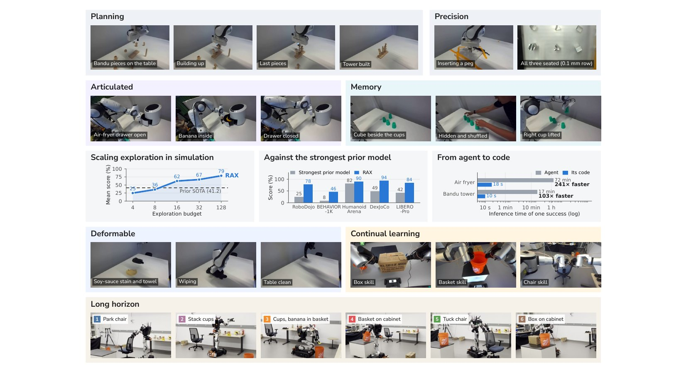
摘要 Abstractp.1
Robot learning has advanced significantly by scaling demonstration datasets and model capacity; however, deploying a new robot embodiment or task typically necessitates a dedicated teleoperation corpus. Furthermore, resulting policies remain bounded by their imitation distributions, limiting generalization and continual self-improvement. We introduce RAX (Robot Agent eXploration), an open-source framework for robot agents centered on scaling exploration: enabling agents to improve by acquiring online experience and synthesizing executable programs.
机器人学习通过规模化演示数据集与模型容量取得了显著进展；然而，部署一个新的机器人本体或新任务，通常仍需要专门采集一套遥操作数据。更进一步，由此得到的策略始终受限于其模仿分布，从而限制了泛化能力与持续的自我改进。我们提出 RAX（Robot Agent eXploration）——一个以「探索规模化」为核心的开源机器人智能体框架：让智能体通过获取在线经验、并综合出可执行程序来实现自我提升。
In RAX, a general-purpose coding agent generates robot control code directly, operating without action demonstration data, hand-engineered action primitives, or value-function guidance. Through online exploration, the agent identifies decision sequences that achieve task goals and compiles them into modular programs encapsulating the full perception-planning-control loop for fast inference.
在 RAX 中，一个通用编程智能体直接生成机器人控制代码，运行过程不需要动作演示数据、不需要手工设计的动作原语，也不需要价值函数引导。通过在线探索，智能体找出能够达成任务目标的决策序列，并将其编译为模块化程序，把「感知—规划—控制」的完整闭环封装其中，以实现快速推理。
Using RAX, we present a systematic multi-embodiment study on scaling online exploration across fine-grained precision and long-horizon manipulation tasks using single-arm, bimanual, dexterous, mobile, and humanoid systems in simulation and on real robots. Generalization performance on unseen environments improves consistently as exploration scales.
借助 RAX，我们开展了一项系统性的多本体研究：在仿真与真实机器人上，使用单臂、双臂、灵巧手、移动平台与人形系统，考察在线探索规模在细粒度精密任务与长时序操作任务上的作用。随着探索规模扩大，模型在未见环境上的泛化性能持续提升。
In simulation, RAX outperforms top baseline models by +37.4% on average. On real robots, RAX autonomously learns memory-dependent, articulated, high-precision, deformable, and long-horizon mobile manipulation tasks without human demonstrations, continually improving performance by composing verified skills from prior exploration sessions.
在仿真中，RAX 平均高出最强基线模型 +37.4%。在真实机器人上，RAX 无需任何人类演示，即可自主学习依赖记忆的、铰接物体操作的、高精度的、可变形物体操作的以及长时序移动操作的任务，并通过组合先前探索会话中已验证的技能来持续提升性能。
As exploration scales, we observe emergent system capabilities including active perception, error recovery, safety guardrails, and human-robot agent collaboration. We open-source RAX as a generalist robot-agent platform that allows new robot embodiments to be integrated solely via API interfaces, bypassing teleoperated data collection and policy training entirely. More details are available on our project page at robot-agent-exploration.com.
随着探索规模扩大，我们观察到若干涌现出的系统能力，包括主动感知、错误恢复、安全护栏以及人—机器人智能体协作。我们将 RAX 作为通用机器人智能体平台开源：新的机器人本体只需通过 API 接口即可接入，从而完全绕过遥操作数据采集与策略训练。更多细节见项目主页 robot-agent-exploration.com。
本页为全文逐段中英对照（左英文原文，右中文译文）。标题右侧的 p.5 等标签可跳转到原始 PDF 对应页；文中插图与表格均从原文高清裁出，点击可放大。全部符号（如 RAX、VLA）保留原文写法以便检索。
1 引言Introductionp.5
“We want AI agents that can discover like we can, not which contain what we have discovered. Building in our discoveries only makes it harder to see how the discovering process can be done.” — Richard S. Sutton, The Bitter Lesson (2019)
“我们希望 AI 智能体能够像我们一样去发现，而不是只把我们已经发现的东西装进去。把我们已有的发现内建进系统，只会让人更难看清楚：发现的过程本身究竟该如何实现。”——理查德·S·萨顿，《苦涩的教训》（2019）
Robot learning has made substantial progress by scaling demonstration data and model capacity with imitation learning, aiming to replicate the training recipe that transformed language modeling (Kaplan et al., 2020). Vision-language-action (VLA) models and World-Action models (WAMs) fine-tune pretrained VLMs and video generation models, respectively, using large teleoperation corpora (Brohan et al., 2023; Kim et al., 2024; Black et al., 2024). However, deploying a new robot or task still requires a dedicated teleoperation corpus of its own (O’Neill et al., 2024; Team et al., 2024; Black et al., 2024; Intelligence et al., 2025; Bjorck et al., 2025; Liu et al., 2026; Wang et al., 2026d; Yuan et al., 2026; Kim et al., 2026; Bi et al., 2026). Furthermore, the knowledge of such policy models is inherently bounded by the demonstrations they imitate.
机器人学习通过模仿学习不断规模化演示数据与模型容量，取得了长足进步，其目标是复刻那套曾彻底改变语言建模的训练配方（Kaplan et al., 2020）。视觉—语言—动作（VLA）模型与世界—动作模型（WAM）分别微调预训练的 VLM 与视频生成模型，所依赖的正是大规模遥操作语料（Brohan et al., 2023; Kim et al., 2024; Black et al., 2024）。然而，部署一台新的机器人或一个新任务，仍然需要为其单独采集一套专属的遥操作语料（O’Neill et al., 2024; Team et al., 2024; Black et al., 2024; Intelligence et al., 2025; Bjorck et al., 2025; Liu et al., 2026; Wang et al., 2026d; Yuan et al., 2026; Kim et al., 2026; Bi et al., 2026）。更进一步，这类策略模型所掌握的知识，在本质上被它所模仿的那些演示所界定。
Consider a mobile robot tasked with loading a car in an unfamiliar house: while opening doors, grasping bags, and placing objects may each be familiar skills, the robot must adapt to novel scenes, visual appearances, and task compositions while discovering new approaches. This adaptation and discovery process is absent during imitation learning on static teleoperation data. Consequently, these policies struggle to generalize and self-improve, even when provided with environment interactions and test-time compute. This limitation motivates a central question: can robots self-improve and learn to discover new skills through autonomous online experience and active exploration?
设想一台移动机器人被要求在一栋陌生的房子里把行李搬上车：开门、抓取袋子、放置物体也许各自都是它熟悉的技能，但它必须适应全新的场景、视觉外观与任务组合，同时还要发现新的解法。而这种“适应与发现”的过程，在基于静态遥操作数据的模仿学习中恰恰是缺席的。因此，即便为这些策略提供环境交互与测试时计算，它们依然难以泛化、难以自我改进。这一局限引出一个核心问题：机器人能否通过自主的在线经验与主动探索，实现自我改进并学会发现新技能？
Humans learn physical skills by attempting a task, observing the outcome, diagnosing failures, and practicing until their behavior becomes reliable. LLM agents exhibit a similar pattern in software domains: they explore unfamiliar systems by executing programs, inspecting outputs, and revising their work (Yang et al., 2024). Instead of training policies exclusively on teleoperated demonstration data, we let agents program robots directly (Lozano-Perez, 1983) without hand-designed action primitives. The agent explores online to discover decisions that drive task success, then automates these decision-making principles into modular robot programs that integrate perception, planning, and control. It continuously debugs and tests these programs through online execution.
人类学习一项物理技能，靠的是尝试、观察结果、诊断失败，并反复练习，直到行为变得可靠。LLM 智能体在软件领域展现出类似的模式：它们通过执行程序、检查输出、修改代码来探索陌生的系统（Yang et al., 2024）。与其完全依赖遥操作演示数据来训练策略，我们选择让智能体直接为机器人编程（Lozano-Perez, 1983），并且不使用任何手工设计的动作原语。智能体在线探索，找出那些能带来任务成功的决策，随后把这些决策原则自动化成模块化的机器人程序——将感知、规划与控制融为一体。它还会通过在线执行持续地调试与测试这些程序。
These programs encode the agent’s underlying principles for how to generate successful actions based on environment perception, rather than merely mimicking the actions themselves, thereby enabling more robust generalization. Furthermore, the agent can compose, modify, and update these programs when confronting increasingly complex scenes and tasks, continually improving through online experience.
这些程序所编码的，是智能体关于“如何根据对环境的感知来产生成功动作”的底层原则，而不仅仅是对动作本身的模仿，因此能够带来更稳健的泛化能力。更进一步，面对日益复杂的场景与任务，智能体可以对这些程序进行组合、修改与更新，借由在线经验持续自我提升。
We introduce RAX (Robot Agent eXploration), a cognitive architecture for robot agents. Its core organizing principle is scaling exploration: robot agents should improve by gathering their own online experience and optimizing their programs. In RAX, a general-purpose coding agent receives a natural-language instruction, at most a few goal images or visual demonstrations, and a budget of exploration episodes. It interacts directly through the robot’s perception and control interfaces without requiring human teleoperation or value function guidance. The underlying language model parameters remain fixed and no policies are trained; instead, learning updates a persistent workspace of programs, notes, and verified skills. The agent converts successful interactions into autonomous code programs and stores reusable knowledge for subsequent episodes and tasks.
我们提出 RAX（Robot Agent eXploration），一个面向机器人智能体的认知架构。它的核心组织原则是探索规模化（scaling exploration）：机器人智能体应当通过积累自身的在线经验、并优化自己的程序来取得进步。在 RAX 中，一个通用编程智能体接收一段自然语言指令、至多几张目标图像或视觉演示，以及一个「探索回合预算」。它直接通过机器人的感知与控制接口与之交互，既不需要人类遥操作，也不需要价值函数引导。底层语言模型的参数保持固定，也不训练任何策略；所谓“学习”，更新的是一个持久化的工作区——其中包含程序、笔记与已验证技能。智能体把成功的交互转化为自主执行的代码程序，并保存可复用的知识，供后续回合与任务使用。
As exploration scales, we observe several emergent system capabilities: the agent constructs task-relevant 3D perception models, plans actions via pose search in 3D joint space, generates fully automated programs with closed-loop visual and force feedback, and adapts its programs when encountering novel task conditions.
随着探索规模扩大，我们观察到若干涌现出的系统能力：智能体会构建与任务相关的三维感知模型，在三维关节空间中通过位姿搜索来规划动作，生成带有视觉与力觉闭环反馈的全自动程序，并在遇到新的任务条件时对程序做出适配。
Furthermore, we observe agentic behaviors on real robots, including active perception, error recovery, safety guardrails, and active human-robot interaction. For example, the robot executes end-effector contact probing for precise localization when depth measurements are inaccurate. In mobile manipulation experiments, following an initial collision with a cabinet, the agent automatically instantiates a safety check to verify workspace clearance before every base rotation. To test code robustness, the agent actively requests the human operator to vary object layouts, systematically testing the spatial generalization of the autonomous program.
此外，我们在真实机器人上观察到了颇具“主体性”的行为，包括主动感知、错误恢复、安全护栏以及主动的人机交互。例如，当深度测量不准确时，机器人会用末端执行器进行接触式探测以获得精确定位。在移动操作实验中，经历了一次与柜子的碰撞之后，智能体自动加入了一项安全检查：每次底盘旋转之前都要确认工作空间无碰撞。为了测试代码的鲁棒性，智能体还会主动请求人类操作员改变物体布局，从而系统地检验该自主程序的空间泛化能力。
In RAX, we equip the agent with rich multimodal sensing by exposing metric depth and force signals through the robot interface. A unified architecture supports tabletop bimanual arms, dexterous hands, mobile household robots, and humanoids through interfaces to each robot’s sensors, controllers, and kinematic models (Section 4). Unlike standard VLAs or WAMs operating on RGB images alone, the agent autonomously leverages these rich sensing signals to construct 3D point clouds and fit object models directly from perception. It then searches for actions to manipulate these 3D models while accounting for their unique shapes and affordances. Force feedback further enables the agent to resolve spatial uncertainty through contact and enable close-loop control on force signals in insertion tasks. Such multimodal world modeling have been largely absent from generalist policy models, yet naturally align with human cognitive processes.
在 RAX 中，我们通过机器人接口把度量深度与力信号暴露给智能体，从而赋予它丰富的多模态感知。一套统一的架构即可支持桌面双臂、灵巧手、家用移动机器人与足式人形机器人——通过对接各自机器人的传感器、控制器与运动学模型（第 4 节）。与仅依赖 RGB 图像工作的标准 VLA 或 WAM 不同，智能体会自主利用这些丰富的感知信号构建三维点云，并直接从感知中拟合物体模型。随后，它在这些三维模型上搜索操作动作，同时考虑物体独特的形状与可供性。力反馈则进一步让智能体能够通过接触来消解空间不确定性，并在插入类任务中实现基于力信号的闭环控制。这种多模态世界建模在通用策略模型中长期缺位，却与人类的认知过程自然契合。
To enable high-frequency closed-loop control, the agent compiles its decision-making process into executable Python programs that generate actions directly from sensor signals. Unlike prior approaches that rely on human-designed action primitives or policies trained on demonstrations (Lu et al., 2026; Xiao et al., 2026), our approach directly generates robot control programs that encapsulate the full perception-planning-control loop, whereas standard policies discard the underlying decision-making process essential for generalization. In practice, we observe the agent writing programs that automatically segment and identify objects in 3D using point-cloud fitting and hue-based identification, then plan actions grounded in this 3D world model, with retry loops and exception handling naturally incorporated into the code.
为了实现高频闭环控制，智能体把自己的决策过程编译成可执行的 Python 程序，直接由传感器信号生成动作。与依赖人工设计动作原语、或在演示上训练策略的先前方法不同（Lu et al., 2026; Xiao et al., 2026），我们的方法直接生成机器人控制程序，把“感知—规划—控制”的完整闭环封装其中；而标准策略恰恰丢弃了那种对泛化至关重要的底层决策过程。在实践中，我们观察到智能体写出的程序会利用点云拟合与基于色相（hue）的识别，在三维空间中自动分割并识别物体，然后在这个三维世界模型之上规划动作，并且重试循环与异常处理被自然地写进代码里。
Because actions are planned directly on perceived 3D objects rather than learned through imitation, this approach generalizes to far more diverse object layouts and domain variations than standard VLAs or WAMs. For semantically rich perception in open-world environments, the agent can program direct API calls to LLMs (such as Gemini) within the code to assist with object identification, while incorporating checkpoints and exception handling to step in and verify progress. Over the course of exploration, both action inference latency and token counts decrease as an increasing fraction of decisions becomes automated through code.
由于动作是直接在感知到的三维物体上规划出来的，而非通过模仿学习得到，这一方法相比标准 VLA 或 WAM 能泛化到远为多样的物体布局与领域变化。针对开放世界环境中语义丰富的感知需求，智能体可以在代码中直接编程调用 LLM 的 API（例如 Gemini）来辅助物体识别，同时加入检查点与异常处理，以便自己随时介入核验进度。在整个探索过程中，随着越来越多的决策被代码自动化，动作推理的时延与 token 消耗都会下降。
As experience scales with exploration, RAX maintains an intra-task memory file system across episodes to record failure lessons and successful strategies, allowing the agent to continually refine its programs. Across multiple tasks and sessions, we maintain a repository of modular programs as verified skills for various tasks and manipulation primitives. Each skill includes the executable code for a specific task, accompanied by execution logs from successful runs, clear preconditions, and verification checkpoints, allowing skills to be composed and reused for complex downstream tasks.
随着经验随探索而积累，RAX 会在各回合之间维护一个任务内记忆文件系统，用于记录失败教训与成功策略，使智能体能够持续打磨自己的程序。跨多个任务与会话，我们维护一个模块化程序仓库，将其中的程序作为各类任务与操作原语的“已验证技能”。每项技能都包含针对特定任务的可执行代码，并附带成功运行的执行日志、明确的前置条件与验证检查点，从而使技能可以被组合、复用于复杂的下游任务。
In real-world mobile manipulation experiments in household settings, the agent practices individual tasks, each in its own exploration session, such as picking and placing boxes or tucking in office chairs, and commits them as verified skills. When subsequently evaluated on a composite, long-horizon task involving more than six sequential object manipulations, the agent achieves substantial automation and efficiency gains by reusing these stored skills. We envision agents practicing skills in a distributed, parallel fashion to build a rich repository of diverse capabilities, thereby enabling continual lifelong learning.
在家庭场景的真实移动操作实验中，智能体会逐项练习单个任务（每项任务都是一个独立的探索会话），例如搬运箱子、把办公椅推入桌下，并将它们提交为已验证技能。随后在一个包含六步以上连续物体操作的长时序组合任务上评估时，智能体通过复用这些已存储的技能，获得了可观的自动化程度与效率提升。我们设想，智能体可以以分布式、并行的方式练习技能，从而构建一个能力多样的丰富仓库，进而实现持续的终身学习。
Using RAX, we conduct the first large-scale, multi-embodiment, systematic study of scaling exploration for robot agents, spanning fine-grained precision and long-horizon tasks across LIBERO, LIBERO-Pro, RoboDojo, DexJoCo, BEHAVIOR-1K, and HumanoidArena in simulation and on two real robots. We evaluate the resulting policies on unseen scenes, separating exploration from evaluation. Performance grows steadily with exploration, and on fine-grained and long-horizon tasks on which state-of-the-art methods rarely succeed, RAX achieves high success rates, surpassing the strongest prior models by +37.4 on average over five benchmarks (Figure 1, Section F).
借助 RAX，我们首次对机器人智能体的探索规模化开展了大规模、多本体、系统性的研究，覆盖仿真中的 LIBERO、LIBERO-Pro、RoboDojo、DexJoCo、BEHAVIOR-1K 与 HumanoidArena，以及两台真实机器人上的细粒度精密任务与长时序任务。我们在未见场景上评估所得策略，将“探索”与“评测”严格分离。性能随探索规模稳步上升；在那些最先进方法鲜有成功的细粒度与长时序任务上，RAX 取得了很高的成功率——在五个基准上平均超出最强先前模型 +37.4（图 1，F 节）。
Without any expert action trajectories, RAX sets a new state of the art on RoboDojo (+53.4), BEHAVIOR-1K (+38.3), DexJoCo (+31.4), and LIBERO-Pro (+21.2). On HumanoidArena, it sets a new state of the art (+7.9) with three teleoperated demonstrations per task, where every baseline uses 100. On real Franka and Rainbow RB-Y1 robots, RAX masters five complex tabletop manipulation tasks and a long-horizon mobile manipulation task with zero demonstrations, and verified skills accumulated across sessions let later sessions build on earlier ones.
在完全没有专家动作轨迹的情况下，RAX 在 RoboDojo（+53.4）、BEHAVIOR-1K（+38.3）、DexJoCo（+31.4）与 LIBERO-Pro（+21.2）上均创下新的最优结果。在 HumanoidArena 上，它以每个任务仅 3 条遥操作演示（而所有基线均使用 100 条）刷新了最优成绩（+7.9）。在真实的 Franka 与 Rainbow RB-Y1 机器人上，RAX 在零演示条件下掌握了五项复杂的桌面操作任务和一项长时序移动操作任务；跨会话累积的已验证技能，使后续会话能够站在此前会话的基础上继续前进。
We summarize our contributions below:
我们的贡献总结如下：
1. We introduce RAX and establish scaling online exploration as a foundational principle for agentic robotics. In RAX, the agent operates directly through perception and robot control interfaces without policy training, compiling successful decision sequences into executable code programs that run autonomous execution loops.
1. 我们提出 RAX，并把「在线探索规模化」确立为智能体机器人学的一条基础性原则。在 RAX 中，智能体直接通过感知与机器人控制接口工作，无需训练策略；它把成功的决策序列编译为可执行的代码程序，由程序运行自主的执行闭环。
2. Using RAX, we conduct the first systematic, multi-embodiment study of scaling online exploration across simulation and real robot environments. RAX acquires diverse manipulation capabilities solely through autonomous exploration, outperforming state-of-the-art baselines by +37.4 points on average across five simulation benchmarks, while solving high-precision, deformable, articulated, and long-horizon manipulation tasks on real robots without human demonstrations.
2. 借助 RAX，我们首次在仿真与真实机器人环境中，对在线探索规模化开展了系统性的多本体研究。RAX 仅通过自主探索便获得了多样的操作能力，在五个仿真基准上平均超出最先进基线 +37.4 分；同时在真实机器人上、在无人类演示的条件下，解决了高精度、可变形物体、铰接物体与长时序操作任务。
3. We demonstrate rapid adaptation and continual learning on real robots, showing that generated programs can be selectively updated in response to environmental and task shifts while retaining verified skills in a persistent repository for composition and reuse in complex tasks.
3. 我们在真实机器人上展示了快速适应与持续学习：生成的程序能够针对环境与任务的变化被“有选择地”更新，同时把已验证技能保留在持久化仓库中，供复杂任务的组合与复用。
We release the full architecture of RAX, together with its agent instructions, skills, benchmark integrations, and evaluation protocols, as a generalist robot-agent platform, on which a new robot can be brought up through an interface alone, without data collection or policy training.
我们开源了 RAX 的完整架构，连同其智能体指令、技能、基准集成与评测协议，作为一个通用机器人智能体平台：在这套平台上，一台新机器人仅凭一个接口即可完成接入，既不需要采集数据，也不需要训练策略。
2 相关工作Related Workp.7
Language Models for Robot Control. A substantial body of work uses pretrained language models as high-level planners or program generators for robots. SayCan grounds language-model plans in learned affordances (Ahn et al., 2022), Inner Monologue folds environment feedback into iterative replanning (Huang et al., 2022), and Code as Policies, ProgPrompt, and VoxPoser synthesize executable programs, situated task plans, or 3D value maps directly from instructions (Liang et al., 2023; Singh et al., 2022; Huang et al., 2023). These methods typically invoke the model zero-shot or with a few in-context examples, producing a plan or a program that is executed with little opportunity to improve from experience. RAX instead treats the language model as a learner: it interacts with the robot over many episodes and revises its perception and control programs according to what it observes.
面向机器人控制的语言模型。大量工作把预训练语言模型用作机器人的高层规划器或程序生成器。SayCan 将语言模型的规划落地到学习得到的可供性上（Ahn et al., 2022）；Inner Monologue 把环境反馈纳入迭代重规划（Huang et al., 2022）；Code as Policies、ProgPrompt 与 VoxPoser 则直接从指令综合出可执行程序、情境化的任务计划或三维价值图（Liang et al., 2023; Singh et al., 2022; Huang et al., 2023）。这些方法通常以零样本或少量上下文示例的方式调用模型，产出一个计划或程序后即执行，几乎不给它从经验中改进的机会。RAX 相反，把语言模型当作一个学习者：它跨越大量回合与机器人交互，并根据自己观察到的结果不断修改其感知与控制程序。
Agentic Robot Learning. More recently, several works let coding agents improve robot behavior through interaction. ENPIRE runs agents in a closed loop of automatic reset, rollout, and policy training on a fleet of bimanual arms, and accelerates discovery by scaling the fleet (Xiao et al., 2026); FAEA and Encore refine policy programs from execution feedback, the latter starting from a few teleoperated demonstrations (Tsui et al., 2026; Kang et al., 2026); Baton explores long-horizon tasks subtask by subtask with transition-aware memory (Xu et al., 2026); SimEX develops robot skills in a simulator reconstructed from the physical workspace before a few trials on the real robot (Hu et al., 2026); RPG practices in simulation on tasks derived from an offline trajectory dataset and refines a library of reusable skills (Wang et al., 2026e); EmbodiedSWE turns coding-agent solutions into training data for vision-language-action models (You et al., 2026); and CaP-X benchmarks coding agents on manipulation (Fu et al., 2026).
智能体式机器人学习。更近期的一些工作让编程智能体通过交互来改进机器人的行为。ENPIRE 在一群双臂机械臂上以“自动重置—采样执行—策略训练”的闭环运行智能体，并通过扩展机群规模来加速发现（Xiao et al., 2026）；FAEA 与 Encore 依据执行反馈来改进策略程序，后者从少量遥操作演示出发（Tsui et al., 2026; Kang et al., 2026）；Baton 借助“转移感知”的记忆逐子任务地探索长时序任务（Xu et al., 2026）；SimEX 先在与物理工作空间对应的重建仿真器中发展机器人技能，再到真实机器人上做少量试跑（Hu et al., 2026）；RPG 在仿真中针对由离线轨迹数据集派生出的任务进行练习，并打磨一个可复用技能库（Wang et al., 2026e）；EmbodiedSWE 把编程智能体的解转化为视觉—语言—动作模型的训练数据（You et al., 2026）；CaP-X 则对操作场景中的编程智能体进行基准评测（Fu et al., 2026）。
These works establish that agents can improve robot behavior through interaction, and have so far demonstrated it mainly in tabletop manipulation with parallel-jaw grippers (Xiao et al., 2026; Tsui et al., 2026; Kang et al., 2026; Xu et al., 2026; Hu et al., 2026; Wang et al., 2026e), often on a single platform (Xiao et al., 2026; Hu et al., 2026; Wang et al., 2026e), with humanoid and mobile settings explored through pretrained locomotion (You et al., 2026) or short pick-up tasks (Fu et al., 2026). Several also draw on demonstrations (Kang et al., 2026), offline datasets (Wang et al., 2026e), reconstructed simulators (Hu et al., 2026), or neural policy training (Xiao et al., 2026). RAX complements these efforts: it learns each task on the robot itself, from its own exploration, and does so across single-arm and bimanual manipulators, dexterous hands, mobile manipulators performing long-horizon household activities, and legged humanoids whose locomotion the agent constructs itself, on established benchmarks and on real robots. On this basis, it studies systematically how performance scales with exploration, with 3D perception, and with accumulated memory.
这些工作确立了“智能体可以通过交互改进机器人行为”这一结论，但迄今主要在采用平行夹爪的桌面操作场景中加以验证（Xiao et al., 2026; Tsui et al., 2026; Kang et al., 2026; Xu et al., 2026; Hu et al., 2026; Wang et al., 2026e），且常常局限于单一平台（Xiao et al., 2026; Hu et al., 2026; Wang et al., 2026e）；人形与移动场景则是借助预训练的运动控制（You et al., 2026）或短程抓取任务（Fu et al., 2026）来探索的。其中若干方法还依赖演示（Kang et al., 2026）、离线数据集（Wang et al., 2026e）、重建的仿真器（Hu et al., 2026）或神经网络策略训练（Xiao et al., 2026）。RAX 与这些工作形成互补：它在机器人本体上、从自身探索中学习每一项任务，且横跨单臂与双臂操作臂、灵巧手、执行长时序家务活动的移动操作平台，以及由智能体自行构建运动控制方式的足式人形机器人——既在公认基准上，也在真实机器人上。在此基础上，它系统地研究了性能如何随探索规模、随三维感知、以及随累积记忆而扩展。
Scaling Robot Learning. Vision-language-action models (Brohan et al., 2023; Kim et al., 2024; Black et al., 2024) and imitation learning methods (Zhao et al., 2023; Chi et al., 2025) improve robot capability by scaling demonstration data and model size, and world action models extend this recipe by learning to predict how the scene evolves together with the actions that produce it (Wang et al., 2026d; Yuan et al., 2026; Kim et al., 2026; Bi et al., 2026). To cover multiple embodiments, generalist policies pool demonstrations across robots into a single training mixture (O’Neill et al., 2024; Team et al., 2024; Doshi et al., 2024; Intelligence et al., 2025; Bjorck et al., 2025), and a robot outside this mixture requires data of its own and further fine-tuning. In language modeling, computation spent at inference has emerged as a further scaling axis (Guo et al., 2025; OpenAI, 2024). RAX instead studies how robot capability grows with online experience acquired and organized by the agent itself, without additional demonstrations or parameter updates. Because this experience is gathered on the robot at hand, RAX extends to a new embodiment without pooled data, and adapts to it within a few episodes of exploration.
机器人学习的规模化。视觉—语言—动作模型（Brohan et al., 2023; Kim et al., 2024; Black et al., 2024）与模仿学习方法（Zhao et al., 2023; Chi et al., 2025）通过规模化演示数据与模型规模来提升机器人能力；世界动作模型进一步扩展了这一配方——学习预测场景如何演化，以及产生这种演化的动作（Wang et al., 2026d; Yuan et al., 2026; Kim et al., 2026; Bi et al., 2026）。为了覆盖多种本体，通用策略会把跨机器人的演示汇集到一个统一的训练混合中（O’Neill et al., 2024; Team et al., 2024; Doshi et al., 2024; Intelligence et al., 2025; Bjorck et al., 2025），而一旦某台机器人不在这份混合之中，就需要它自己的数据并做进一步微调。在语言建模领域，投入在推理阶段的计算已成为又一条规模化轴线（Guo et al., 2025; OpenAI, 2024）。RAX 转而研究：机器人能力如何随“由智能体自身获取并组织的在线经验”而增长——既不需要额外演示，也不更新模型参数。由于这些经验就是在手边这台机器人上收集的，RAX 无需汇集数据即可迁移到新的本体，并在几个探索回合之内完成适应。
Memory and Cognitive Architectures. Language agents can retain experience as explicit memory: Voyager grows a library of code skills through open-ended exploration in a game (Wang et al., 2023), and Reflexion and ExpeL distill feedback into textual lessons that improve later attempts (Shinn et al., 2023; Zhao et al., 2024). At a broader level, classical cognitive architectures such as Soar and ACT-R structure intelligent behavior around perception, memory, and deliberation (Laird et al., 1987; Anderson et al., 2004), CoALA revisits this structure for language agents (Sumers et al., 2023), and Sutton’s common model of the intelligent agent (Sutton, 2022) and OaK architecture (Sutton et al., 2022) hold that all task-specific knowledge should be acquired at runtime from the agent’s own experience, a view developed further as the era of experience (Silver & Sutton). RAX brings this view to physical robots, where every skill is executable control code that enters memory only after it succeeds without supervision.
记忆与认知架构。语言智能体可以把经验保留为显式记忆：Voyager 在游戏中进行开放式探索，逐步生长出一个代码技能库（Wang et al., 2023）；Reflexion 与 ExpeL 把反馈提炼为文本形式的“经验教训”，用以改进后续尝试（Shinn et al., 2023; Zhao et al., 2024）。在更宏观的层面上，Soar、ACT-R 等经典认知架构围绕感知、记忆与推理来组织智能行为（Laird et al., 1987; Anderson et al., 2004）；CoALA 为语言智能体重访了这一结构（Sumers et al., 2023）；而 Sutton 提出的智能体通用模型（Sutton, 2022）与 OaK 架构（Sutton et al., 2022）主张：一切任务相关的知识都应当在运行时、从智能体自身的经验中获得——这一观点在其后“经验时代”的论述中被进一步展开（Silver & Sutton）。RAX 把这一观点带到了物理机器人上：在这里，每一项技能都是可执行的控制代码，只有当它在无人监督下成功执行之后，才会进入记忆。
3 RAX 认知架构The RAX Cognitive Architecturep.9
Inspired by Sutton’s OaK architecture (Sutton et al., 2022), RAX acquires all task-specific knowledge at runtime from the agent’s own experience. Building on task-agnostic robot control interfaces and low-level controllers, the agent autonomously develops task-specific perception, manipulation strategies, and executable skills through exploration. The following modules surround the language-model core: perception and control, autonomous robot program, and memory for continual learning (Figure 2).
受 Sutton 的 OaK 架构启发（Sutton et al., 2022），RAX 在运行时从智能体自身的经验中获取全部任务相关知识。在任务无关的机器人控制接口与底层控制器之上，智能体通过探索自主发展出针对具体任务的感知、操作策略与可执行技能。围绕语言模型这一核心，架构由以下模块构成：感知与控制、自主机器人程序，以及用于持续学习的记忆（图 2）。
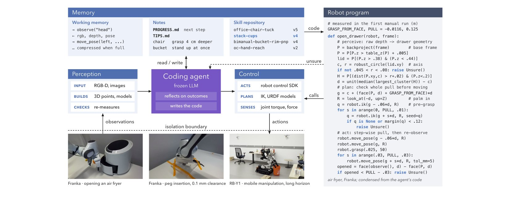
raise Unsure()），从而把控制权交还智能体，由后者做出调整并改进代码库。
Figure 2 | System architecture and self-improving loop of RAX. The coding agent, powered by a frozen LLM, interacts with physical hardware across an isolation boundary using multimodal perception and control SDK interfaces. By reflecting on execution outcomes, the agent continually updates a persistent memory system containing working context, task notes, and a versioned repository of verified skills. During exploration, the agent compiles its perception and planning logic into standalone Python control programs that execute high-frequency loops directly on the robot. When encountering perception or planning failures due to environment variations, the program raises an exception (raise Unsure()), delegating control back to the agent to make adjustments and refine the codebase.
3.1 多模态感知Multimodal Perceptionp.9
To build a physically accurate model of the world, we equip the agent with multimodal sensory inputs, including RGB images, depth maps, camera parameters, and force signals. The agent can thus construct 3D world models using depth data while regulating contact via force feedback. Notably, the 3D perception and object model fitting behaviors completely emerges from the agent exploration process, while we provide no skills, instructions or examples regarding specific usage of these multimodal sensing signals.
为了构建物理上准确的世界模型，我们为智能体配备了多模态感官输入，包括 RGB 图像、深度图、相机参数与力信号。这样一来，智能体既可以用深度数据构建三维世界模型，又能通过力反馈来调节接触。值得注意的是，三维感知与物体模型拟合这些行为完全是从智能体的探索过程中自发涌现出来的——我们并没有就这些多模态感知信号的具体用法提供任何技能、指令或示例。
A real-robot task illustrates this process: opening an air fryer’s drawer, placing a banana in its basket, and closing the drawer (Figure 3). The agent lifts RGB-D observations into a point cloud in the robot’s base frame and constructs a geometric model of the fryer from its own measurements, localizing it in each new scene layout by fitting the fryer’s axis and handle direction with robust estimators. Because the drawer moves, the model is articulated, consisting of a fixed body and a drawer that slides along a prismatic joint. The agent plans every action, including grasping, pulling, and releasing, on this model and checks each motion for collisions. Section G.2.1 details the model, the estimators, and how the program uses them. On a humanoid, the same process yields a gravity-aligned frame from the floor plane, landmarks for self-localization, and tracking updates after every gait cycle.
一个真实机器人任务可以说明这一过程：打开空气炸锅的抽屉，把一根香蕉放进它的炸篮，再关上抽屉（图 3）。智能体把 RGB-D 观测提升为机器人基座坐标系下的点云，并依据自身测量构建炸锅的几何模型；在每一个新的场景布局中，它用鲁棒估计器拟合炸锅的轴线与把手方向，从而完成定位。由于抽屉会移动，该模型是铰接式的：由一个固定机身和一个沿移动副滑动的抽屉组成。在此模型之上，智能体规划每一个动作——包括抓握、拉出与释放——并对每个动作做碰撞检查。G.2.1 节详细介绍了该模型、各个估计器以及程序如何使用它们。在人形机器人上，同样的过程可以得到由地面平面导出的重力对齐坐标系、用于自定位的地标，以及在每个步态周期之后更新的跟踪。
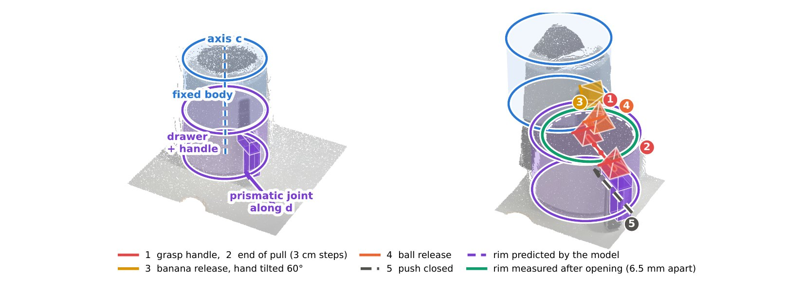
3.2 规划与控制Planning and Controlp.10
Given the accurate world model, the agent then directly plans the robot actions in 3D world using robot control SDK and kinematic solvers. As the interface between the agent and the physical robot, we expose the robot’s control SDK as MCP tools, together with helpers such as an inverse kinematics (IK) solver and the robot’s URDF model. With these tools, the agent plans each motion and searches for feasible trajectories, accounting for the robot’s posture, collisions, and joint limits.
有了准确的世界模型，智能体便可借助机器人控制 SDK 与运动学求解器，直接在三维世界中规划机器人动作。作为智能体与物理机器人之间的接口，我们把机器人的控制 SDK 封装为 MCP 工具暴露出来，并附带逆运动学（IK）求解器、机器人的 URDF 模型等辅助工具。借助这些工具，智能体会考虑机器人位姿、碰撞与关节限位，为每个动作做规划并搜索可行轨迹。
In the air fryer task (Section G.2), the drawer’s handle has a short horizontal arm on top and a grip hanging down from its end. Grasping the grip from the front, as a person would, leaves the arm almost no joint margin near its base for the pull, so the agent grasps the short arm from above and pulls the drawer open in 3 cm steps (actions 1 and 2 in Figure 3(b)). The 18 cm banana barely fits the 19 cm basket: released from a level hand, it touched the top of the fryer, and the opening fingers would hit the fryer’s body. The agent therefore tilts the hand by 60° about the banana’s axis, with the banana’s concave side toward the fryer, and releases it with its middle just beyond the basket’s center (action 3). The agent found these motions itself, by searching through the control tools during exploration, without human advice or demonstrations; Figure 27 shows them on the real robot.
在空气炸锅任务中（G.2 节），抽屉把手由顶部一段短横臂和从横臂末端垂下的一段握柄构成。若像人那样从正面捏住握柄，横臂根部在拉动方向上几乎不留关节余量；因此智能体改为从上方抓取这段短横臂，并以 3 cm 为步长把抽屉拉开（图 3(b) 中的动作 1 与 2）。18 cm 长的香蕉与 19 cm 的炸篮勉强相配：若以水平手姿释放，香蕉会碰到炸锅顶部，而张开的手指也会撞到锅体。于是智能体让手绕香蕉轴线倾斜 60°，使香蕉的凹面朝向炸锅，并让香蕉中段刚好越过炸篮中心后再释放（动作 3）。这些动作全部由智能体自己在探索过程中通过操控工具搜索得到，没有任何人类建议或演示；图 27 展示了它们在真实机器人上的执行情况。
3.3 从探索到自主机器人程序From Exploration to Autonomous Robot Programp.11
Generating each action with LLM-reasoning is expensive and slow. To enable high-frequency close-loop planning, the agent automates the decision process into a autonomous robot program with code that can directly execute to complete the task. Unlike prior work on coding agents for robotics (Lu et al., 2026; Xiao et al., 2026), we do not rely on hand-designed primitive skills or train policies by imitating human demonstrations, which inherently restricts scaling beyond human capability (Sutton, 2019). Instead, RAX agents directly control the robot without pre-trained policies or hand-coded primitives, progressively transferring control from high-level deliberation to autonomous code programs, resulting in autonomous decision-making through agent-native coding.
用 LLM 推理逐条生成动作既昂贵又缓慢。为了实现高频闭环规划，智能体把决策过程自动化成一个自主机器人程序——其中的代码可以直接执行以完成任务。与以往面向机器人的编程智能体工作不同（Lu et al., 2026; Xiao et al., 2026），我们不依赖手工设计的原语技能，也不通过模仿人类演示来训练策略——因为后者本身就会把能力上限锁在人类水平之下（Sutton, 2019）。相反，RAX 智能体在没有任何预训练策略、也没有手写原语的情况下直接控制机器人，把控制权从高层思考逐步转移到自主代码程序，最终通过「智能体原生编程」实现自主决策。
Initially, the agent controls the robot through tool calls while perceiving the scene via the core LLM. Upon achieving task success, it compiles these decisions into code programs that run independently of main-agent deliberation. For example, after identifying object shapes and geometries, the agent generates a 3D object model and automatically estimates its position and pose using depth-derived point clouds when encountering new layouts. This eliminates the need for the main agent to repeatedly perceive and process raw images, which is slow and costly.
起初，智能体通过工具调用来控制机器人，同时借助核心 LLM 感知场景。一旦任务成功，它就把这些决策编译成代码程序，使其脱离主智能体的推理而独立运行。例如，在识别出物体的形状与几何之后，智能体会生成一个三维物体模型；当遇到新的布局时，它能利用深度导出的点云自动估计该物体的位置与姿态。这就免去了主智能体反复感知、处理原始图像的需要——那既慢又贵。
The agent decomposes tasks into stages and implements modular skills with programs that check preconditions, execute motions, and verify outcomes, operating much like a software development process through testing, debugging, and code versioning. Empirical measurements from exploration, such as gait-cycle distance or reliable grasp orientation, become program parameters. The agent tests successive code versions during exploration and uses stage-level failures to identify which specific skill requires revision. The hammer-delivery program on the HumanoidArena DoubleDesk task (Section D.3), for instance, decouples approach, grasp, transit, obstacle crossing, and placement so that every failure traces directly to a specific stage (Figure 20).
智能体把任务分解为多个阶段，并用「检查前置条件—执行动作—验证结果」的程序来实现模块化技能，其运作方式很像软件开发流程：测试、调试、代码版本管理。探索中得到的经验测量值——例如步态周期距离、可靠的抓取姿态——会成为程序参数。智能体在探索过程中不断测试后续版本的代码，并利用阶段级失败来定位究竟是哪个具体技能需要修改。例如，HumanoidArena 的 DoubleDesk 任务上的“搬运锤子”程序（D.3 节）把接近、抓取、转运、跨越障碍与放置解耦，使得每一次失败都能直接追溯到某个具体阶段（图 20）。
Once reliable, the program is tested unattended in a new scene with exception handling and agent monitoring the generated logs in case of emergency situations. If perception or planning fails due to significant open-world variations, the program throws an exception, enabling the agent to step in, perceive the environment, and make necessary adjustments. Through scaled program testing and debugging during exploration, the result is a fully automated program that perceives, decides, and acts in unseen scenes with minimal or no agent intervention. Automated perception and planning allow it to adapt to new layouts in ways that replayed trajectories cannot. Deployment thus spans a continuum from the agent acting alone to a fully automated program, along which the agent advances as it accumulates experience.
一旦程序足够可靠，它就会在新场景中“无人值守”地接受测试：程序自带异常处理，而智能体则监视其产生的日志，以应对突发情况。如果因开放世界中较大的变化导致感知或规划失败，程序会抛出异常，使智能体得以介入、重新感知环境并做出必要调整。通过在探索期间规模化地测试与调试程序，最终得到的是一个在未见场景中也能感知、决策与行动的全自动程序，且几乎或完全不需要智能体介入。自动化的感知与规划使它能以“重放轨迹”无法做到的方式适应新布局。因此，部署实际上是一段连续谱：一端是智能体亲自操作，另一端是全自动程序；随着经验积累，智能体在这条谱上不断向右推进。
3.4 带记忆的持续学习Continual Learning with Memoryp.11
As online experience scales and decision-making becomes automated, RAX continually expands its capabilities by constructing persistent memory systems for reuse across episodes and tasks. Persistent memory carries experience at multiple timescales (Figure 2, top). Within a session, notes retain the current strategy, confirmed results, failed approaches, and useful parameters through context compression, which lives in the agent scratch pad in workspace. Across sessions and tasks, a skill repository stores each skill with its code, the conditions under which it applies, and evidence of its execution. It is continually contributed and merged by agents across different sessions and tasks, evolving with more experience.
随着在线经验不断积累、决策过程不断自动化，RAX 通过构建持久化记忆系统来持续扩展自身能力，使经验可跨回合、跨任务复用。持久化记忆在多个时间尺度上承载经验（图 2 上部）。在单次会话内，“笔记”通过上下文压缩保留当前策略、已确认的结果、失败的尝试以及有用的参数，它们存放在智能体工作区的草稿本中。跨会话、跨任务，一个“技能仓库”保存每项技能的代码、适用条件及其执行证据；不同会话与任务中的智能体会不断向其贡献内容并合并，使它随经验增长而演化。
A skill enters the repository only after it executes successfully without supervision, together with the evidence of that execution. Later sessions retrieve and compose skills that are known to work instead of rediscovering the same behavior. The benefit is largest on real robots, where every episode costs operator time: a grasp or a drawer-opening skill becomes a building block for longer tasks, and each session leaves the library more capable than it found it.
一项技能只有在无人监督下成功执行之后，才会连同其执行证据一起进入仓库。后续会话可以直接检索并组合这些“已知可用”的技能，而不必把同样的行为再重新发现一遍。这种收益在真实机器人上最大——在那里每个回合都要消耗操作员的时间：一项抓取或开抽屉的技能会成为更长任务的基本积木，而每一次会话结束时，这个技能库都比开始时更有能力。
Learning via Practice. Much like humans, who repeatedly practice individual skills to gain proficiency before rehearsing complex, long-horizon tasks end-to-end, robot agents follow a similar cognitive progression. Here we depart from the conventional per-task training and evaluation protocol in robotics and frame robot learning as a continual process, where it generates and refines skills through practice and gradually moves on to more complex tasks by reusing the skills in the repository. Taking household tasks as an example, we let the agent practice individual subtasks, such as picking and placing (PnP) boxes and buckets or sorting tabletop items; each practice session is an exploration session on a single sub-task. During this process, the agent develops autonomous programs, rehearses them end-to-end to improve robustness, and eventually commits them to a multi-task skill library. During deployment on long-horizon compositional tasks, the agent reuses these subtask skills directly while verifying execution evidence and preconditions to handle environmental variations beyond those encountered during practice. Such skill acquisition and practice can also occur in parallel across multiple robots and tasks, enabling collective learning across multi-robot systems.
在练习中学习。人类会反复练习单项技能，熟练之后再端到端地排练复杂的长时序任务；机器人智能体遵循着相似的认知进阶路径。在这里，我们背离机器人学中“按任务训练、按任务评测”的惯例，把机器人学习重新表述为一个持续的过程：通过练习生成并打磨技能，再借助仓库中的技能逐步走向更复杂的任务。以家务任务为例，我们让智能体练习各个子任务，例如拾放（PnP）箱子与水桶，或整理桌面物品；每一次练习会话都是针对单个子任务的一个探索会话。在此过程中，智能体开发自主程序，端到端地排练以提高鲁棒性，最终把它们提交到一个多任务技能库中。在长时序组合任务上部署时，智能体直接复用这些子任务技能，同时核验执行证据与前置条件，以应对超出练习期间所遇范围的环境变化。这样的技能获取与练习也可以在多台机器人、多个任务上并行进行，从而实现多机器人系统之间的集体学习。
3.5 并行多智能体与多环境探索Parallel Multi-Agent and Multi-Environment Explorationp.12
Online exploration can be time-consuming due to the latency of agent reasoning and environment execution. To accelerate this process, we parallelize exploration across multiple agents and environments, enabling agents to evaluate distinct strategies concurrently rather than sequentially within a single environment. In our simulation experiments, leveraging parallel environments and agents reduces the wall-clock time required to reach target performance by more than 2×, highlighting the scalability of parallelized exploration for robotic systems. Section 5.3.1 measures how parallel exploration changes the time to consume the exploration budget and the score of the resulting program.
由于智能体推理与环境执行都存在时延，在线探索可能相当耗时。为加速这一过程，我们把探索并行化到多个智能体与多个环境上，使智能体能够同时评估不同的策略，而不必在单一环境中串行进行。在我们的仿真实验中，利用并行环境与并行智能体，把达到目标性能所需的墙上时间（wall-clock time）缩短了一半以上（加速超过 2×），凸显了并行化探索对机器人系统的可扩展性。5.3.1 节测量了并行探索如何改变“消耗完探索预算”所需的时间，以及所得程序的得分。
4 RAX 系统The RAX Systemp.12
RAX supports a wide range of embodiments in simulation and in the real world, including single-arm and bimanual manipulators, dexterous hands, mobile manipulators, and humanoids, with one agent architecture. To do so, it adopts a separation familiar from software engineering, in which a frontend is kept apart from the backend that serves it. In RAX, the backend is the robot’s physical stack: the hardware drivers or the simulator, the low-level controllers, the sensor pipelines, and the safeguards around them. The frontend is the agent’s workspace, where the agent observes, decides, and acts, and where it writes the programs that encode its decision logic.
RAX 用同一套智能体架构，支持仿真与真实世界中多种多样的本体：单臂与双臂操作臂、灵巧手、移动操作平台以及人形机器人。为此，它采用了软件工程中常见的分离设计：把「前端」与为其服务的「后端」隔离开来。在 RAX 中，后端是机器人的物理栈——硬件驱动或仿真器、底层控制器、传感器流水线，以及围绕它们的安全保护机制。前端则是智能体的工作区：它在其中观察、决策与行动，也在其中写下编码其决策逻辑的程序。
The two meet only at a tool interface (Figure 4), and the same frontend connects to the backend of every platform, from the real Franka and Rainbow RB-Y1 robots to each simulated benchmark. The agent never touches the backend: it cannot modify controllers, drivers, or robot infrastructure. Because the agent acts only through these tools, its programs contain the decision logic of a task, namely perception, planning, and the checks between stages, while low-level control, from joint-level PD control to whole-body motion tracking on humanoids, and the enforcement of safety limits remain in the backend.
两者只在一个「工具接口」处相遇（图 4），而同一个前端可以连接到每一个平台的后端——从真实的 Franka 与 Rainbow RB-Y1 机器人，到各个仿真基准。智能体从不直接触碰后端：它既不能修改控制器、驱动，也不能改动机器人基础设施。正因为智能体只通过这些工具行动，它的程序所包含的是任务的决策逻辑，即感知、规划以及各阶段之间的检查；而底层控制——从关节级 PD 控制到人形机器人的全身运动跟踪——以及安全限位的强制执行，始终留在后端。
The remainder of this section describes the separation and what each side provides (Section 4.1), and the control interface through which one frontend drives arms, dexterous hands, mobile manipulators, and humanoids (Section 4.2).
本节余下部分将介绍这种分离以及两侧各自提供什么（4.1 节），以及同一个前端如何驱动机械臂、灵巧手、移动操作平台与人形机器人的控制接口（4.2 节）。
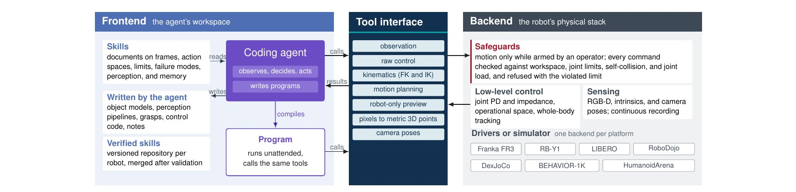
4.1 前端—后端分离Frontend–Backend Separationp.13
On a real robot, the backend owns everything that keeps the hardware calibrated and safe. It runs the vendor’s drivers and real-time controllers, serves calibrated RGB-D images together with the intrinsics and poses of their cameras, and records the robot’s sensors and state continuously, so that the agent can review the outcome of an action after the fact. It also enforces the safeguards. Motion is enabled only while an operator has armed the robot, and disarming halts it immediately; every motion command is validated before execution against workspace bounds, joint limits, and self-collision, and on the RB-Y1 mobile manipulator also against joint load. A command that violates a limit is refused before the robot moves, together with the limit it violated, so that the agent can change its approach.
在真实机器人上，后端负责一切让硬件保持校准与安全的事务。它运行厂商提供的驱动与实时控制器，提供经过标定的 RGB-D 图像及其相机内参与位姿，并持续记录机器人的传感器与状态，使智能体能够在事后回看某个动作的结果。它同时负责执行安全保护：只有在操作员对机器人「上使能」期间运动才被允许，一旦撤除使能便立即停止；每一条运动指令在执行前都要针对工作空间边界、关节限位与自碰撞进行校验，在 RB-Y1 移动操作平台上还要校验关节负载。违反限位的指令会在机器人移动之前被拒绝，并回报它所违反的具体限位，以便智能体改变做法。
The frontend receives exactly two things from the system, tools and skills. The tools expose as much of the backend as possible: observation, raw control, and model-based helpers in the form of forward and inverse kinematics, motion planning where the platform offers it, and a preview that executes a candidate motion on the robot model alone, without the scene. They also provide the geometric primitives on which perception is built, namely the back-projection of pixels to metric 3D points, the poses of the cameras in the robot’s frame, and the kinematic chain from each camera to the end-effectors.
前端从系统中获得的恰好只有两样东西：工具与技能。工具尽可能多地暴露后端的全部能力：观测、原始控制，以及基于模型的辅助功能——正/逆运动学、平台所能提供的运动规划，还有一个“仅在机器人模型上、不含场景”地执行候选动作的预演。工具还提供感知所依赖的几何原语，即像素到公制三维点的反投影、相机在机器人坐标系中的位姿，以及从每个相机到末端执行器的运动链。
The skills are documents that describe how to work with these tools: the robot’s frames, action spaces, rates, limits, and failure modes, the conventions of perception, and the workflow of exploration and memory. They are organized along four axes, namely task strategy, coordination, perception, and robot-specific control, and are composed into a single workspace for each session according to its embodiment and observation mode. Everything that solves a task, from object models and perception pipelines to grasps and control code, is written by the agent, which works in an isolated container with a persistent workspace and standard programming tools.
技能则是一份份文档，描述如何与这些工具协作：机器人的坐标系、动作空间、控制频率、限位与失效模式，感知的约定，以及探索与记忆的工作流程。它们按四条主线组织——任务策略、协同、感知、机器人专属控制——并依据每次会话的本体与观测模式，组合进该会话的单一工作区。所有用来解题的东西，从物体模型、感知流水线到抓取与控制代码，全部由智能体自己编写；智能体在一个隔离容器中工作，拥有持久化工作区与标准编程工具。
This division has three consequences. First, programs written by the agent call exactly the tools that the agent itself calls, so code developed interactively runs unchanged as a fully automated program. Second, the interface returns compact results, consisting of structured state and the final image of each motion, while the complete images and actions of every motion are stored as episodic evidence that the agent retrieves on demand, which keeps the agent’s context small over sessions that last many hours. Third, on real robots, the skills that agents verify are kept in a versioned repository for each robot, in which every session works on its own branch, and a contribution is merged only after its structure, its entry point, and the evidence of its unattended success have been validated.
这种分工带来三个结果。第一，智能体写出的程序所调用的，正是它自己交互时调用的那些工具，因此在交互中开发出来的代码无需改动即可作为全自动程序运行。第二，接口只返回紧凑的结果——结构化状态加上每个动作的最后一帧图像——而每个动作的完整图像与动作序列则作为「回合证据」存档，由智能体按需检索；这让智能体在长达数小时的会话中仍能保持较小的上下文。第三，在真实机器人上，智能体验证过的技能会保存在每台机器人各自的带版本仓库中：每个会话在自己的分支上工作，只有当贡献的结构、入口点以及“无人值守成功”的证据都通过校验之后，才会被合并。
Most importantly, the separation makes RAX multi-embodiment by construction. Bringing up a new robot requires only a backend that exposes it through the tool interface, together with documentation of its control and sensing interfaces, while the frontend, the organization of memory, and the evaluation protocol are shared across all platforms. No expert teleoperation data is collected and no policy is trained to bring a robot into RAX. The single-arm, bimanual, dexterous, mobile, and humanoid embodiments of our experiments, in simulation and in the real world, differ only in their backends and in the documentation of their interfaces, and the agent learns to control each of them through exploration.
最重要的是，这种分离使 RAX 在构造上就是多本体的。接入一台新机器人，只需要一个能通过工具接口把它暴露出来的后端，以及对其控制接口与感知接口的文档说明；而前端、记忆的组织方式与评测协议，则为所有平台共享。把一台机器人接入 RAX，既不需要采集专家遥操作数据，也不需要训练策略。我们实验中的单臂、双臂、灵巧手、移动与人形本体（无论仿真还是真实世界），彼此之间的差别仅在于其后端以及接口文档，而智能体要学会控制它们中的每一个，靠的都是探索。
4.2 多本体控制接口Multi-Embodiment Control Interfacep.14
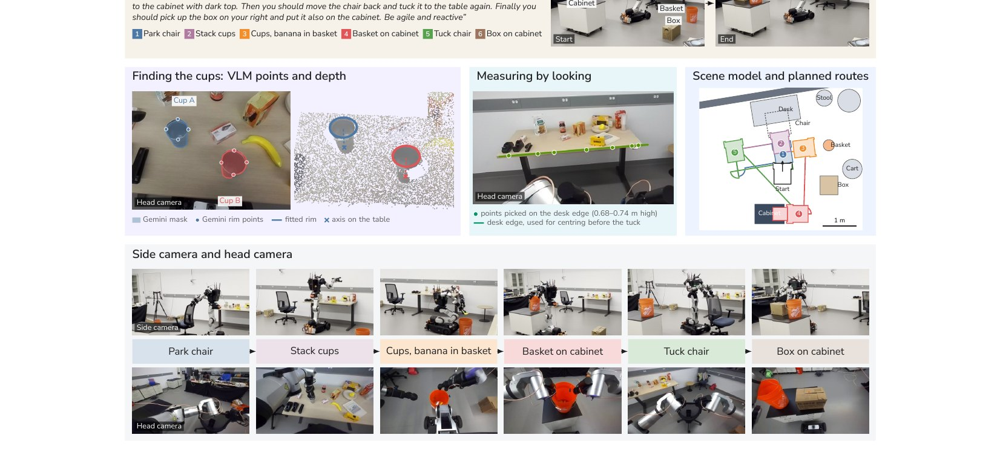
RAX adopts a layered control design. Low-level controllers, from joint position and impedance controllers to whole-body motion trackers, run in the backend and are responsible for high-rate tracking and stability, while the agent makes decisions at the level of short action chunks and motion goals. Each platform exposes raw control for full expressiveness, together with model-based helpers in the form of forward and inverse kinematics, collision-aware motion planning (Sundaralingam et al., 2023), and a robot-only preview that executes a candidate motion on the robot model without the scene. The agent thus chooses its own level of abstraction, from individual joint targets to planned free-space motions. Table 1 summarizes this construction for each platform.
RAX 采用分层控制设计。从关节位置控制器、阻抗控制器到全身运动跟踪器，底层控制器运行在后端，负责高频跟踪与稳定性；而智能体则在「短动作块」与运动目标的层级上做决策。每个平台都暴露原始控制以获得最大表达力，同时提供基于模型的辅助功能：正/逆运动学、带碰撞感知的运动规划（Sundaralingam et al., 2023），以及不含场景、只在机器人模型上执行候选动作的预演。因此，智能体可以自行选择抽象层级——从单个关节目标，到规划出的自由空间运动。表 1 汇总了每个平台上的这一构造。
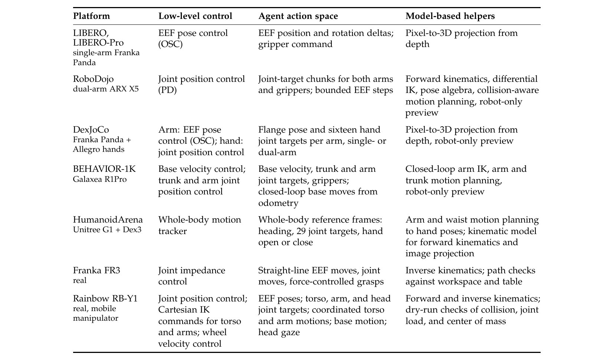
On the real robots, the backend wraps each vendor’s own control stack. The Franka FR3 arm runs joint impedance control, and the agent commands straight-line Cartesian moves of the tool center point, joint-space moves whose paths are checked against the workspace and the table before the arm moves, and force-controlled grasps that close the gripper to a target width with a set force. The Rainbow RB-Y1, a wheeled mobile manipulator with a torso, two arms, and a two-joint head that carries an RGB-D camera, runs joint position control on its robot controller, which also accepts Cartesian IK commands for the torso and arms.
在真实机器人上，后端封装各厂商自带的控制栈。Franka FR3 机械臂运行关节阻抗控制，智能体可以命令工具中心点做直线笛卡尔运动、做路径在机械臂移动前已针对工作空间与桌面校验过的关节空间运动，以及执行力控抓取——以设定的力把夹爪闭合到目标宽度。Rainbow RB-Y1 是一台轮式移动操作平台，具有躯干、两条手臂，以及一个搭载 RGB-D 相机的两自由度头部；它的机器人控制器运行关节位置控制，同时也接受针对躯干与手臂的笛卡尔 IK 指令。
The agent commands end-effector poses, joint-space postures of the torso, arms, and head, coordinated motions of the torso and arms, motions of the differential-drive base, and the gaze of the head camera. It can query the vendor’s kinematic model for the collisions, joint load, and center of mass of any posture, and dry-run any motion command to learn whether it would be accepted. Neither robot offers a motion planner, so the agent composes long motions from short checked moves through clear intermediate postures.
智能体可以命令末端执行器位姿、躯干/手臂/头部的关节空间姿态、躯干与手臂的协同运动、差速底盘的移动，以及头部相机的注视方向。它可以向厂商的运动学模型查询任意姿态下的碰撞、关节负载与质心，也可以对任何运动指令做“空跑”试算，以得知它是否会被接受。这两台机器人都没有提供运动规划器，因此智能体会把长动作拆成一连串经过校验的短运动，并经由明确的中间姿态把它们串起来。
On the HumanoidArena benchmark (Wang et al., 2026c), the agent commands the Unitree G1 through whole-body kinematic references rather than joint torques: each reference specifies a desired heading, a full joint configuration, and hand commands, and a whole-body motion tracker converts these references into balanced whole-body motion. Because the robot moves through space only by stepping, locomotion is not provided as a primitive but must be constructed by the agent from leg references, and agents do so by measuring their own gait, calibrating step length, and composing walking, turning, and stepping over obstacles from these measurements.
在 HumanoidArena 基准上（Wang et al., 2026c），智能体通过全身运动学参考量而非关节力矩来指挥 Unitree G1：每个参考量指定期望朝向、完整的关节构型与手部指令，再由全身运动跟踪器把这些参考量转换成平衡的全身运动。由于该机器人只能靠迈步在空间中移动，运动（locomotion）并不是以原语的形式提供的，而必须由智能体基于腿部参考量自行构造——智能体的做法是测量自己的步态、标定步长，再用这些测量值组合出行走、转向与跨越障碍。
5 实验Experimentsp.16
In this section we report our simulation benchmark results as well as case studies on both simulation and real robot experiments.
本节汇报我们在仿真基准上的结果，以及仿真与真实机器人实验的案例研究。
5.1 实验设置Setupp.16
We comprehensively evaluate RAX in both simulated environments and on real-world robotic hardware. In simulation, the evaluation spans six benchmarks covering single-arm, bimanual, dexterous, mobile, and humanoid embodiments: RoboDojo, BEHAVIOR-1K, HumanoidArena, DexJoCo, LIBERO, and LIBERO-Pro. In each session, a coding agent starts in a localized workspace containing only the platform’s baseline skills. Guided by a task description and RGB-D observations, the agent explores training scenes within a strictly defined episode budget. The submitted code is then executed as a fully automated program under each benchmark’s official evaluation protocol (Section C).
我们在仿真环境与真实机器人硬件上对 RAX 进行了全面评估。在仿真中，评测覆盖六个基准，涵盖单臂、双臂、灵巧手、移动与人形本体：RoboDojo、BEHAVIOR-1K、HumanoidArena、DexJoCo、LIBERO 与 LIBERO-Pro。每次会话开始时，编程智能体置身于一个本地化的工作区，其中只有该平台的基线技能。在任务描述与 RGB-D 观测的引导下，智能体在严格规定的回合预算内探索训练场景。随后，提交的代码作为全自动程序，在各基准的官方评测协议下运行（C 节）。
On physical robots, RAX is deployed on a Franka FR3 manipulator to master five distinct tabletop tasks: (1) memory, tracking and finding a hidden cube randomly shuffled under four cups (Section G.1); (2) articulated objects, opening an air fryer drawer, inserting a banana, and closing it (Section G.2); (3) deformable objects, wiping a stain off a table using a wet towel (Section G.3); (4) precision, inserting pegs into a ManipulationNet board with a stringent 0.1 mm clearance (Section G.4); and (5) precision and long horizon, dismantling and rebuilding a Bandu tower of irregular pieces (Section G.5).
在真实机器人上，RAX 部署在 Franka FR3 机械臂上，掌握五项不同的桌面任务：(1) 记忆——跟踪并找出在四个杯子下被随机反复打乱的隐藏方块（G.1 节）；(2) 铰接物体——打开空气炸锅抽屉、放入香蕉、再关上（G.2 节）；(3) 可变形物体——用湿毛巾擦掉桌面上的一块污渍（G.3 节）；(4) 精密操作——以严苛的 0.1 mm 间隙把销钉插入 ManipulationNet 板（G.4 节）；(5) 精度与长时序——拆解并重建由不规则木块搭成的 Bandu 塔（G.5 节）。
Additionally, we evaluate RAX on a Rainbow RB-Y1 mobile manipulator to solve a long-horizon logistical task. This involves pulling out a chair, stacking cups, picking up a banana, loading the items into a basket, carrying the basket to a cabinet, tucking the chair back, and subsequently transferring a box to the cabinet (Section G.6). Crucially, the agent receives only natural-language instructions and zero teleoperated demonstrations. It is designed to autonomously evaluate its own success criteria, only prompting a human operator to reset the physical scene between trials.
此外，我们还在 Rainbow RB-Y1 移动操作平台上评估 RAX 完成一项长时序物流任务：拉出椅子、叠起杯子、拿起香蕉、把物品装进篮子、把篮子搬到柜子旁、把椅子推回桌下，随后再把一个箱子转移到柜子上（G.6 节）。关键在于，智能体只接收自然语言指令，且没有任何遥操作演示。它被设计为自主评估自己的成功判据，仅在两次试验之间提示人类操作员重置物理场景。
5.2 仿真结果Simulation Resultsp.16
Here we report the simulation benchmark results across RoboDojo, BEHAVIOR-1K, HumanoidArena, DexJoCo, LIBERO, and LIBERO-Pro.
这里汇报在 RoboDojo、BEHAVIOR-1K、HumanoidArena、DexJoCo、LIBERO 与 LIBERO-Pro 上的仿真基准结果。
5.2.1 RoboDojop.16
Setup. We measure exploration scaling on seven RoboDojo tasks with the dual-arm ARX X5 (Section C.3), spanning domain-randomized variants (make toast random, hang mugs random, sweep blocks random), as well as precision (plug in charger), memory (swap blocks), long-horizon (make kong), and open-instruction (pour by language) tasks. For each task, a single agent explores a single environment from an empty workspace, given the task’s public scoring rubric with a short clarification of its conditions, RGB-D observations, and one image of the task’s completed state.
设置。我们用双臂 ARX X5（C.3 节）在七个 RoboDojo 任务上测量探索规模化效果，涵盖域随机化变体（make toast random、hang mugs random、sweep blocks random），以及精度任务（plug in charger）、记忆任务（swap blocks）、长时序任务（make kong）与开放式指令任务（pour by language）。对每个任务，单个智能体从空工作区出发探索单一环境；它获得该任务的公开评分细则（含对其条件的简短说明）、RGB-D 观测，以及一张任务完成状态的图像。
Sessions differ only in the exploration budget N (i.e., the number of exploration episodes), with each episode conducted in a new exploration scene. At the end of exploration, the agent submits its rehearsed bundle. The resulting fully automated program is then evaluated without the agent on 30 to 50 unseen scenes, scored by the native evaluator with partial credit.
各会话之间仅在探索预算 N（即探索回合数）上不同，且每个回合都在一个新的探索场景中进行。探索结束时，智能体提交其排练好的程序包。随后，所得的全自动程序在没有智能体参与的情况下，在 30–50 个未见场景上接受评测，由原生评测器按部分得分（partial credit）计分。
Baselines. We compare our approach with the five strongest learned policies on the RoboDojo-Sim leaderboard (Chen et al., 2026a), which are trained on demonstrations, and with PhysicalRSI, an agent-based system listed separately on the same leaderboard (Table 2).
基线。我们与 RoboDojo-Sim 排行榜上最强的五个学习型策略进行比较（Chen et al., 2026a），它们均在演示数据上训练；此外还与 PhysicalRSI 比较——后者是同一排行榜上单独列出的基于智能体的系统（表 2）。
Results. With its largest budget on each task, RAX exceeds every baseline on all seven tasks, averaging 78.3% compared to 24.9% for VPP2, the strongest policy on the leaderboard (Table 2). The margins are largest where learned policies make little progress: on sweep blocks random, RAX reaches 71.7% where the best baseline achieves only 8.0%; and on pour by language, which every learned policy fails, it reaches 100.0%.
结果。在每个任务上取最大预算时，RAX 在全部七个任务上都超过了所有基线：平均 78.3%，而排行榜上最强的策略 VPP2 为 24.9%（表 2）。差距最大的地方，恰恰是学习型策略几乎毫无进展之处：在 sweep blocks random 上，RAX 达到 71.7%，而最好的基线只有 8.0%；在 pour by language 上，所有学习型策略全部失败，而 RAX 达到 100.0%。
Performance consistently grows with the exploration budget. Plug in charger rises from 26.0% with 4 exploration episodes to 94.0% with 8; swap blocks improves from 34.0% to 100.0% with 16; and make kong—for which the agent submitted no program within 8 episodes—increases from 64.0% with 16 episodes to 96.0% with 32. The domain-randomized tasks require the largest budgets: make toast random rises from 2.5% with 16 episodes to 31.7% with 32 and 47.2% with 64, and sweep blocks random improves from 53.3% to 71.7%, while hang mugs random stays between 33.3% and 39.2% across all budgets.
性能随探索预算持续增长。plug in charger 从 4 个探索回合时的 26.0% 提升到 8 个回合时的 94.0%；swap blocks 在 16 个回合时从 34.0% 提升到 100.0%；make kong 在 8 个回合内智能体并未提交任何程序，而得分从 16 回合的 64.0% 提升到 32 回合的 96.0%。域随机化任务需要最大的预算：make toast random 从 16 回合的 2.5% 升到 32 回合的 31.7%、再到 64 回合的 47.2%；sweep blocks random 从 53.3% 提升到 71.7%；而 hang mugs random 在所有预算下都停留在 33.3%–39.2% 之间。
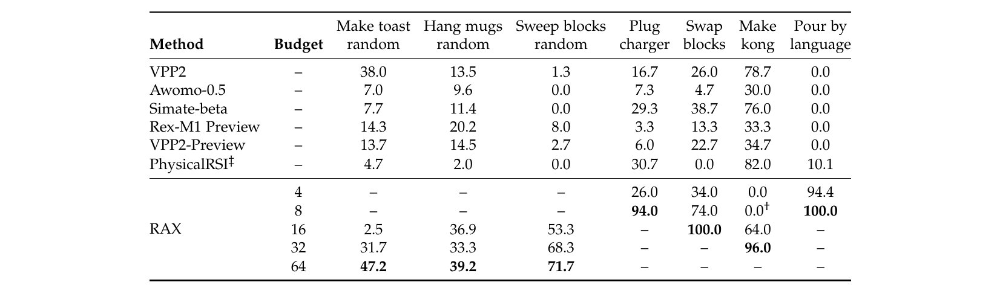
5.2.2 BEHAVIOR-1Kp.17
Setup. We evaluate RAX on six long-horizon household tasks from the 2025 BEHAVIOR Challenge (Li et al., 2023), where previous challenge entries have struggled to make progress. For each task, cooperating agents explore parallel environments using the Galaxea R1Pro for 128 exploration episodes, given the task description, RGB-D observations, and an image sequence of a successful completion (keyframes of official demonstrations, without actions or states). We evaluate the agent-in-the-loop program: a fresh copy of the agent starts from the frozen workspace and attempts each of the ten public test instances of the challenge—the same instances used to report public results.
设置。我们在 2025 BEHAVIOR 挑战赛的六个长时序家务任务上评估 RAX（Li et al., 2023）——此前的参赛方案在这些任务上一直难以取得进展。对每个任务，多个协作智能体使用 Galaxea R1Pro 在并行环境中探索 128 个回合；它们获得任务描述、RGB-D 观测，以及一段成功完成的图像序列（官方演示的关键帧，不含动作或状态）。我们评测的是“含智能体在环”的程序：一个全新的智能体副本从冻结的工作区出发，尝试该挑战的全部十个公开测试实例——即用于报告公开结果的同一批实例。
Review reports. Throughout exploration, after each run of the agent’s code, a separate review model provides detailed feedback to the agent regarding the outcome. This report outlines any missed goal conditions and their likely causes, suggests the most valuable code changes, and includes the run’s partial score alongside key camera frames (Section C.4).
评审报告。在整个探索过程中，智能体的代码每运行一次之后，都会有一个独立的“评审模型”就其运行结果向智能体提供详细反馈。该报告列出未达成的目标条件及其可能原因，建议最有价值的代码修改，并附上本次运行的部分得分与关键相机帧（C.4 节）。
Scoring and baselines. Episodes are evaluated using the challenge’s Q-score, which measures the fraction of satisfied goal conditions and awards full credit for a complete success. We compare our approach against the five highest-ranked entries from the challenge (Table 3). Figure 6 illustrates the program RAX generates for the boxing books task.
计分与基线。回合使用挑战赛的 Q-score 评测，它衡量已满足目标条件的比例，并对完整成功给予满分。我们与挑战赛排名最高的五个参赛方案比较（表 3）。图 6 展示了 RAX 为 boxing books 任务生成的程序。
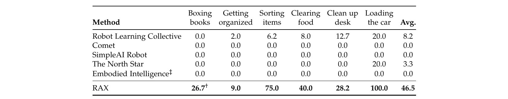
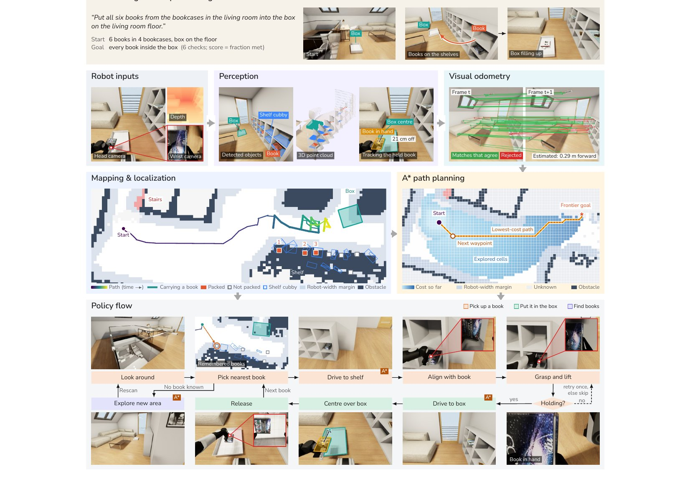
5.2.3 HumanoidArenap.18
Setup. We evaluate RAX on all seven tasks of HumanoidArena (Wang et al., 2026c) that have official test episodes: three human–object interaction tasks (Football, DoubleDesk, and P&PBox) and four human–scene interaction tasks (OpenDoor, SitSofa, Boxing, and VisNavi), on a Unitree G1 with Dex3 hands (Section C.5). The agent commands whole-body reference poses, which the SONIC motion tracker (Luo et al., 2026) turns into balanced whole-body motion. The agent perceives the scene through the egocentric RGB-D camera and receives the task description together with three teleoperated demonstrations, which are available only to the exploring agent.
设置。我们在 HumanoidArena 中全部七个具有官方测试回合的任务上评估 RAX（Wang et al., 2026c）：三个“人—物体交互”任务（Football、DoubleDesk、P&PBox）与四个“人—场景交互”任务（OpenDoor、SitSofa、Boxing、VisNavi），平台为配备 Dex3 手的 Unitree G1（C.5 节）。智能体下达全身参考位姿，由 SONIC 运动跟踪器（Luo et al., 2026）将其转换为平衡的全身运动。智能体通过以自我为中心的 RGB-D 相机感知场景，并获得任务描述以及三条遥操作演示——这些演示只提供给探索阶段的智能体。
It explores with a budget of up to 128 episodes on DoubleDesk and P&PBox and up to 32 episodes on each of the other tasks, on scenes drawn from the training distribution and never on a test episode, and the resulting fully automated program is evaluated alone, without the agent, on unseen scenes, the 60 official test episodes of each task.
它在 DoubleDesk 与 P&PBox 上的探索预算至多 128 个回合，其余任务各至多 32 个回合；探索场景取自训练分布，绝不在测试回合上进行。随后，所得的全自动程序在没有智能体参与的情况下，在未见场景上单独评测——即每个任务 60 个官方测试回合。
Baselines. We compare with the baselines of the benchmark, ACT (Zhao et al., 2023), Diffusion Policy (Chi et al., 2025), a flow-matching policy (Boston Dynamics and Toyota Research Institute, 2025), and the VLA π0.5 (Intelligence et al., 2025), each trained on 100 teleoperated demonstrations per task, and with WB-WAM (Qin et al., 2026), a world action model pretrained on 1,880 hours of video and motion data and fine-tuned on the same 100 demonstrations per task, all with the same tracker (Table 4).
基线。我们与该基准自带的基线比较：ACT（Zhao et al., 2023）、Diffusion Policy（Chi et al., 2025）、一个流匹配策略（Boston Dynamics and Toyota Research Institute, 2025），以及 VLA π0.5（Intelligence et al., 2025）——它们每个任务都用 100 条遥操作演示训练；另外还与 WB-WAM 比较（Qin et al., 2026），后者是在 1,880 小时视频与运动数据上预训练、并用同样每任务 100 条演示微调的世界动作模型。所有方法都使用同一个跟踪器（表 4）。
Results. RAX reaches an average success rate of 89.8% (Table 4), 7.9 points above WB-WAM and 29.8 points above the strongest baseline of the benchmark, from three demonstrations instead of one hundred. It succeeds in every test episode of OpenDoor and Boxing, and on Football and VisNavi it improves on WB-WAM by 28.3 and 16.6 points.
结果。RAX 取得 89.8% 的平均成功率（表 4），高出 WB-WAM 7.9 分、高出该基准最强基线 29.8 分——而它只用了 3 条演示，而非 100 条。它在 OpenDoor 与 Boxing 的每个测试回合中都成功；在 Football 与 VisNavi 上，它分别比 WB-WAM 高出 28.3 与 16.6 分。
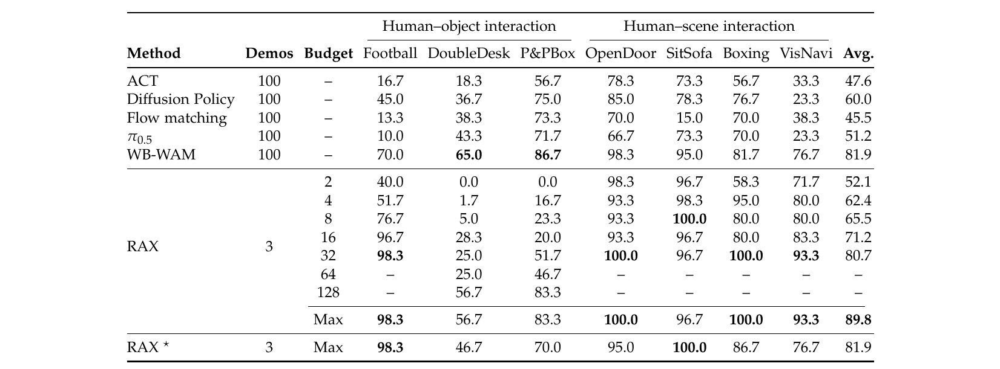
Performance grows with the exploration budget: averaged over the seven tasks, the success rate rises from 52.1% with 2 exploration episodes to 80.7% with 32. Tasks governed by whole-body posture and locomotion, such as OpenDoor and SitSofa, are solved within a few episodes, Football and VisNavi rise from 40.0% and 71.7% to 98.3% and 93.3%, and the two whole-body loco-manipulation tasks keep improving with further exploration, P&PBox from 0.0% to 83.3% and DoubleDesk from 0.0% to 56.7% at 128 episodes. We also test RAX with the three demonstrations without their actions (RAX ⋆ , Section 5.3.4): without any action data, it still matches the 81.9% average of WB-WAM, which is fine-tuned on 100 action demonstrations per task.
性能随探索预算增长：在七个任务上取平均，成功率从 2 个探索回合时的 52.1% 上升到 32 个回合时的 80.7%。由全身姿态与运动控制主导的任务（如 OpenDoor 与 SitSofa）在几个回合内即被解决；Football 与 VisNavi 分别从 40.0%、71.7% 提升到 98.3%、93.3%；两个全身“移动+操作”任务则随探索继续提升——P&PBox 从 0.0% 升到 83.3%，DoubleDesk 在 128 回合时从 0.0% 升到 56.7%。我们还测试了只给三条演示、但不给其动作的 RAX（RAX ⋆，5.3.4 节）：在完全没有动作数据的情况下，它仍然追平了 WB-WAM 81.9% 的平均值——而后者是用每任务 100 条带动作演示微调过的。
5.2.4 DexJoCop.19
Setup. DexJoCo (Wang et al., 2026a) evaluates task-oriented dexterous manipulation with Franka arms that carry 16-degree-of-freedom Allegro hands, on six single-arm and five bimanual tasks. The agent commands the end-effector pose of each arm and the joint positions of each hand. It perceives the scene through RGB-D observations and receives the task description and three completion images of expert episodes as a goal reference, but no action demonstrations or expert videos.
设置。DexJoCo（Wang et al., 2026a）用搭载 16 自由度 Allegro 手的 Franka 机械臂评测面向任务的灵巧操作，包含六个单臂任务与五个双臂任务。智能体命令每条手臂的末端位姿以及每只手的各关节位置。它通过 RGB-D 观测感知场景，并获得任务描述与专家回合的三张完成图像作为目标参考——但不提供任何动作演示或专家视频。
For each task, a single agent explores a single environment from an empty workspace, with the exploration episodes drawn from the training distribution of the rand-obj setting and never on an evaluation layout. Sessions differ only in the exploration budget, from 2 to 32 exploration episodes, and the resulting fully automated program is evaluated alone, without the agent, on unseen scenes, the 150 official evaluation episodes of each task (Section C.6).
对每个任务，单个智能体从空工作区出发探索单一环境，探索回合取自 rand-obj 设置的训练分布，绝不在评测布局上进行。各会话之间只有探索预算不同（2 到 32 个探索回合）。所得的全自动程序在无智能体参与的情况下单独评测——即每个任务 150 个官方评测回合（C.6 节）。
Baselines. We compare with the baselines of the benchmark, Diffusion Policy with transformer and CNN backbones (Chi et al., 2025), ACT (Zhao et al., 2023), and the VLAs π0.5 (Intelligence et al., 2025) and GR00T N1.5 (Bjorck et al., 2025), each trained on 100 teleoperated demonstrations per task, and with subsequent results on the same benchmark: GR00T N1.6, the world action models Fast-WAM (Yuan et al., 2026), PointWAM (Park et al., 2026), which pretrains on 1.15 million human videos, and ME-Dex (Zhang et al., 2026), and the diffusion transformer DECO (Li et al., 2026) (Table 5).
基线。我们与该基准自带基线比较：以 Transformer 与 CNN 为骨干的 Diffusion Policy（Chi et al., 2025）、ACT（Zhao et al., 2023），以及 VLA π0.5（Intelligence et al., 2025）与 GR00T N1.5（Bjorck et al., 2025），它们均在每任务 100 条遥操作演示上训练；此外还与同一基准上的后续结果比较：GR00T N1.6、世界动作模型 Fast-WAM（Yuan et al., 2026）、在 115 万人类视频上预训练的 PointWAM（Park et al., 2026）与 ME-Dex（Zhang et al., 2026），以及扩散 Transformer 模型 DECO（Li et al., 2026）（表 5）。
Results. Performance grows rapidly with exploration (Table 5): averaged over the eleven tasks, the success rate rises from 31.9% with 2 exploration episodes to 86.9% with 8 and 96.7% with 32, and with 32 exploration episodes RAX exceeds the best published result on every task. Hammer, Mouse, and iPad are solved from two exploration episodes, most other tasks within four to eight, and the bimanual Assembly within sixteen.
结果。性能随探索快速提升（表 5）：在十一个任务上取平均，成功率从 2 个探索回合时的 31.9% 上升到 8 个回合时的 86.9%、32 个回合时的 96.7%；而在 32 个探索回合时，RAX 在每一个任务上都超过了已发表的最好结果。Hammer、Mouse 与 iPad 仅用两个探索回合即被解决，其余多任务在四到八个回合内解决，双臂 Assembly 在十六个回合内解决。
Taking the best session of each task, RAX succeeds in every evaluation episode of eight of the eleven tasks and reaches an average success rate of 99.5%, 45.4 points above the strongest baseline of the benchmark and 34.2 points above the best published average, without a single action demonstration. The margins are largest on the bimanual tasks that existing methods rarely complete: RAX solves Hanoi (Section D.2) and iPad in every episode, where the best published results are 42.0 and 52.0, and reaches 96.0 on Assembly, where the best published result is 28.0.
取每个任务的最佳会话，RAX 在十一个任务中的八个上于每个评测回合都成功，平均成功率达到 99.5%——高出该基准最强基线 45.4 分、高出已发表最佳平均值 34.2 分，且没有使用任何动作演示。差距在现有方法鲜能完成的双臂任务上最大：RAX 在每一个回合中都解决了 Hanoi（D.2 节）与 iPad——而已发表的最好结果分别是 42.0 与 52.0；在 Assembly 上它达到 96.0，而已发表最好结果为 28.0。
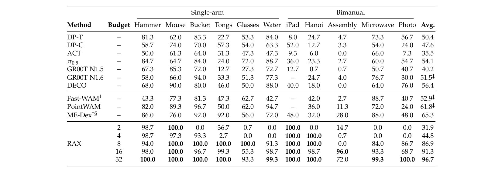
5.2.5 LIBERO 与 LIBERO-Prop.20
Setup. LIBERO (Liu et al., 2023) evaluates a single Franka Panda arm with a parallel-jaw gripper on four ten-task suites, Spatial, Object, Goal, and Long (Section C.7), and LIBERO-Pro (Zhou et al., 2025) perturbs the layouts of the same tasks. The agent commands delta end-effector poses and the gripper. It perceives the scene through the agent-view and wrist RGB-D cameras and receives the task description and three images of the completed task, but no action demonstrations.
设置。LIBERO（Liu et al., 2023）用带平行夹爪的单条 Franka Panda 机械臂，在四个各含十个任务的套件上评测——Spatial、Object、Goal 与 Long（C.7 节）；LIBERO-Pro（Zhou et al., 2025）则对这些相同任务的布局施加扰动。智能体命令末端位姿增量与夹爪动作。它通过智能体视角相机与腕部 RGB-D 相机感知场景，并获得任务描述与任务完成后的三张图像，但不给任何动作演示。
It explores with a budget of up to 20 episodes on fresh layouts drawn from the official placement distribution and may continue with up to 5 episodes of adaptation on layouts drawn from the position-perturbed distribution of LIBERO-Pro, in which objects exchange their initial regions (Section D.4), never on an evaluation state. The resulting fully automated program is evaluated alone, without the agent, on unseen scenes, the 50 official initial states of each task and the 50 position-perturbed states of LIBERO-Pro.
它在取自官方摆放分布的新布局上以至多 20 个回合进行探索，并可在取自 LIBERO-Pro“位置扰动”分布的布局上继续做至多 5 个回合的适应（在该分布中物体会互换其初始区域，D.4 节）——但绝不在评测状态上进行。所得的全自动程序在无智能体参与的情况下单独评测：各任务 50 个官方初始状态，以及 LIBERO-Pro 的 50 个位置扰动状态。
Baselines. We compare with the VLAs OpenVLA (Kim et al., 2024), OpenVLA-OFT (Kim et al., 2025), π0 (Black et al., 2024), π0.5 (Intelligence et al., 2025), and X-VLA (Zheng et al., 2026), and with the world action models Cosmos Policy (Kim et al., 2026), Fast-WAM (Yuan et al., 2026), PatchWAM (Wang et al., 2026b), and VPP2 (Guo et al., 2026), all of which fine-tune on the benchmark’s demonstrations (Table 6).
基线。我们与这些 VLA 比较：OpenVLA（Kim et al., 2024）、OpenVLA-OFT（Kim et al., 2025）、π0（Black et al., 2024）、π0.5（Intelligence et al., 2025）与 X-VLA（Zheng et al., 2026）；并与这些世界动作模型比较：Cosmos Policy（Kim et al., 2026）、Fast-WAM（Yuan et al., 2026）、PatchWAM（Wang et al., 2026b）与 VPP2（Guo et al., 2026）。它们都在该基准的演示数据上做了微调（表 6）。
Results. Without a single action demonstration, RAX achieves one of the highest average success rates among these models on the original suites, 98.5% (Table 6). Under position perturbation the learned policies collapse: OpenVLA, π0 , and X-VLA succeed in at most 2% of the episodes of any suite, π0.5 in at most 38%, and the world action models PatchWAM and VPP2 in 8.8% and 42.3% on average.
结果。在没有任何动作演示的情况下，RAX 在原始套件上取得了这些模型中最高的平均成功率之一——98.5%（表 6）。而在位置扰动下，学习型策略全面崩溃：OpenVLA、π0 与 X-VLA 在任何套件上的成功率都不超过 2%，π0.5 不超过 38%，世界动作模型 PatchWAM 与 VPP2 的平均值分别为 8.8% 与 42.3%。
Without a single episode on perturbed layouts, the programs of RAX, which locate every object anew in each episode, already retain 76.0% on average and exceed every learned policy on every suite, 33.7 points above VPP2; they also exceed by 12.8 points the coding agent ASPIRE (Lu et al., 2026), which develops a program for each task and perturbation with up to 75 rollouts and evolutionary search on instances from the evaluation distribution (Section E). With at most 5 episodes of adaptation on perturbed layouts, RAX raises its average by a further 8.4 points to 84.4%, from 71.4% on Long to 100.0% on Object, and exceeds ASPIRE on every suite. Exploration thus yields programs that transfer to new layouts, and a few further episodes of exploration repair those that do not.
即便在扰动布局上一个回合都没跑过，RAX 的程序（它们在每个回合中都会重新定位每一个物体）平均仍保有 76.0%，在每个套件上都超过所有学习型策略，比 VPP2 高 33.7 分；它们也比编程智能体 ASPIRE（Lu et al., 2026）高出 12.8 分——后者针对每个任务与每种扰动分别开发程序，在来自评测分布的实例上最多用 75 次 rollout 加进化搜索（E 节）。而在扰动布局上做至多 5 个回合的适应后，RAX 的平均值再提升 8.4 分，达到 84.4%（从 Long 的 71.4% 到 Object 的 100.0%），并在每个套件上超过 ASPIRE。可见，探索得到的程序能够迁移到新布局；而那些迁移不佳的，只需再补几个探索回合即可修复。
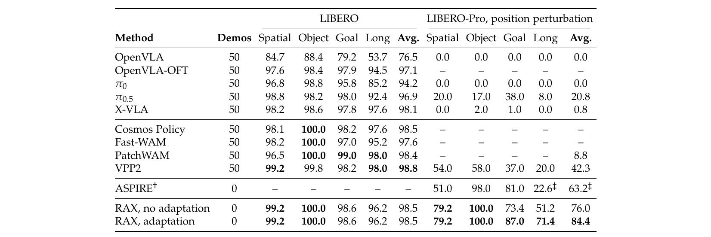
5.3 消融实验Ablationsp.22
In this section we ablate the key design choices of our system, including parallel exploration with multi-agent and multiple environments, the effect of depth sensing over RGB-only observations, and the evolve of inference tokens and inference time over exploration.
本节对系统的若干关键设计选择做消融分析，包括多智能体/多环境的并行探索、深度感知相对于纯 RGB 观测的作用，以及推理 token 与推理时间随探索的演化。
5.3.1 并行化p.22
Exploration can also be parallelized (Section 3.5): the same budget of exploration episodes is distributed across K parallel environments, explored by a team of cooperating agents that share a common workspace. In the same way that multiple agents scale test-time compute in parallel rather than purely serially, trading some efficiency for wall-clock time, parallel environments let a team of agents consume an exploration budget concurrently.
探索还可以并行化（3.5 节）：把同一份探索回合预算分配到 K 个并行环境中，由一支共享同一工作区的协作智能体团队分头探索。正如多个智能体可以把测试时计算并行化而非纯串行——以一定的效率换取墙上时间——并行环境也让一支智能体团队能够同时消耗探索预算。
We parallelize exploration on make toast. All sessions use RGB-D observations, an image sequence of one successful completion, and instructions that summarize the official task code, including its numeric success thresholds; the fully automated program is evaluated on the same 32 unseen scenes. Parallelization reduces the time needed to consume the exploration budget for both agents (Table 7). With four agents in four environments, Claude Code reaches a score of 92.2 in 4.9 hours, against 63.3 in 13.7 hours for a single agent with a larger budget; with two agents in two environments, Codex matches its single-agent score in 9.2 hours instead of 14.2.
我们在 make toast 上做了并行探索。所有会话都使用 RGB-D 观测、一段成功完成的图像序列，以及概括官方任务代码（含其数值成功阈值）的指令；全自动程序在同样的 32 个未见场景上评测。并行化缩短了两个智能体消耗完探索预算所需的时间（表 7）。当 4 个智能体分布在 4 个环境中时，Claude Code 在 4.9 小时内达到 92.2 分，而单智能体即便预算更大，也要用 13.7 小时才达到 63.3 分；当 2 个智能体分布在 2 个环境中时，Codex 用 9.2 小时便追平了它单智能体 14.2 小时的成绩。
5.3.2 深度感知 vs. 纯 RGB 感知p.23
To measure the contribution of depth, we compare RGB-D and RGB-only sessions on the three domain-randomized RoboDojo tasks. In the RGB-only profile, depth and the geometric primitives built on it are removed, and the agent must perceive through motion, relating image coordinates to robot motion by moving the robot by known amounts. Each pair shares the task, the agent, and the exploration budget N, and its fully automated program is evaluated on the same unseen scenes as in Section 5.2.1. With depth, the agent outperforms the RGB-only agent in every pair, by 17.3 points on average (Table 8).
为了衡量深度的贡献，我们在三个域随机化的 RoboDojo 任务上比较 RGB-D 会话与纯 RGB 会话。在纯 RGB 配置中，深度以及建立在其上的几何原语都被移除，智能体必须“通过运动来感知”——即让机器人移动已知距离，从而把图像坐标与机器人运动关联起来。每一对会话共享相同的任务、相同的智能体与相同的探索预算 N，其全自动程序在与 5.2.1 节相同的未见场景上评测。有深度时，智能体在每一对比较中都优于纯 RGB 智能体，平均高出 17.3 分（表 8）。
Case study: perception with and without depth. To understand where this gap comes from, we inspect the fully automated programs submitted by the RGB-D and RGB-only agents on make toast random with a budget of 32 episodes. Both agents use the vision-language model in the same role, to point at semantic image locations such as the toaster slots, the top crust of a bread slice, and the lever. They differ in how they turn these image points into motion.
案例研究：有深度与无深度的感知。为理解这一差距从何而来，我们检查了 RGB-D 智能体与纯 RGB 智能体在 make toast random、预算 32 个回合下提交的全自动程序。两个智能体让视觉语言模型扮演同样的角色——指出语义图像位置，例如烤面包机插槽、面包片顶部表皮、以及压杆。它们的差别在于如何把这些图像点转化为运动。
With depth. The RGB-D agent lifts every image point into a metric 3D point and builds the task’s geometry from these points. It first refines each slot opening by fitting a line to its visible contour, then measures both rim endpoints of each slot in 3D, from which it derives the slot centers and their common heading. On the bread, it measures two points along the top crust and one on the near side, and recovers the slice’s full 3D orientation from the plane through these points. After the grasp, it measures the slice again in the wrist camera to obtain its pose in the hand, and repeats this measurement above the slot to correct any slip before release. The agent also uses metric geometry to verify its perception: a measurement is rejected when a rim point does not lie within a narrow band at the toaster’s roof height, when the two rim endpoints are not 9 to 20 cm apart, or when the two slots are not 2.6 to 7.5 cm apart, and a press of the lever counts only when the lever is measured to have travelled 2.5 to 13 cm downward.
有深度时。RGB-D 智能体把每个图像点提升为公制三维点，并由这些点构建任务的几何。它先对每个插槽的可见轮廓拟合直线以细化槽口，然后在三维中测量每个槽的两个边缘端点，由此导出槽心及其共同朝向。对面包片，它沿顶部表皮测两个点、在近侧再测一个点，并通过这三点确定的平面恢复面包片的完整三维朝向。抓取之后，它会在腕部相机中再次测量面包片，以获得其在手中的位姿；在释放之前，它还会在插槽上方重复这一测量，以修正任何滑移。智能体还用公制几何来校验自己的感知：当某边缘点不落在烤面包机顶部高度附近的窄带内、当两个边缘端点间距不在 9–20 cm 之间、或当两个插槽间距不在 2.6–7.5 cm 之间时，该测量即被拒收；而压杆动作只有在测得压杆下行 2.5–13 cm 时才被计入成功。
Without depth. The RGB-only agent does not give up on 3D reasoning; it reconstructs a coarse camera model of its own. It maps overhead-camera pixels to table coordinates through a linear calibration at an assumed height, about 1.8 mm per pixel across the image and 1.4 mm per pixel along it, and then refines every target by visual servoing in the wrist camera: it moves the gripper until the target is centered, with hand-tuned gains of 0.4 to 0.8 mm per pixel, and rotates it until the slot or the bread is aligned in the image.
无深度时。纯 RGB 智能体并没有放弃三维推理，而是自行重建了一个粗糙的相机模型。它在一个假设的高度上通过线性标定把俯视相机的像素映射到桌面坐标——横向约 1.8 mm/像素、纵向约 1.4 mm/像素——然后靠腕部相机的视觉伺服来细化每一个目标：它移动夹爪直到目标居中（手工调定的增益为 0.4–0.8 mm/像素），并旋转夹爪直到插槽或面包在图像中对齐。
The quantities that depth would provide are replaced by constants, including the grasp and release heights, the 3.8 cm spacing between the slots, and the height to which the lever is pressed, and success is judged by asking the vision-language model whether a slice is held or seated. These approximations hold only where the scene matches the agent’s assumptions. In evaluation, 36 of its 45 episodes ended in the lever stage without success, the step at which a fixed press height replaces a measured one, against 8 successes for the RGB-D agent.
原本可由深度提供的量被换成了常数，包括抓取与释放高度、插槽之间 3.8 cm 的间距、以及压杆下压的高度；成功与否则靠询问视觉语言模型“面包片是否被夹住/是否落位”来判定。这些近似只在场景符合智能体假设时才成立。在评测中，它的 45 个回合里有 36 个在“压杆”阶段无果而终——恰恰是固定下压高度取代实测高度的那一步；相比之下 RGB-D 智能体取得了 8 次成功。
5.3.3 推理时间与 tokenp.24
Here we demonstrate the decrease of inference wall time and output tokens with exploration as more and more decisions are being automated with programs.
这里我们展示：随着越来越多的决策被程序自动化，推理的墙上时间与输出 token 如何随探索而下降。
Simulation. As the agent compiles its experience into autonomous code programs, the computational overhead of action generation decreases substantially. We evaluate this efficiency gain across two benchmark tasks: loading the car in BEHAVIOR-1K (128 exploration episodes across two parallel environments) and make toast random in RoboDojo (64 exploration episodes).
仿真。随着智能体把经验编译为自主代码程序，动作生成的计算开销大幅下降。我们在两个基准任务上评估这一效率增益：BEHAVIOR-1K 的 loading the car（在两个并行环境中进行 128 个探索回合）与 RoboDojo 的 make toast random（64 个探索回合）。
We define episode inference time as the cumulative wall-clock latency dedicated to action generation—excluding simulator and hardware step times—regardless of whether actions stem from direct LLM deliberation, code program execution, or a hybrid mode. Figure 7 tracks inference latency and output token consumption across all successful exploration episodes.
我们把“回合推理时间”定义为专门用于动作生成的累计墙上时延（不含仿真器与硬件的步进时间），无论动作来自 LLM 直接推理、代码程序执行还是混合模式。图 7 追踪了所有成功的探索回合中的推理时延与输出 token 消耗。
On loading the car, the initial successful episode required 123 minutes of inference time and 254k output tokens. By the final exploration episode, inference overhead dropped to 4 minutes and 4k tokens, while environment execution time remained over 1 hour per episode. Similarly, on make toast random, initial task completion required 17 minutes of inference latency. Once execution transitioned to the compiled program, inference latency for the final agent-monitored successes fell to 6 seconds per episode—matching the 3–7 seconds observed during standalone program rehearsals (which accounted for 7 of the 15 total successes).
在 loading the car 上，最初的成功回合需要 123 分钟推理时间与 254k 输出 token；到最后一个探索回合，推理开销已降至 4 分钟与 4k token，而环境执行时间仍保持在每回合 1 小时以上。类似地，在 make toast random 上，最初完成任务需要 17 分钟推理时延；一旦执行转向编译后的程序，最后那些“智能体在环监控”的成功回合，推理时延降到每回合 6 秒——与程序单独排练时观测到的 3–7 秒相当（这类排练占 15 次总成功中的 7 次）。
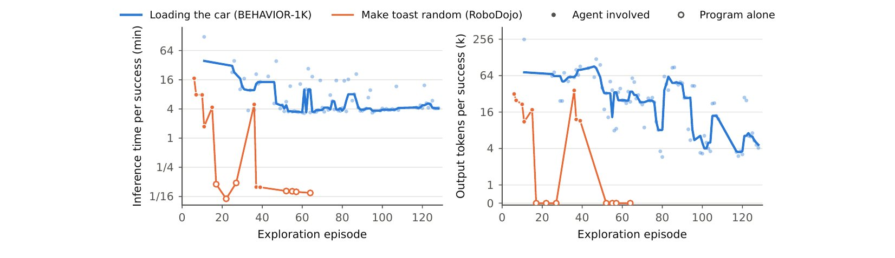
Real robots. Similar efficiency trends hold on real robots using the Franka manipulator (Table 9). We evaluate air fryer manipulation (Section G.2) and Bandu tower assembly (Section G.5), comparing an initial trial in which the agent generates each action via active deliberation against a subsequent execution of the compiled autonomous program. In both paradigms, the system actuates the robot through identical tool interfaces, with robot time defined as the duration spent executing arm, gripper, and visual perception calls.
真实机器人。在 Franka 机械臂上，真实机器人也呈现类似的效率趋势（表 9）。我们评估了空气炸锅操作（G.2 节）与 Bandu 塔组装（G.5 节），把“智能体通过主动推理逐条生成动作”的初次试验，与随后执行编译后的自主程序作对比。两种范式下，系统都通过完全相同的工具接口驱动机器人；“机器人时间”定义为执行机械臂、夹爪与视觉感知调用所花的时间。
For the air fryer task, initial task completion (including online exploration) required 72 minutes of inference latency and 262k output tokens, against 3 minutes of robot time. Upon compilation, the initial autonomous run required only 18 seconds of inference latency (attributable entirely to local programmatic execution), with four subsequent unattended trials consistently yielding latencies between 18 and 23 seconds.
对空气炸锅任务，初次完成任务（含在线探索）需要 72 分钟推理时延与 262k 输出 token，而机器人时间只有 3 分钟。编译之后，首次自主运行只需 18 秒推理时延（完全归因于本地程序化执行），随后四次无人值守试验的时延稳定在 18–23 秒之间。
Similarly, on the Bandu tower, step-by-step LLM deliberation to assemble six blocks required 17 minutes of inference latency; once compiled, autonomous assembly of seven blocks completed with 10 seconds of program overhead alongside 11 minutes of continuous robot execution. During these autonomous runs, control proceeded without human intervention or online LLM action synthesis, while background monitoring generated at most 2.2k tokens per run in parallel without imposing latency on robot execution.
类似地，在 Bandu 塔上，用 LLM 逐步推理组装六块积木需要 17 分钟推理时延；编译之后，自主组装七块积木只带来 10 秒的程序开销，同时伴随 11 分钟的连续机器人执行。在这些自主运行过程中，控制流程无需人工干预，也不需要在线 LLM 动作合成；后台监控每次运行最多并行产生 2.2k token，且不会给机器人执行带来额外时延。
5.3.4 不含动作的演示p.25
On HumanoidArena, the exploring agent reads three teleoperated demonstrations of each task, and its programs may reuse motion segments cut from them, such as a gait cycle (Section D.3). We remove the actions from these demonstrations and keep everything else unchanged except the budget (RAX ⋆ ), which is 256 exploration episodes on DoubleDesk, 128 on P&PBox, and 64 on each of the other five tasks, and evaluate the program on the same 60 official test episodes.
在 HumanoidArena 上，探索中的智能体会读取每个任务的三条遥操作演示，其程序可以复用从演示中裁出的运动片段，例如一个步态周期（D.3 节）。我们把这些演示中的动作去掉，除预算之外其余一切不变（记作 RAX ⋆）：DoubleDesk 上 256 个探索回合，P&PBox 上 128 个，其余五个任务各 64 个；然后在同样的 60 个官方测试回合上评测程序。
Without any action data, RAX ⋆ reaches 81.9% on average and matches WB-WAM, which is fine-tuned on 100 action demonstrations per task (Table 10). On Football, OpenDoor, and SitSofa, it stays within 5 points of RAX with action demonstrations. The more dynamic and contact-rich whole-body tasks, which require sustained locomotion or whole-body contact, VisNavi, Boxing, P&PBox, and DoubleDesk, remain 10.0 to 16.6 points lower despite larger budgets. When the agent has to discover a suitable gait and whole-body control on its own, whole-body loco-manipulation requires more exploration.
在完全没有动作数据的情况下，RAX ⋆ 平均达到 81.9%，追平了用每任务 100 条带动作演示微调的 WB-WAM（表 10）。在 Football、OpenDoor 与 SitSofa 上，它与带动作演示的 RAX 相差不超过 5 分。而那些更动态、接触更丰富的全身任务——需要持续运动或全身接触的 VisNavi、Boxing、P&PBox 与 DoubleDesk——尽管预算更大，仍低 10.0–16.6 分。当智能体必须自行发现合适的步态与全身控制方式时，全身“移动+操作”需要更多的探索。
5.4 探索规模化下涌现的有趣智能体行为Intriguing Emerging Agentic Behaviors with Scaling Explorationp.25
In this section, we analyze agentic behaviors that emerge as exploration scales, in simulation and on real robots; each task is detailed in Sections D and G.
本节分析在仿真与真实机器人上、随探索规模扩大而涌现出的智能体行为；各任务的细节见 D 节与 G 节。
5.4.1 主动感知p.25
Active perception (Xiong et al., 2025) emerges naturally as the agent does not treat perception as a single look at the scene (Figure 8). It moves its cameras and its hand to obtain the measurements that a step needs, measures again before it acts, and checks the outcome of each action with a new measurement.
主动感知（Xiong et al., 2025）自然而然地涌现出来——智能体并不把感知当作“对场景看一眼”（图 8）。它会移动相机与手，以获取某一步所需的测量；在行动之前再次测量；并用一次新的测量去核对每个动作的结果。
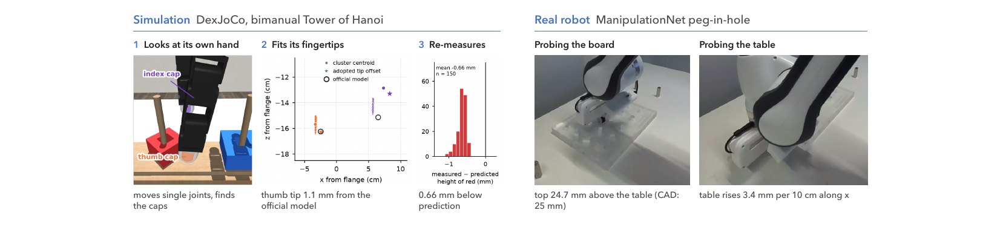
Simulation. On the bimanual Tower of Hanoi of DexJoCo (Section D.2), the agent received no model of its Allegro hands. It spent its first episode on its own hand: it moved single joints, lifted the wrist cameras’ depth into points to see what each joint moves, segmented the white fingertip caps, and fitted the fingertip offsets on which every grasp of its program is built; its thumb offset lies within 1.1 mm of the official model it never saw.
仿真。在 DexJoCo 的双臂汉诺塔任务上（D.2 节），智能体没有获得任何 Allegro 手的模型。它把第一个回合花在了自己的手上：逐个转动单个关节，把腕部相机的深度提升为点云以观察每个关节带动什么，分割出白色指尖帽，并拟合出指尖偏移——它程序的每一次抓取都建立在这些偏移之上；而它从未见过的官方模型中，拇指偏移与它拟合的结果相差不到 1.1 mm。
On the LIBERO-Long task of putting two cans into a basket (Section D.1), the program perceives the scene anew in every round; before each grasp, it hovers 7 cm above the can, refits the lid from the wrist camera, and rejects a top that is not can-shaped. Because the agent-view camera cannot see the floor of the basket, the program maps the basket from the wrist camera while it holds the first can, and maps it again after the first release.
在 LIBERO-Long 的“把两个罐子放进篮子”任务上（D.1 节），程序在每一轮都会重新感知场景；每次抓取之前，它先悬停在罐子上方 7 cm 处，用腕部相机重新拟合罐盖，并拒收任何形状不像罐顶的顶面。由于智能体视角的相机看不到篮底，程序会在夹住第一个罐子时用腕部相机对篮子建图，并在第一次释放之后再建一次。
On the bimanual Tower of Hanoi of DexJoCo (Section D.2), the program verifies every lift by measuring the held disk from three cameras and pinches again when the disk rose less than half of the lift; after placing the red disk, it measures the disk’s top again and finds it on average 0.66 mm below the height it predicted. On the humanoid that carries a hammer over a bar (Section D.3), the program perceives anew at every stage and before every step at the bar, and it confirms a grasp by measuring the height of the handle again. Without depth, the RGB-only agent recovers metric relations by moving the robot by known amounts and servoing on the wrist camera (Section 5.3.2).
在 DexJoCo 的双臂汉诺塔上（D.2 节），程序通过三个相机测量被夹住的圆盘来核验每一次抬升；若圆盘上升幅度不足抬升量的一半，就重新夹取。放下红色圆盘后，它会再测一次圆盘顶面，发现平均比它预测的高度低 0.66 mm。在“把锤子举过横杆”的人形机器人任务上（D.3 节），程序在每个阶段、以及横杆前的每一步之前都重新感知，并通过再次测量手柄高度来确认抓取。在没有深度的情况下，纯 RGB 智能体则靠让机器人移动已知距离、并在腕部相机上做伺服来恢复度量关系（5.3.2 节）。
Real robot. On the ManipulationNet peg-in-hole challenge (Chen et al., 2026b) (Section G.4), the board is transparent acrylic, and the task text warned that the wrist camera’s depth is inaccurate at close range. The agent turned this warning into a measurement procedure that uses the arm itself as a probe: it closes the gripper, descends in 1.5 mm steps, and records the height at which the vertical force drops by 3 to 4 N. Touching the table at three points, it found that the table rises by about 3.4 mm per 10 cm along the robot’s x axis and that the top of the board lies 24.7 mm above the table, against 25 mm in the board’s CAD model, and it models the height of the board’s top as a plane that rises along x.
真实机器人。在 ManipulationNet 的销孔插入挑战上（Chen et al., 2026b；G.4 节），板子是透明亚克力，而任务说明中明确警告：腕部相机在近距离下深度不准。智能体把这条警告转化成了一套“以机械臂本身为探针”的测量流程：它并拢夹爪，以 1.5 mm 为步长下降，记录竖直力下降 3–4 N 时的高度。通过在三个点上触碰桌面，它发现桌面沿机器人 x 轴每 10 cm 约升高 3.4 mm，且板顶位于桌面上方 24.7 mm——而板子的 CAD 模型给出的是 25 mm；随后它把板顶高度建模为一个沿 x 方向上升的平面。
Before each insertion into the row with 0.1 mm clearance, it touches the board next to the hole with the held peg, and these reference heights agree within 0.5 mm. Probing also calibrates the camera: from a hole whose centre it had located by touch, the agent found that the wrist camera’s absolute positions were offset by 6.4 and −0.8 mm, corrected every hole by this offset, and the next peg dropped into its hole on the first probe.
在插入那一排 0.1 mm 间隙的孔之前，它会用夹着的销钉去触碰孔旁的板面，这些参考高度彼此一致到 0.5 mm 以内。探测还顺便标定了相机：从一个用触觉定位了中心的孔出发，智能体发现腕部相机的绝对位置存在 6.4 mm 与 −0.8 mm 的偏移；它用该偏移校正了每一个孔之后，下一根销钉在第一次探测时就落入了孔中。
5.4.2 错误恢复与安全p.27
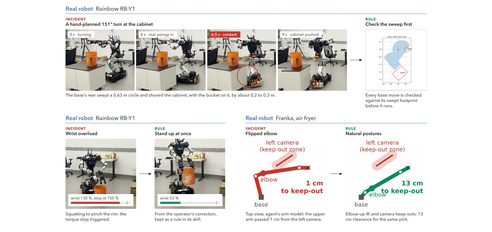
On real robots, the agent’s mistakes have physical consequences, and it turns each one into a rule that its later programs follow (Figure 9). On the RB-Y1, an in-place turn that the agent planned by hand swung the rear of the base into a cabinet; from then on, the agent checked every base move against the area the base sweeps. Lifting a bucket while squatting overloaded a wrist and stopped the robot; standing up before the lift, a correction from the operator, resolved it, and the agent kept it as a rule in its skill. On the Franka, an unusual arm posture drove the elbow into a camera; the agent then restricted itself to natural arm postures, kept the arm away from the cameras, and recalibrated the bumped camera itself (Section G.2.1). In simulation, the humanoid crosses a bar only from foot placements that its own falls showed to be safe (Section D.3).
在真实机器人上，智能体的错误会产生物理后果，而它会从每一次错误中提炼出一条规则，供后续程序遵循（图 9）。在 RB-Y1 上，一次由智能体手工规划的原地转身把底盘后部甩到了柜子上；从那以后，智能体每次移动底盘前都会按底盘扫过的区域做检查。蹲着提桶导致手腕过载、机器人停机；先站直再提（这来自操作员的纠正）解决了问题，智能体便把它作为一条规则写进了技能中。在 Franka 上，一个不寻常的手臂姿态让肘部撞上了相机；此后智能体只采用自然的手臂姿态、让手臂远离相机，并自行重新标定了被撞的相机（G.2.1 节）。在仿真中，人形机器人只会从“它自己摔过之后证明安全”的落脚点跨过横杆（D.3 节）。
5.4.3 人机交互p.27
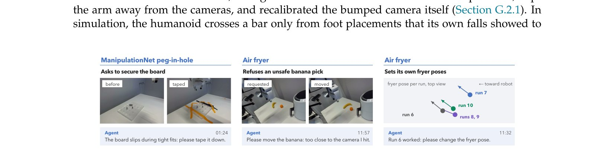
The agent reaches the operator through a request tool and uses it with purpose (Figure 10). On the ManipulationNet board, after the board shifted during its attempts at tight fits, it asked the operator to tape the board to the table. On the air fryer (Section G.2), it refused to pick a banana placed in front of the camera it had hit earlier, because its forearm would pass within about 1 cm of the camera, and asked for the banana to be moved. After unattended successes, it asked the operator to move and rotate the fryer, in effect designing its own tests of generalization: across runs 6 to 10, the fryer moved by up to 7 cm and its handle turned by up to 18°, and the program succeeded unattended in every new placement but one, where it needed help and which exposed two errors in its program that the agent then fixed.
智能体通过一个“请求”工具与操作员取得联系，并且是有目的地使用它（图 10）。在 ManipulationNet 板上，当它尝试紧配合时板子发生了位移，于是它请操作员用胶带把板子固定到桌上。在空气炸锅任务中（G.2 节），它拒绝去抓一根放在“此前被撞过的相机”前方的香蕉，因为它的前臂会从距相机约 1 cm 以内经过，于是请求把香蕉移开。在若干次无人值守成功之后，它请操作员移动并旋转炸锅——实际上是在自行设计泛化测试：在第 6 至第 10 次运行中，炸锅移动最多 7 cm、把手转动最多 18°，程序在每一个新摆放位置上都能无人值守成功，只有一次需要帮助——而那次恰好暴露了它程序中的两处错误，随后被智能体自己修复。
5.5 持续学习Continual Learningp.28
In this section, we demonstrate how RAX achieves continual learning with robot programs: by reusing skills learned in earlier exploration sessions, and by rapidly adapting its programs when the environment or the task changes.
本节展示 RAX 如何借助机器人程序实现持续学习：一方面复用先前探索会话中学到的技能，另一方面在环境或任务变化时快速调整其程序。
5.5.1 技能复用p.28
On the RB-Y1 mobile manipulator, RAX acquires skills through isolated exploration sessions and reuses them to solve long-horizon compositional tasks (Figure 11). In initial sessions, the agent independently learned to park and tuck an office chair, stack nested cups, transport a bucket by its rim onto a cabinet, and pick and place a box. Each skill was committed to the repository only after achieving successful end-to-end execution, stored as a versioned program bound to explicit precondition checks.
在 RB-Y1 移动操作平台上，RAX 通过彼此隔离的探索会话获得技能，再用它们解决长时序组合任务（图 11）。在最初的若干会话中，智能体分别学会了：把办公椅推到一边并收进桌下、叠放可嵌套的杯子、抓着桶沿把一个桶搬到柜子上、以及拾放一个箱子。每项技能只有在端到端成功执行之后才会被提交到仓库，并以带版本的程序形式保存，绑定了明确的前置条件检查。
The multi-stage tidy-up task (Figure 5) evaluates the composition of these skills under a single high-level goal: park the chair, stack the cups, place the cups and a banana inside the bucket, transport the bucket onto the cabinet, tuck the chair back under the desk, and finally pick the box onto the other empty cabinet.
多阶段整理任务（图 5）在一个高层目标下检验这些技能的组合能力：把椅子挪开、叠好杯子、把杯子和香蕉放进桶里、把桶搬到柜子上、把椅子收回桌下，最后把箱子放到另一个空柜子上。
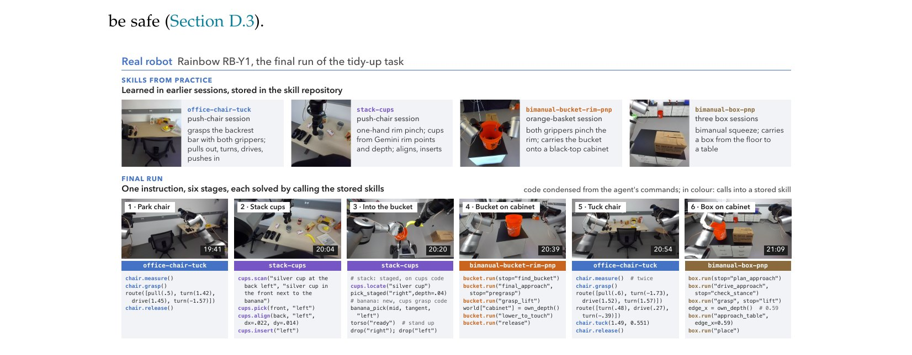
run.py），而智能体直接编写的临时控制逻辑以黑色显示。
Figure 11 | Continual learning on the real-world RB-Y1 mobile manipulator. Top: Modular skills acquired during prior exploration sessions and stored in the skill repository, complete with descriptions from their respective skill files. Middle: The final execution of a complex tidy-up task—a single high-level instruction carried out across six sequential stages, annotated with completion timestamps and invoked skills. Bottom: The agent’s generated code for each stage (condensed from execution logs with passed arguments). Code invoking pre-stored skills is color-coded by skill (chair, cups, bucket, and box correspond to each skill’s run.py), while ad-hoc control logic written directly by the agent is shown in black.
Skills are called, not relearned. In the final execution of the tidy-up task, every stage is resolved by composing stored skills from the repository (Figure 11). The agent executes the chair skill sequentially: it estimates the chair geometry, plans a collision-free motion path, grasps the backrest, navigates along the path, and releases the target. It invokes the cup-stacking skill using semantic visual grounding from the current scene, applying fine-grained closed-loop offsets prior to insertion. For the bucket and box skills, the agent parameterizes execution using real-time perception data, such as the estimated cabinet boundary derived from depth sensing. To bridge gaps between stored skills, the agent dynamically synthesizes ad-hoc code—such as extending the grasp planner to handle a banana, commanding torso elevation prior to transit, and re-estimating desk pose before final chair insertion.
技能是被“调用”，而不是被重新学习。在整理任务的最终执行中，每个阶段都是通过组合仓库中已存储的技能来解决的（图 11）。智能体顺序执行椅子技能：估计椅子几何、规划无碰撞运动路径、抓取靠背、沿路径导航、释放目标。它借助对当前场景的语义视觉 grounding 调用叠杯技能，并在插入之前施加细粒度的闭环偏移。对桶与箱子的技能，智能体用实时感知数据（例如由深度感知估计出的柜子边界）来参数化执行。为弥合已存技能之间的空隙，智能体会动态合成临时代码——例如扩展抓取规划器以处理香蕉、在转运前命令躯干抬升、以及在最后把椅子推入之前重新估计桌子位姿。
Skills are refined in use. Across three iterations of the tidy-up task, the agent iteratively updated program versions rather than rewriting entire control loops. The bucket and box skills required minor programmatic adjustments (~25 out of more than 1200 lines) to integrate dynamic cabinet-edge measurements from onboard depth perception. Skills encountering greater environmental domain shift underwent larger revisions: following two failed grasp attempts, the agent updated the chair skill to grasp 4 cm deeper, while extending the cup-stacking skill to support picking additional object classes.
技能在使用中被细化。在整理任务的三次迭代中，智能体是迭代地更新程序版本，而不是重写整个控制循环。桶与箱子的技能只需少量程序调整（1200 多行中约 25 行），以接入来自本体深度感知的动态柜沿测量。遭遇更大环境域偏移的技能则经历了更大的修改：在两次抓取失败之后，智能体把椅子技能改为更深地抓取 4 cm，同时扩展叠杯技能以支持抓取更多类别的物体。
Repository expansion. Intermediary control code synthesized by the agent to bridge task stages is modularized and saved as new skills. For instance, a synthesized hand-reach primitive was automatically abstracted, committed to the repository, and subsequently reused across both the chair-manipulation and cup-stacking routines.
仓库扩展。智能体为衔接任务各阶段而合成的中间控制代码，会被模块化并保存为新技能。例如，一个被合成出来的“手部到达”原语被自动抽象、提交到仓库，随后在椅子操作与叠杯两套例程中都被复用。
5.5.2 程序的快速适应p.30
When task conditions vary post-deployment, RAX preserves valid program subroutines and selectively updates only the modules invalidated by environmental shifts (Figure 12). On the Franka manipulator, two end-to-end autonomous programs were adapted to novel task variants within the same session.
当部署之后任务条件发生变化时，RAX 会保留仍然有效的程序子例程，只选择性地更新那些因环境变化而失效的模块（图 12）。在 Franka 机械臂上，两个端到端的自主程序在同一会话内就适应了新的任务变体。
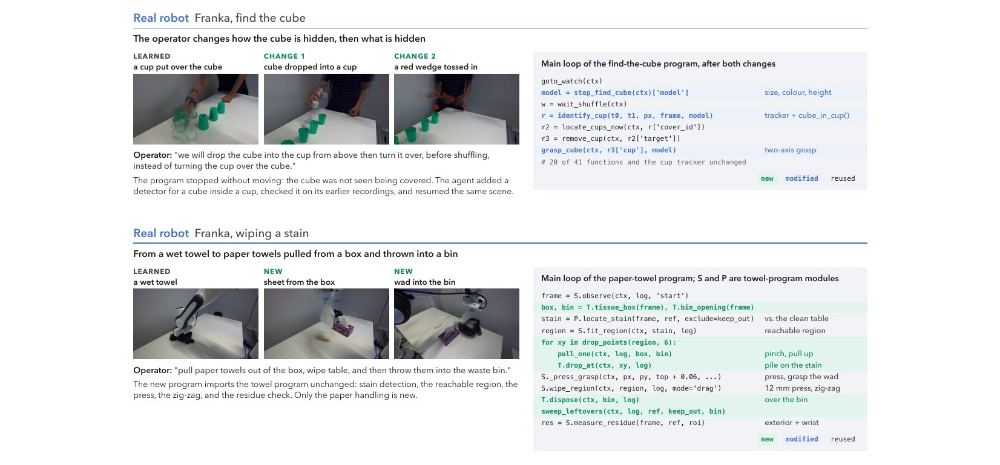
Find the cube. In a hidden-object task, the physical occlusion sequence was modified: rather than directly inverting a cup over the target cube, the cube was placed inside an upright cup prior to inversion. The original program detected no covering cup and safely halted execution via exception handling without initiating ungrounded motion. The agent extended its perception pipeline with a detector for cubes contained within upright cups, validated the new logic against current and historical sensor logs, and resumed execution to complete the task (Figure 22).
找方块。在一个藏物任务中，物理遮挡的顺序被改变了：操作员没有直接把杯子倒扣在目标方块上，而是先把方块放进一个正立的杯子里，再翻转杯子。原程序没有检测到“遮盖杯”，于是通过异常处理安全地中止执行，没有做出任何缺乏依据的动作。智能体在感知流水线中增加了一个“正立杯内方块”检测器，用当前与历史传感器日志验证了新逻辑，然后恢复执行并完成任务（图 22）。
Crucially, the cup-tracking, execution-monitoring, and removal routines were reused without modification. When substituting the cube with a red wedge, the agent generalized its geometric object representation from a fixed cube primitive to an object parameterized by estimated dimensions, color, and height, adjusting grasp synthesis accordingly while preserving 20 of the original 41 program functions (including the tracking pipeline; Figure 23).
关键在于，杯子跟踪、执行监控与移杯这几套例程被原样复用。当方块被替换成红色楔块时，智能体把它的几何物体表示从“固定立方体原语”泛化为“由估计出的尺寸、颜色与高度参数化的物体”，并相应调整抓取合成，同时保留了原程序 41 个函数中的 20 个（包括跟踪流水线；图 23）。
Wiping with paper towels. Following the acquisition of a reliable surface-wiping skill using a wet cloth, the task was extended to require pulling disposable paper towels from a dispenser box, executing the wiping motion, and discarding used towels into a receptacle. The agent synthesized a composite program that imported the original wiping module as a dependency.
用纸巾擦拭。在掌握了用湿布可靠擦拭表面的技能之后，任务被扩展为：从抽取式纸盒中抽出一次性纸巾、执行擦拭动作，并把用过的纸巾丢进垃圾桶。智能体合成了一个复合程序，把原来的擦拭模块作为依赖导入。
The new program reused existing subroutines for stain segmentation against the table background, reachable workspace estimation, pressing by position control (12 mm below the measured surface contact, along a serpentine trajectory), and post-wipe residue verification. Only paper-handling subroutines were added: locating the dispenser box and disposal bin, extracting individual sheets onto the stain, discarding the crumpled towel, and clearing loose paper from the workspace. The stain was removed in both wet runs, although leftover sheets still had to be cleared with supervised scripts (Section G.3, Figure 29).
新程序复用了既有的子例程：相对桌面背景的污渍分割、可达工作空间估计、基于位置控制的按压（沿蛇形轨迹、压到实测表面接触以下 12 mm）、以及擦拭后的残留核验。只新增了与纸巾处理有关的子例程：定位纸盒与垃圾桶、把单张纸巾抽取到污渍上、丢弃揉成团的纸巾、以及清理工作空间中散落的纸张。两次“湿擦”运行都清除了污渍，只是散落的纸巾仍须用有人监督的脚本清理（G.3 节，图 29）。
6 讨论Discussionp.30
Progress in robot learning has largely been driven by collecting more demonstrations and training larger models. Our results show that a capable agent, when allowed to explore, continues to improve with the experience it accumulates, without teleoperation and without updates to its parameters. Because this form of learning relies on general-purpose agents whose capabilities are advancing rapidly in other domains, every improvement in those agents translates directly into improved robot learning.
机器人学习的进展，在很大程度上由“采集更多演示、训练更大模型”所驱动。我们的结果表明：一个足够有能力的智能体，只要被允许探索，就能凭借自身积累的经验持续变强——既不需要遥操作，也不需要更新它的参数。由于这种学习形式依赖于那些在其它领域能力飞速提升的通用智能体，这些智能体的每一次进步，都会直接转化为机器人学习的进步。
The knowledge acquired by RAX agents takes the form of perception and control programs, skills, and notes. In this form, knowledge executes at the rate of the robot, can be inspected and verified, composes into longer behaviors, and transfers across tasks, and we expect code to play the same role for learning from experience that network parameters play for learning from data. Since the instructions, skills, and memory structures of RAX are themselves code and text, a natural next step is to let agents improve the architecture itself from experience, and to share verified skills across fleets of robots, so that a skill learned by one robot becomes available to all.
RAX 智能体所获得的知识，以感知与控制程序、技能以及笔记的形式存在。以这种形式，知识能够以机器人的节奏执行、可以被检视与验证、可以组合成更长的行为、也可以跨任务迁移。我们预期，代码在“从经验中学习”中所扮演的角色，将如同网络参数在“从数据中学习”中所扮演的角色。由于 RAX 的指令、技能与记忆结构本身就是代码与文本，一个自然的下一步是：让智能体从经验中改进架构本身，并在机器人机群之间共享已验证的技能，使一台机器人学到的技能能够为所有机器人所用。
7 致谢Acknowledgementsp.31
We thank Qianqian Wang for the valuable discussions and help in mobile manipulation robot experiments.
感谢 Qianqian Wang 在移动操作机器人实验中给予的宝贵讨论与帮助。
参考文献Referencesp.32
参考文献保留英文原貌（不作翻译），以便按原文检索。共 63 条。
- Ahn, M., Brohan, A., Brown, N., Chebotar, Y., Cortes, O., David, B., Finn, C., Fu, C., Gopalakrishnan, K., Hausman, K., et al. Do as i can, not as i say: Grounding language in robotic affordances. arXiv preprint arXiv:2204.01691, 2022.
- Anderson, J. R., Bothell, D., Byrne, M. D., Douglass, S., Lebiere, C., and Qin, Y. An integrated theory of the mind. Psychological review, 111 4:1036–60, 2004. URL https://api.semanticscholar.org/ CorpusID:186640.
- Bi, H., Tan, H., Xie, S., Wang, Z., Huang, S., Liu, H., Zhao, R., Feng, Y., Xiang, C., Rong, Y., et al. Motus: A unified latent action world model. In Proceedings of the IEEE/CVF Conference on Computer Vision and Pattern Recognition, pp. 35101–35113, 2026.
- Bjorck, J., Castañeda, F., Cherniadev, N., Da, X., Ding, R., Fan, L., Fang, Y., Fox, D., Hu, F., Huang, S., et al. Gr00t n1: An open foundation model for generalist humanoid robots. arXiv preprint arXiv:2503.14734, 2025.
- Black, K., Brown, N., Driess, D., Esmail, A., Equi, M., Finn, C., Fusai, N., Groom, L., Hausman, K., Ichter, B., et al. π0 : A vision-language-action flow model for general robot control. arXiv preprint arXiv:2410.24164, 2024.
- Boston Dynamics and Toyota Research Institute. Large behavior models and Atlas find new footing. Blog post, 2025. URL https://bostondynamics.com/blog/large-behavior-models-atlas-findnew-footing/.
- Brohan, A., Brown, N., Carbajal, J., Chebotar, Y., Chen, X., Choromanski, K., Ding, T., Driess, D., Dubey, A., Finn, C., et al. Rt-2: Vision-language-action models transfer web knowledge to robotic control. arXiv preprint arXiv:2307.15818, 2023.
- Chen, T., Chen, Y., Li, Z., Tang, J., Su, K., Lu, H., Wan, W., Chen, B., Liu, S., Yan, H., et al. Robodojo: A unified sim-and-real benchmark for comprehensive evaluation of generalist robot manipulation policies. arXiv preprint arXiv:2607.04434, 2026a.
- Chen, Y., Kimble, K., Adelson, E. H., Asfour, T., Chanrungmaneekul, P., Chitta, S., Chitambar, Y., Chen, Z., Goldberg, K., Kragic, D., et al. Manipulationnet: An infrastructure for benchmarking real-world robot manipulation with physical skill challenges and embodied multimodal reasoning. arXiv preprint arXiv:2603.04363, 2026b.
- Chi, C., Xu, Z., Feng, S., Cousineau, E., Du, Y., Burchfiel, B., Tedrake, R., and Song, S. Diffusion policy: Visuomotor policy learning via action diffusion. The International Journal of Robotics Research, 44(10-11):1684–1704, 2025.
- Doshi, R., Walke, H., Mees, O., Dasari, S., and Levine, S. Scaling cross-embodied learning: One policy for manipulation, navigation, locomotion and aviation. arXiv preprint arXiv:2408.11812, 2024.
- Fu, L., Yu, J., El-Refai, K., Kou, E., Xue, H., Huang, H., Xiao, W., Wang, G., Niu, D., Li, F.-F., et al. Cap-x: A framework for benchmarking and improving coding agents for robot manipulation. arXiv preprint arXiv:2603.22435, 2026.
- Guo, D., Yang, D., Zhang, H., Song, J., Wang, P., Zhu, Q., Xu, R., Zhang, R., Ma, S., Bi, X., et al. Deepseek-r1: Incentivizing reasoning capability in llms via reinforcement learning. arXiv preprint arXiv:2501.12948, 2025.
- Guo, Y., Yan, H., Zhong, Z., Zhang, Z., Yang, Q., Lu, Q., Chen, X., Wang, Y.-J., Deng, S., Yang, C., et al. Video prediction policy 2: Predict better, act better. arXiv preprint arXiv:2610.10270, 2026.
- Hu, J., Martin-Martin, R., Stone, P., Duan, R., Jiang, Z., and Shi, G. Simex: Simulation-integrated robotics autoresearch. arXiv preprint arXiv:2609.38982, 2026.
- Huang, W., Xia, F., Xiao, T., Chan, H., Liang, J., Florence, P., Zeng, A., Tompson, J., Mordatch, I., Chebotar, Y., et al. Inner monologue: Embodied reasoning through planning with language models. arXiv preprint arXiv:2207.05608, 2022.
- Huang, W., Wang, C., Zhang, R., Li, Y., Wu, J., and Fei-Fei, L. Voxposer: Composable 3d value maps for robotic manipulation with language models. arXiv preprint arXiv:2307.05973, 2023.
- Intelligence, P., Black, K., Brown, N., Darpinian, J., Dhabalia, K., Driess, D., Esmail, A., Equi, M., Finn, C., Fusai, N., et al. π0.5 : a vision-language-action model with open-world generalization. arXiv preprint arXiv:2504.16054, 2025.
- Kang, Y., Wang, Z., Fan, Z., and Liu, B. Encore: Few-shot agentic discovery of manipulation strategies. arXiv preprint arXiv:2609.37359, 2026.
- Kaplan, J., McCandlish, S., Henighan, T., Brown, T. B., Chess, B., Child, R., Gray, S., Radford, A., Wu, J., and Amodei, D. Scaling laws for neural language models. arXiv preprint arXiv:2001.08361, 2020.
- Kim, M. J., Pertsch, K., Karamcheti, S., Xiao, T., Balakrishna, A., Nair, S., Rafailov, R., Foster, E., Lam, G., Sanketi, P., et al. Openvla: An open-source vision-language-action model. arXiv preprint arXiv:2406.09246, 2024.
- Kim, M. J., Finn, C., and Liang, P. Fine-tuning vision-language-action models: Optimizing speed and success. arXiv preprint arXiv:2502.19645, 2025.
- Kim, M. J., Gao, Y., Lin, T.-Y., Lin, Y.-C., Ge, Y., Lam, G., Liang, P., Song, S., Liu, M.-Y., Finn, C., et al. Cosmos policy: Fine-tuning video models for visuomotor control and planning. arXiv preprint arXiv:2601.16163, 2026.
- Laird, J. E., Newell, A., and Rosenbloom, P. S. Soar: An architecture for general intelligence. Artificial Intelligence, 33(1):1–64, 1987. ISSN 0004-3702. doi: https://doi.org/10.1016/0004-3702(87)90050-6. URL https://www.sciencedirect.com/science/article/pii/0004370287900506.
- Li, C., Zhang, R., Wong, J., Gokmen, C., Srivastava, S., Martín-Martín, R., Wang, C., Levine, G., Lingelbach, M., Sun, J., et al. Behavior-1k: A benchmark for embodied ai with 1,000 everyday activities and realistic simulation. In Conference on Robot Learning, pp. 80–93. PMLR, 2023.
- Li, X., Sun, Y., Zhang, L., Huang, B., Peng, Y., Meng, Y., Jiang, H., Xie, S., Yao, G., Knoll, A., et al. Deco: Decoupled multimodal diffusion transformer for bimanual dexterous manipulation with a plugin tactile adapter. arXiv preprint arXiv:2602.05513, 2026.
- Liang, J., Huang, W., Xia, F., Xu, P., Hausman, K., Ichter, B., Florence, P., and Zeng, A. Code as policies: Language model programs for embodied control. In 2023 IEEE International conference on robotics and automation (ICRA), pp. 9493–9500. IEEE, 2023.
- Liu, B., Zhu, Y., Gao, C., Feng, Y., Liu, Q., Zhu, Y., and Stone, P. Libero: Benchmarking knowledge transfer for lifelong robot learning. Advances in Neural Information Processing Systems, 36:44776–44791, 2023.
- Liu, Y., Dong, Z., Ye, B., Yuan, T., Jiang, T., Yang, A., Cao, S., Liu, H., Sun, Y., Guo, Z., et al. G0. 5: One autoregressive stream for robot reasoning and action. arXiv preprint arXiv:2608.11739, 2026.
- Lozano-Perez, T. Robot programming. Proceedings of the IEEE, 71(7):821–841, 1983. doi: 10.1109/ PROC.1983.12681.
- Lu, R., Wu, Y., Kou, E., Fu, L., Xiao, W., Mandlekar, A., Xu, Y., Shi, G., Goldberg, K., Chen, A., et al. Aspire: Agentic/skills discovery for robotics. arXiv preprint arXiv:2607.00272, 2026.
- Luo, Z., Yuan, Y., Wang, T., Li, C., Castañeda, F., Chen, S., Cao, Z.-A., Li, J., Minor, D., Ben, Q., et al. Sonic: Supersizing motion tracking for natural humanoid whole-body control. Science Robotics, 11 (117):eaed4592, 2026.
- OpenAI. Learning to reason with LLMs. https://openai.com/index/learning-to-reason-withllms/, 2024.
- O’Neill, A., Rehman, A., Maddukuri, A., Gupta, A., Padalkar, A., Lee, A., Pooley, A., Gupta, A., Mandlekar, A., Jain, A., et al. Open x-embodiment: Robotic learning datasets and rt-x models. In 2024 IEEE International Conference on Robotics and Automation (ICRA), pp. 6892–6903. IEEE, 2024.
- Park, C., Kim, B., Park, S., Kwon, H., Shukla, Y., Sim, S., Shin, J., and Cho, M. Pointwam: 3d world action modeling for dexterous robotic manipulation. arXiv preprint arXiv:2610.02840, 2026.
- Qin, C., Zhu, S., Luo, S., Huang, S., Zhao, H., and Zhao, H. Wb-wam: Heterogeneous body-hand pre-training for humanoid loco-manipulation. arXiv preprint arXiv:2609.34199, 2026.
- Shinn, N., Cassano, F., Gopinath, A., Narasimhan, K., and Yao, S. Reflexion: Language agents with verbal reinforcement learning. Advances in neural information processing systems, 36:8634–8652, 2023.
- Silver, D. and Sutton, R. S. Welcome to the era of experience. URL https://api.semanticscholar. org/CorpusID:277919528.
- Singh, I., Blukis, V., Mousavian, A., Goyal, A., Xu, D., Tremblay, J., Fox, D., Thomason, J., and Garg, A. Progprompt: Generating situated robot task plans using large language models. arXiv preprint arXiv:2209.11302, 2022.
- Sumers, T. R., Yao, S., Narasimhan, K., and Griffiths, T. L. Cognitive architectures for language agents. arXiv preprint arXiv:2309.02427, 2023.
- Sundaralingam, B., Hari, S. K. S., Fishman, A., Garrett, C., Van Wyk, K., Blukis, V., Millane, A., Oleynikova, H., Handa, A., Ramos, F., et al. curobo: Parallelized collision-free minimum-jerk robot motion generation. arXiv preprint arXiv:2310.17274, 2023.
- Sutton, R. S. The bitter lesson. http://www.incompleteideas.net/IncIdeas/BitterLesson.html, 2019.
- Sutton, R. S. The quest for a common model of the intelligent decision maker. arXiv preprint arXiv:2202.13252, 2022.
- Sutton, R. S., Bowling, M., and Pilarski, P. M. The alberta plan for ai research. arXiv preprint arXiv:2208.11173, 2022.
- Team, O. M., Ghosh, D., Walke, H., Pertsch, K., Black, K., Mees, O., Dasari, S., Hejna, J., Kreiman, T., Xu, C., et al. Octo: An open-source generalist robot policy. arXiv preprint arXiv:2405.12213, 2024.
- Tsui, B. Y., Fang, A. Y., and Hwu, T. J. Demonstration-free robotic control via llm agents, 2026. URL https://arxiv.org/abs/2601.20334.
- Wang, G., Xie, Y., Jiang, Y., Mandlekar, A., Xiao, C., Zhu, Y., Fan, L., and Anandkumar, A. Voyager: An open-ended embodied agent with large language models. arXiv preprint arXiv:2305.16291, 2023.
- Wang, H., Zhao, W., Wang, X., Huang, S., Lin, H., Zheng, B., Xu, R., Wang, G., Mu, Y., Wang, H., et al. Dexjoco: A benchmark and toolkit for task-oriented dexterous manipulation on mujoco. arXiv preprint arXiv:2605.16257, 2026a.
- Wang, T., Xie, Z., Jia, H., Xu, J., Zhang, T., and Yu, K. An action is worth one patch: Unified world-action modeling with patchwam. arXiv preprint arXiv:2609.25961, 2026b.
- Wang, T., Xie, Z., Yang, B., Wang, Y., Yuan, Z., Fang, Y., Feng, Y., Wang, Y., Chen, X., Chen, H., et al. Humanoidarena: Benchmarking egocentric hierarchical whole-body learning. arXiv preprint arXiv:2606.17833, 2026c.
- Wang, Y., Huang, S., Li, M., Zhang, C., Liang, J., Jin, W., Chen, Y., Chi, X., Zhou, D., Yu, Q., et al. Openwam: An open, modular exploration towards systematic world-action model pretraining. arXiv preprint arXiv:2609.07398, 2026d.
- Wang, Y.-J., Jiang, H., Deng, S., Xue, H., Ye, W., Duan, R., Haghtalab, N., Sastry, S. S., Abbeel, P., and Qi, H. Reconstruct, practice, go real: Guided self-improvement for embodied agents. arXiv preprint arXiv:2610.02204, 2026e.
- Xiao, W., Xie, J., Zhang, T., Lin, H., Fu, L., Xue, H., Lu, J., Yang, Y., Dai, C., Wang, Z., et al. Enpire: Agentic robot policy self-improvement in the real world. arXiv preprint arXiv:2606.19980, 2026.
- Xiong, H., Xu, X., Wu, J., Hou, Y., Bohg, J., and Song, S. Vision in action: Learning active perception from human demonstrations. arXiv preprint arXiv:2506.15666, 2025.
- Xu, B., Shang, Y., and Ferrara, E. Don’t drop the baton: Long-horizon robot manipulation via agentic subtask exploration and transition-aware memory. arXiv preprint arXiv:2608.16889, 2026.
- Yang, J., Jimenez, C., Wettig, A., Lieret, K., Yao, S., Narasimhan, K., and Press, O. Swe-agent: Agent-computer interfaces enable automated software engineering. Advances in Neural Information Processing Systems, 37:50528–50652, 2024.
- You, H., Shen, Z., Liu, Y., Zheng, Z., Zha, L., Yamazaki, K., Zhang, M., Huang, S., Sun, J., Chen, Q., et al. Embodiedswe: Coding agents for long horizon dexterous robotics. arXiv preprint arXiv:2609.27308, 2026.
- Yuan, T., Dong, Z., Liu, Y., and Zhao, H. Fast-wam: Do world action models need test-time future imagination? arXiv preprint arXiv:2603.16666, 2026.
- Zhang, X., Liu, X., Tang, Q., Wang, J., Wang, R., Cheng, Z., Lin, B., Wen, H., Li, M., Zhan, K., et al. Me-dex 1.0: Bringing heterogeneous tactile sensing into world action modeling. arXiv preprint arXiv:2609.21449, 2026.
- Zhao, A., Huang, D., Xu, Q., Lin, M., Liu, Y.-J., and Huang, G. Expel: Llm agents are experiential learners. In Proceedings of the AAAI Conference on Artificial Intelligence, volume 38, pp. 19632–19642, 2024.
- Zhao, T. Z., Kumar, V., Levine, S., and Finn, C. Learning fine-grained bimanual manipulation with low-cost hardware. arXiv preprint arXiv:2304.13705, 2023.
- Zheng, J., Li, J., Wang, Z., Liu, D., Kang, X., Feng, Y., Zheng, Y., Zou, J., Chen, Y., Zeng, J., et al. X-vla: Soft-prompted transformer as scalable cross-embodiment vision-language-action model. In International Conference on Learning Representations, volume 2026, pp. 60580–60606, 2026.
- Zhou, X., Xu, Y., Tie, G., Chen, Y., Zhang, G., Chu, D., Zhou, P., and Sun, L. Libero-pro: Towards robust and fair evaluation of vision-language-action models beyond memorization. arXiv preprint arXiv:2510.03827, 2025.
附录Appendixp.36
A 接口契约Interface Contractsp.36
On the real robots the agent acts only through tools that wrap each vendor’s control SDK, and its own programs call the same tools. Every command is checked before the robot moves; workspace, joint limit, or IK violations are refused, and motion works only while the operator has armed the robot. Table 11 summarizes the tools; both robots also offer status and request_operator.
在真实机器人上，智能体只通过封装各厂商控制 SDK 的工具来行动，而它自己的程序调用的也是同一批工具。每条指令在机器人移动之前都会被校验：工作空间、关节限位或 IK 违反会被拒绝；并且只有在操作员对机器人上使能期间，运动才被允许。表 11 汇总了这些工具；两台机器人还都提供 status 与 request_operator。
| 类别 Category | Franka FR3 | Rainbow RB-Y1 |
|---|---|---|
| 感知 Perception | 来自两个外部相机与一个腕部相机的 RGB-D 图像；像素到三维点。 RGB-D images from two exterior and one wrist camera; pixel to 3D point | 头部 RGB-D 图像与注视控制；像素到三维点；一个视觉语言模型。 Head RGB-D images and gaze control; pixel to 3D point; a vision-language model |
| 运动 Motion | 末端执行器直线运动；带路径校验的关节运动。 Straight-line end-effector moves; joint moves with path checks | 关节、末端执行器与躯干目标；跨躯干与双臂的 IK；底盘驱动。 Joint, end-effector, and torso targets; IK over torso and both arms; base drive |
| 夹爪 Gripper | 以设定力闭合到指定宽度。 Grasp to a width with a set force | 限流闭合，或设定开口宽度。 Close with a current limit, or set an opening |
| 模型 Model | 无（智能体自己编写运动学）。 None (the agent writes its own kinematics) | 正运动学；针对碰撞、关节负载与质心的空跑试算。 Forward kinematics; dry runs for collision, joint load, and center of mass |
B 智能体指令与技能Agent Instructions and Skillsp.36
Every session starts from the same workspace template: one instruction file and a folder of skills, written once and shared by all platforms (auto_research_agent/ and agent_skills/ in our code). Robot-specific facts, such as tool names, cameras, and control rates, are filled in when the workspace is built, so the agent reads the same instructions on every robot.
每次会话都从同一个工作区模板开始：一个指令文件加一个技能文件夹，写一次即可被所有平台共享（代码中对应 auto_research_agent/ 与 agent_skills/）。机器人相关的事实（工具名、相机、控制频率等）在工作区构建时填入，因此智能体在每台机器人上读到的都是同一套指令。
Instructions. The instruction file fixes the order of work rather than how to solve any task. The agent first reads the task text and its own notes from earlier sessions, then (1) solves the task by controlling the robot directly through tools until it confirms success, (2) turns what it did into a program whose steps check their preconditions, verify their results, and report states they were not built for, (3) runs that program on every further exploration episode, stepping in where it falls short and fixing the code, and (4) keeps its notes, code, and a hand-off note current, since only those carry over to later sessions. In benchmark sessions it then freezes the program, rehearses it once end to end without help, and submits it.
指令。指令文件规定的是“工作的顺序”，而不是“如何解决某个任务”。智能体先读任务文本与它自己此前会话的笔记，然后：(1) 通过工具直接控制机器人来解题，直到确认成功；(2) 把自己做过的事转化为一个程序，程序中每一步都要检查前置条件、验证结果，并在遇到“并非为其设计的状况”时报出状态；(3) 在之后每个探索回合中运行该程序，在它力所不及时介入并修复代码；(4) 保持笔记、代码与一份交接说明是最新的——因为只有这些东西会带到后续会话。在基准会话中，它随后会冻结该程序，在无人帮助的情况下端到端排练一次，然后提交。
The file also states the budget rules: new layouts in every episode, so scene geometry is measured again rather than assumed, and a blocker is reported rather than bypassed.
该文件还规定了预算规则：每个回合都必须是新的布局，因此场景几何要被重新测量而不是被假设；遇到阻塞要如实上报，而不是绕过。
Skills. Skills are short documents that the agent opens when it reaches the step they cover. They are grouped by axis, task strategy, coordination, perception, and robot control, and a session receives only the layers that match its robot and observation mode. The task and coordination skills are robot-agnostic (Table 12); the perception and control layers give each robot’s interface under the same names, so a task skill can point to, for example, the robot’s interface or its free-space motion without knowing which robot it runs on.
技能。技能是一些简短文档，智能体在走到它们所覆盖的那一步时才会打开。技能按主线分组：任务策略、协同、感知与机器人控制；一次会话只会拿到与其机器人及观测模式相匹配的那些层。任务类与协同类技能是与机器人无关的（表 12）；感知层与控制层则以相同的命名给出每台机器人的接口，因此一个任务技能可以指向“该机器人的接口”或“其自由空间运动”，而无需知道自己在哪台机器人上运行。
| 技能 Skill | 它对智能体的要求 What it asks of the agent |
|---|---|
| 手动控制机器人 Manual robot control | 先观察，再用小幅动作探索；每一动作都依据当前观测选择；在交接之前确认任务的每一个条件。 Look first, explore with small moves, choose each action from the current observation, and confirm every condition of the task before handing off. |
| 上下文内动作学习 In-context action learning | 当提供任务完成图像时，从中推断目标与有用策略，并把它适配到当前布局，而不是照抄动作。 When images of a completed task are supplied, infer the goal and useful strategy from them and adapt it to the current layout, without copying actions. |
| 经验记忆 Experience memory | 立即记录哪些做法有效，以及其可观测的适用条件；在类似情形下检索它，并随证据积累把它提炼成经验。 Record what worked right away, with the observable conditions under which it worked; retrieve it for similar situations and distill it as evidence grows. |
| 自主控制 Autonomous control | 从一次已确认的手动成功出发，把它变成由观测驱动的代码——可被监督、可被恢复——并在多种布局上测试。 Start from a confirmed manual success, turn it into observation-driven code that can be supervised and resumed, and test it across layouts. |
| 迁移交接 Transfer hand-off | 在探索结束之前，写下每个子任务与每个物体是如何处理的，供后续会话在新布局上使用。 Before exploration ends, write how each subtask and each object is handled, for a later session on new layouts. |
| 多环境探索 Multi-environment exploration | 运行并行环境，分别跟踪各自的场景，并共享同一份回合预算。 Run parallel environments, track their scenes separately, and share one episode budget. |
| 多智能体探索 Multi-agent exploration | 决定是否要委派；给每个子智能体分配独立环境与互补目标，并汇总它们的发现与代码。 Decide whether to delegate; give each subagent its own environment and a complementary goal, and combine their findings and code. |
C 基准与任务Benchmarks and Tasksp.38
This section gives the protocol that all simulation experiments share and then the setting of each benchmark and its tasks. The real-robot tasks are described in Section G.
本节先给出所有仿真实验共用的协议，然后说明每个基准及其任务的设置。真实机器人任务在 G 节描述。
C.1 会话p.38
Agents. Every experiment is a session of one coding agent in its own command-line harness: Claude Code with Claude Opus 5.5 or, on four RoboDojo tasks and one BEHAVIOR-1K task, Codex with a GPT-6 model, at the xhigh reasoning effort unless stated otherwise. A session provides one or more simulated environments; with more than one, the agent may start subagents of the same model, which share its workspace and its budget. The weights of the model are never updated.
智能体。每个实验都是一个编程智能体在它自己的命令行测试框架（harness）中的一次会话：使用 Claude Code + Claude Opus 5.5；在四个 RoboDojo 任务与一个 BEHAVIOR-1K 任务上则使用 Codex + GPT-6 模型；除特别说明外均采用 xhigh 推理强度。一次会话提供一个或多个仿真环境；当环境多于一个时，智能体可以启动同一模型的子智能体，它们共享其工作区与预算。模型的权重从不更新。
Workspace. The agent starts from an empty workspace. Its folders for code, notes, and outputs are empty, and it holds only the instructions of the harness, the task description, the contract of the tool interface, and the skills of the platform, composed for the embodiment and the observation mode of the session (Section B); the agent keeps no memory from earlier sessions. It runs in a container without network access, with 16 GB of memory and four CPUs, and reaches the simulator only through its tools. Every program it registers runs in a fresh container with 8 GB of memory, four CPUs, and no network access.
工作区。智能体从空工作区开始：它的代码、笔记与输出文件夹都是空的，手中只有测试框架的指令、任务描述、工具接口契约，以及按本次会话的本体与观测模式组合出的平台技能（B 节）；智能体不保留任何来自先前会话的记忆。它运行在一个无网络访问的容器中，内存 16 GB、四个 CPU，并且只能通过工具访问仿真器。它注册的每个程序都在一个全新容器中运行，内存 8 GB、四个 CPU、无网络访问。
Task information. The task description is generated from the public definition of the task; its content differs between benchmarks and is given below. Images of the completed task are frames of successful official demonstrations, either the final frame of each or a sequence of keyframes along each. They contain no actions and no states, and only the exploring agent sees them, never its programs. During an interactive episode, the agent may ask the benchmark’s evaluator whether the task is complete.
任务信息。任务描述由任务的公开定义生成；其内容因基准而异，具体见下文。“任务完成图像”是官方成功演示中的帧：或取每条演示的最后一帧，或取沿每条演示的一系列关键帧。它们不含动作、不含状态，且只有探索阶段的智能体能看到，它的程序永远看不到。在交互式回合中，智能体可以向基准的评测器询问任务是否已完成。
Budget and scenes. The exploration budget counts exploration episodes. A single ledger charges every episode start and every rehearsal, across all environments and subagents, and the agent sees how many episodes remain. The budget is an upper bound, since submission ends exploration. Exploration scenes come in a fixed order, which the agent cannot choose, from the training distribution of the benchmark, and evaluation scenes from its official evaluation set, which exploration never uses.
预算与场景。探索预算以探索回合数计。一个统一的账本对所有环境与子智能体的每一次回合开始与每一次排练扣费，智能体能看到还剩多少回合。预算只是上界——因为提交即终止探索。探索场景按固定顺序给出（智能体不能挑选），取自该基准的训练分布；评测场景则取自其官方评测集，探索过程永不使用。
Limits. Each episode has the native step limit of the benchmark and a wall-clock limit, which during an interactive episode also bounds the agent’s own deliberation. The agent and its programs may call a vision-language model, Gemini 3.8 Flash, with a budget of $10 per session that exploration and evaluation share.
限制。每个回合都受该基准原生的步数上限约束，还有一个墙上时间上限——在交互式回合中，这个上限同时也约束智能体自身的推理时间。智能体及其程序可以调用视觉语言模型 Gemini 3.8 Flash，每次会话预算 10 美元，由探索与评测共享。
C.2 排练与评测p.38
Rehearsal. When the agent considers its program ready, it freezes a copy of its code with a registered entry point into a bundle and requests a rehearsal. The bundle is executed alone in a fresh isolated environment on a new exploration scene while the agent is paused, and the rehearsal consumes one exploration episode, like an episode in which the agent acts itself. Afterwards, the agent reads the outcome and the logs of the rehearsal and may revise the bundle and rehearse again. Only a bundle that has completed a rehearsal without error can be submitted, and submission ends exploration.
排练。当智能体认为自己的程序已经就绪，它会将带有注册入口点的代码副本冻结为一个 bundle，并请求一次排练。该 bundle 会在智能体暂停的情况下，在一个全新的隔离环境中、于一个新的探索场景上单独执行；排练消耗一个探索回合，和智能体亲自行动的回合一样。之后，智能体读取排练结果与日志，可以修改 bundle 并再次排练。只有完成过一次无错误排练的 bundle 才能被提交，而提交即终止探索。
Fully automated program. Evaluation executes the submitted bundle on each unseen scene in a fresh isolated environment, without the agent and without edits or retries. The results are never revealed to the agent. Because the bundle calls the same tools that the agent called during exploration, the program that is evaluated is the program that was rehearsed.
全自动程序。评测会在全新的隔离环境中，对每个未见场景执行提交的 bundle——没有智能体参与，不允许编辑或重试。结果从不向智能体透露。由于 bundle 调用的正是智能体在探索期间调用的那些工具，因此被评测的程序就是被排练过的那个程序。
Agent-in-the-loop program. At the end of exploration, the workspace is frozen, including the code, the notes, the handoff, and a compressed version of the conversation. For each evaluation scene, a fresh copy of the agent starts from this frozen workspace and attempts the scene, running its code, observing, and acting through the same tools as during exploration.
智能体在环程序。探索结束时，工作区被冻结，包括代码、笔记、交接说明以及对话的压缩版本。对每个评测场景，都会有一个全新的智能体副本从该冻结工作区出发尝试该场景：运行它的代码、观察，并像探索时一样通过同一批工具行动。
Scoring. Both forms are scored by the benchmark’s native evaluator, with partial credit wherever the benchmark defines it. An error, a timeout, or an early exit of the program counts as a failure, and scores are averaged over all scheduled evaluation episodes.
计分。两种形式都由基准的原生评测器计分，凡基准定义了部分得分的都按部分得分计。程序出错、超时或提前退出都算作失败；分数在所有预定的评测回合上取平均。
C.3 RoboDojop.39
Tasks and interface. We use seven tasks of RoboDojo-Sim (Chen et al., 2026a) with the dual-arm ARX X5 (Table 13). The agent commands absolute joint targets at 25 Hz, six arm joints and a gripper opening for each arm, with between 1 and 50 rows per call. It may also command bounded end-effector steps, plan collision-free motions of one arm against the robot and the table, lift pixels to 3D points, and preview a motion on the robot alone. It observes the scene through a high camera and a camera on each wrist at 640×480; the benchmark renders RGB, and the harness adds metric depth, the intrinsics, and the pose of every camera.
任务与接口。我们使用 RoboDojo-Sim 的七个任务（Chen et al., 2026a），平台为双臂 ARX X5（表 13）。智能体以 25 Hz 下达绝对关节目标——每条手臂六个关节加一个夹爪开度——每次调用 1–50 行。它还可以下达有界的末端执行器步进、针对机器人与桌面规划单臂的无碰撞运动、把像素提升为三维点、以及在纯机器人模型上预演一个动作。它通过一个高位相机与每个腕部的相机观察场景，分辨率 640×480；基准渲染 RGB，测试框架额外提供公制深度、内参以及每个相机的位姿。
Task information. The task description is the public scoring rubric of the task, which for the randomized variants is that of the base task, with its score table. For make kong, pour by language, and swap blocks it adds a short clarification of the conditions, and for plug in charger and pour by language a summary of the official task code without its numeric thresholds. The agent also receives one image of the completed task, the last frame of the official video of the task.
任务信息。任务描述就是该任务的公开评分细则；对随机化变体而言，则是其基础任务的细则加上评分表。make kong、pour by language 与 swap blocks 还额外附有对任务条件的简短说明；plug in charger 与 pour by language 还附有官方任务代码的摘要（但不含其数值阈值）。智能体还会收到一张任务完成图像——该任务官方视频的最后一帧。
Exploration and evaluation. A single agent explores a single environment; on plug in charger and pour by language it may start one subagent. Exploration scenes are the layouts of one official collection in order, which repeat once the collection is exhausted, and the program is evaluated on the first layouts of another collection (Table 13); on hang mugs random, both come from a pooled collection, with evaluation on layouts 0 to 49 and exploration on layouts 50 to 89. An episode is limited to 6 s of wall-clock time per allowed step. A score is 100 on native success and the native partial score otherwise. The parallel experiment (Table 7) uses make toast with a description that includes the numeric thresholds, keyframes of a completed run, and 32 evaluation layouts from a third collection; the RGB-only sessions of Table 8 receive no depth, calibration, or pixel lifting.
探索与评测。单个智能体探索单个环境；在 plug in charger 与 pour by language 上它可以启动一个子智能体。探索场景是某个官方集合中的布局，按顺序使用，集合用尽后循环；程序则在另一个集合的前若干布局上评测（表 13）。在 hang mugs random 上，两者来自同一个合并集合：评测用布局 0–49，探索用布局 50–89。每个回合的墙上时间限制为每个允许步 6 s。原生成功记 100 分，否则记原生部分得分。并行实验（表 7）使用 make toast，其描述包含数值阈值、一次成功运行的关键帧，以及来自第三个集合的 32 个评测布局；表 8 的纯 RGB 会话则不提供深度、标定或像素提升。
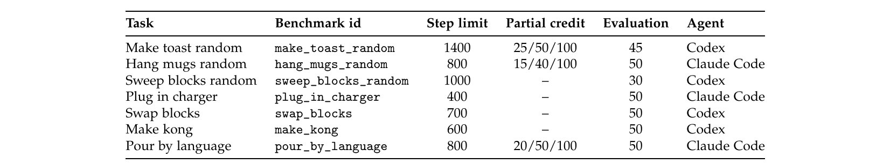
C.4 BEHAVIOR-1Kp.40
Tasks and interface. We use six tasks of the 2025 BEHAVIOR Challenge (Li et al., 2023) with the Galaxea R1Pro, in the official evaluation environment of BEHAVIOR-1K (Table 14). The agent commands the native action at 30 Hz, base velocity together with absolute joint targets of the four trunk joints and the two seven-joint arms and a command for each gripper, with between 1 and 150 rows per call. It may also move the base in closed loop, step an end effector through inverse kinematics, plan collision-free arm motions, lift pixels to 3D points, and preview a motion on the robot alone.
任务与接口。我们使用 2025 BEHAVIOR 挑战赛的六个任务（Li et al., 2023），平台为 Galaxea R1Pro，在 BEHAVIOR-1K 的官方评测环境中进行（表 14）。智能体以 30 Hz 下达原生动作：底盘速度，加上四个躯干关节与两条七关节手臂的绝对关节目标，以及每个夹爪的指令；每次调用 1–150 行。它还可以闭环移动底盘、用逆运动学步进末端执行器、规划无碰撞的手臂运动、把像素提升为三维点、以及在纯机器人模型上预演动作。
It observes the scene through the head camera at 720×720 and a camera on each wrist at 480×480, all RGB-D with intrinsics and poses relative to the base, together with the official proprioception and an odometry estimate integrated from the base velocity. The step limit of an episode is 1.5 times the mean length of the human demonstrations of the task, as in the 2026 evaluation, whereas the 2025 challenge allowed twice the mean.
它通过 720×720 的头部相机与每个腕部 480×480 的相机观察场景，全部为 RGB-D，并带有内参与相对基座的位姿；此外还有官方本体感知，以及由底盘速度积分得到的里程计估计。每个回合的步数上限为该任务人类演示平均长度的 1.5 倍（与 2026 年评测一致），而 2025 年的挑战赛允许 2 倍。
Task information. The task description contains the official instruction, the goal and initial conditions of the task’s BDDL definition, the scene and its rooms, and the limits of an episode. Except on boxing books, the agent also receives keyframes of successful official demonstrations from the head camera: the first frame, the end of each annotated skill, the final frame, and enough frames in between that no gap exceeds 10 s.
任务信息。任务描述包含官方指令、该任务 BDDL 定义中的目标与初始条件、场景及其房间、以及回合一上的各项限制。除 boxing books 外，智能体还会收到头部相机拍摄的官方成功演示关键帧：第一帧、每个标注技能的结束帧、最后一帧，以及中间补足到“任意相邻两帧间隔不超过 10 s”的帧。
Exploration and evaluation. Exploration scenes are the 300 training instances of each task, and evaluation uses the test instances 301 to 310 (Table 14). An episode is limited to 900 s plus 0.5 s per allowed step. Boxing books is evaluated as a fully automated program and the other five tasks as agent-in-the-loop programs, with one fresh copy of the agent per test instance.
探索与评测。探索场景是每个任务的 300 个训练实例，评测使用测试实例 301–310（表 14）。每个回合限制为 900 s，再加每个允许步 0.5 s。boxing books 以全自动程序形式评测，其余五个任务以智能体在环程序形式评测，每个测试实例配一个全新的智能体副本。
On sorting items, clearing food, and clean up desk, each copy also receives the reports that a review model, Gemini 3.8 Flash, wrote on the fully automated program’s runs on the other nine test instances, built from the final status of each goal condition, the partial score, the program’s log, and camera frames, and referring to objects only by their task names. Episodes are scored by the Q-score of the challenge: 1 on success and otherwise the fraction of goal conditions that become satisfied during the episode, maximized over the alternative groundings of the goal and averaged over the ten instances.
在 sorting items、clearing food 与 clean up desk 上，每个副本还会收到评审模型 Gemini 3.8 Flash 对其他九个测试实例上全自动程序运行情况所写的报告——报告依据每个目标条件的最终状态、部分得分、程序日志与相机帧撰写，并且只用任务名称来指代物体。回合按挑战赛的 Q-score 计分：成功记 1，否则记该回合中得以满足的目标条件比例；对目标的多种可能 grounding 取最大，再对十个实例取平均。
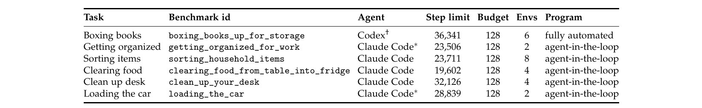
C.5 HumanoidArenap.40
Tasks and interface. We use the seven tasks of HumanoidArena (Wang et al., 2026c) that have official test episodes, with a Unitree G1 that has 29 body joints and Dex3 hands (Table 15). The agent commands the official 40-dimensional whole-body reference at 50 Hz, with between 1 and 100 frames per call: the root translation and height, which the SONIC tracker (Luo et al., 2026) does not follow, since the robot translates only by stepping, the root orientation relative to the initial heading, 29 joint targets, and an open or close command for each hand.
任务与接口。我们使用 HumanoidArena 中全部七个具有官方测试回合的任务（Wang et al., 2026c），平台为具有 29 个身体关节与 Dex3 手的 Unitree G1（表 15）。智能体以 50 Hz 下达官方的 40 维全身参考量，每次调用 1–100 帧，包括：根节点的平移与高度（SONIC 跟踪器（Luo et al., 2026）并不跟随这两项，因为机器人只能靠迈步平移）、相对于初始朝向的根朝向、29 个关节目标，以及每只手的张开/闭合指令。
It may also plan collision-free motions of the arms, optionally with the waist, and lift pixels to 3D points in the pelvis frame and in a gravity-aligned frame. It observes the scene through the head camera at 640×480 in RGB-D, with the intrinsics and the camera pose in the pelvis frame, together with the root orientation, the joint positions and velocities, and the state of the hands. An episode ends when the robot falls, by the rule of the benchmark.
它还可以规划手臂（可选含腰部）的无碰撞运动，并把像素提升为骨盆坐标系与重力对齐坐标系下的三维点。它通过 640×480 的头部 RGB-D 相机观察场景，并获得内参以及相机在骨盆系中的位姿；此外还有根朝向、关节位置与速度、以及手部状态。按基准规则，机器人一旦摔倒，该回合即结束。
Task information. The agent can read three teleoperated demonstrations of the task from the official raw dataset. Each is a complete episode with the 40-dimensional references, joint states, root poses, and the head camera’s RGB video and depth. The demonstrations are mounted read-only for the exploring agent only; its programs may contain motion segments that the agent cut from them (Section D.3).
任务信息。智能体可以读取官方原始数据集中该任务的三条遥操作演示。每条都是一个完整回合，包含 40 维参考量、关节状态、根位姿，以及头部相机的 RGB 视频与深度。这些演示仅以只读方式挂载给探索阶段的智能体；其程序可以包含智能体从演示中裁出的运动片段（D.3 节）。
Exploration and evaluation. We use Claude Opus 5.5 as our agent. Exploration scenes use seeds derived from a hash that excludes every official seed. Sessions with a budget above 32 explore two environments and may start two subagents. An episode is limited to 600 s plus 1 s per allowed step. The program is evaluated on the 60 official test episodes of each task, seeds 0, 1, and 2 with 20 episodes each, derived as in the official evaluation; every episode runs in a fresh simulator and container, four in parallel, and the simulator advances only when the program sends actions. Success is binary, and a fall or an error counts as a failure.
探索与评测。我们使用 Claude Opus 5.5 作为智能体。探索场景使用由哈希推导出的种子，该哈希排除了所有官方种子。预算大于 32 的会话会探索两个环境，并可启动两个子智能体。每个回合限制为 600 s，再加每个允许步 1 s。程序在每个任务的 60 个官方测试回合上评测——种子 0、1、2 各 20 个回合，推导方式与官方评测一致；每个回合都在全新的仿真器与容器中运行，四个并行，且只有在程序发出动作时仿真器才推进。成功与否是二值的；摔倒或出错均记为失败。
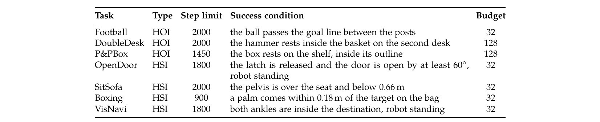
C.6 DexJoCop.41
Tasks and interface. We use the eleven tasks of DexJoCo (Wang et al., 2026a) in its rand-obj setting, in which the placement of the objects and the height of the table are randomized at every reset (Table 16). Single-arm tasks use one Franka Panda arm with a 16-degree-of-freedom Allegro hand, and bimanual tasks use two. The agent commands the official policy action of the benchmark: for each arm, an absolute target for the flange position and orientation in the world frame, the orientation as a rotation vector, together with sixteen hand joint targets, which gives a 22-dimensional row for one arm and a 44-dimensional row for two.
任务与接口。我们使用 DexJoCo 的十一个任务（Wang et al., 2026a），采用其 rand-obj 设置——每次重置时物体的摆放位置与桌面高度都会被随机化（表 16）。单臂任务使用一条 Franka Panda 机械臂配 16 自由度 Allegro 手，双臂任务使用两条。智能体下达该基准的官方策略动作：对每条手臂，给出法兰在世界坐标系中位置与姿态的绝对目标（姿态用旋转向量表示），再加上十六个手部关节目标，因此单臂为 22 维一行、双臂为 44 维一行。
The official operational-space controller pulls the flange toward its target and position actuators drive the hand joints, without a motion planner. Each row advances the simulation by 20 ms, and one call to the interface executes between 1 and 150 rows. Observations are 640×640 RGB-D images from the official cameras of each task, with depth in millimeters and the intrinsics and world pose of every camera, together with the official proprioceptive state, the flange pose of each arm and the joint positions of each hand.
官方的操作空间控制器把法兰拉向目标，位置作动器驱动手部关节，没有运动规划器。每一行使仿真推进 20 ms，一次接口调用执行 1–150 行。观测是各任务官方相机的 640×640 RGB-D 图像，深度以毫米为单位，并带有每个相机的内参与世界位姿；此外还有官方本体感知状态、每条手臂的法兰位姿与每只手的关节位置。
No force, torque, contact, or tactile signal is exposed, and the object poses and table height in the simulator’s state never reach the agent. The interface also offers a dry run of a motion on the robot alone, without the table and objects, that does not advance the episode, and helpers for rotation arithmetic and for lifting a pixel with its depth to a world position.
接口不暴露任何力、力矩、接触或触觉信号，仿真器状态中的物体位姿与桌面高度也从不传给智能体。接口还提供一种“空跑”：仅在机器人模型上执行动作（不含桌面与物体），不推进回合；另有旋转运算的辅助函数，以及把带深度的像素提升到世界坐标的辅助函数。
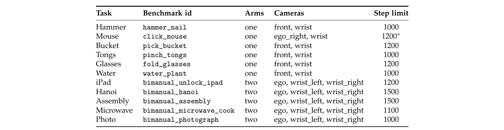
Task information. The agent receives a task description generated from the task definition: the official instruction, the robot and its cameras, the step limit and wall-clock limit of an episode, the fact that object placement and table height change between episodes, and the binary success criterion without partial credit. It contains no detail of the success check. The agent also receives three images of the completed task, the final frames of three successful human demonstrations from the official dataset, each in a different layout, taken from the task’s overview camera. They contain no actions and no states. The three demonstrations are the first that replay successfully in the official environment from initial layouts that differ from all 150 evaluation layouts.
任务信息。智能体收到的任务描述由任务定义生成，包含：官方指令、机器人及其相机、回合的步数上限与墙上时间上限、“物体摆放与桌面高度会在回合之间变化”这一事实，以及不带部分得分的二值成功判据——但不包含成功检查的任何细节。智能体还会收到三张任务完成图像，即官方数据集中三条成功人类演示的最后一帧，各来自不同布局，由任务的概览相机拍摄。它们不含动作与状态。这三条演示是在“与全部 150 个评测布局都不同”的初始布局上、能够在官方环境中成功回放的最初三 条。
Exploration. A session gives one agent, Claude Code with Claude Opus 5.5 at the xhigh effort setting and without subagents, one simulated environment, and a budget of N ∈ {2, 4, 8, 16, 32} exploration episodes. The agent starts from an empty workspace (Section C.1). A exploration episode is either interactive, in which the agent drives the robot itself through the interface or through its own scripts, or a rehearsal, in which its registered program runs alone in a fresh container on a fresh episode while the agent is paused; both consume the budget.
探索。一次会话给一个智能体（Claude Code + Claude Opus 5.5，xhigh 强度，不使用子智能体）提供一个仿真环境，以及 N ∈ {2, 4, 8, 16, 32} 个探索回合的预算。智能体从空工作区开始（C.1 节）。一个探索回合要么是交互式的——智能体自己通过接口或自己的脚本驱动机器人；要么是一次排练——在智能体暂停时，由它注册的程序在一个全新容器中、于一个新回合上单独运行。两者都消耗预算。
The agent ends exploration by submitting a program that has completed a rehearsal without error, so the budget is an upper bound, and over the 55 sessions the agents used 592 of the 682 budgeted episodes (Table 17). Exploration layout i is the first reset of the official rand-obj environment with seed 1000 + i, the same randomization as in evaluation, whose layouts come from seeds 0 to 2. An episode is limited to the official number of steps and to 600 s plus 5 s per allowed step of wall-clock time, a limit that no episode reached. The agent and its programs may call a vision-language model, Gemini 3.8 Flash, with a budget of $10 per session.
智能体以“提交一个已完成无错排练的程序”来结束探索，因此预算只是上界：在 55 次会话中，智能体实际使用了 682 个预算回合中的 592 个（表 17）。探索布局 i 是官方 rand-obj 环境在种子 1000 + i 下的第一次重置，与评测采用同样的随机化（评测布局来自种子 0–2）。每回合受官方步数上限约束，墙上时间限制为 600 s 加每个允许步 5 s——没有任何回合触及该上限。智能体及其程序可以调用视觉语言模型 Gemini 3.8 Flash，每次会话预算 10 美元。
Evaluation. Once the agent has exited, its workspace is frozen, and the submitted program is evaluated alone on 150 episodes that reproduce the official evaluation of DexJoCo layout for layout: seeds 0, 1, and 2, with 50 consecutive resets each. Every episode runs in a fresh simulator process and a fresh container for the program, four episodes in parallel, under the official step limit and success check, and an error or an early exit of the program counts as a failure. The simulator advances only when the program sends actions, so evaluation is synchronous and free of inference latency, whereas the official client of the benchmark is asynchronous.
评测。智能体退出后，其工作区被冻结；提交的程序在 150 个回合上单独评测，这些回合逐布局复现 DexJoCo 的官方评测：种子 0、1、2 各 50 次连续重置。每个回合都在全新的仿真器进程与全新的程序容器中运行，四个并行，遵循官方步数上限与成功检查；程序出错或提前退出记为失败。由于只有在程序发出动作时仿真器才推进，评测是同步的、不含推理时延——而该基准的官方客户端是异步的。
C.7 LIBERO 与 LIBERO-Prop.42
Tasks and interface. We use the 40 tasks of the Spatial, Object, Goal, and Long suites of LIBERO (Liu et al., 2023) in the official environment, numbered from 0 in the official order, and the position-perturbed variants of LIBERO-Pro (Zhou et al., 2025), in which objects exchange their initial regions. The agent commands the official action at 20 Hz, increments of the end-effector position and rotation, scaled so that 1 corresponds to 5 cm or 0.5 rad, and a gripper command, with between 1 and 100 rows per call and no motion planner.
任务与接口。我们使用 LIBERO（Liu et al., 2023）中 Spatial、Object、Goal 与 Long 四个套件共 40 个任务的官方环境，按官方顺序从 0 编号；以及 LIBERO-Pro（Zhou et al., 2025）的位置扰动变体——其中物体会互换其初始区域。智能体以 20 Hz 下达官方动作：末端执行器位置与旋转的增量（缩放为 1 对应 5 cm 或 0.5 rad），以及一条夹爪指令；每次调用 1–100 行，且没有运动规划器。
It observes the scene through the agent-view and wrist cameras at 256×256 in RGB-D, with the intrinsics and the pose of each camera, together with the end-effector pose and the finger positions, and it may lift pixels to 3D points. The step limit of an episode is 220 on Spatial, 280 on Object, 300 on Goal, and 520 on Long, after ten initial steps without motion.
它通过 256×256 的智能体视角相机与腕部相机观察场景（RGB-D），并获得每个相机的内参与位姿，以及末端执行器位姿与手指位置；它可以把像素提升为三维点。每回合的步数上限为：Spatial 220、Object 280、Goal 300、Long 520——均在此前有十步的初始化（不做运动）之后计算。
Task information. The task description contains the official instruction, the robot and its cameras, the limits of an episode, and the binary success criterion without the detail of its check. The agent also receives three images of the completed task, the final agent-view frames of three official human demonstrations that replay successfully.
任务信息。任务描述包含官方指令、机器人及其相机、回合的各项限制，以及不带检查细节的二值成功判据。智能体还会收到三张任务完成图像——三条能成功回放的官方人类演示在智能体视角下的最后一帧。
Exploration and evaluation. We use Claude Opus 5.5 as our agent in two environments. The budget is up to 20 exploration episodes on the official placement distribution, followed by at most 5 optional episodes of adaptation on the perturbed distribution, which the agent may use when it judges that its program will not transfer (Section D.4). Exploration layout i is a fresh reset of the official environment with seed 1000 + i, a sample of the official placement distribution and never a stored initial state.
探索与评测。我们使用 Claude Opus 5.5 作为智能体，运行在两个环境中。预算为：在官方摆放分布上至多 20 个探索回合，随后可在扰动分布上至多做 5 个“可选”的适应回合——当智能体判断其程序无法迁移时才会使用（D.4 节）。探索布局 i 是官方环境在种子 1000 + i 下的全新重置，属于官方摆放分布的一个采样，绝不是某个存储的初始状态。
An episode is limited to 600 s plus 5 s per allowed step. The program is evaluated on the 50 official initial states of each task and on the 50 position-perturbed states of LIBERO-Pro, each episode in a fresh container, synchronously, and with binary success. Adaptation episodes are fresh resets of the perturbed task with seeds from 2000.
每回合限制为 600 s 加每个允许步 5 s。程序在每个任务的 50 个官方初始状态、以及 LIBERO-Pro 的 50 个位置扰动状态上评测；每个回合都在全新容器中同步运行，成功与否为二值。适应回合是扰动任务的全新重置，种子从 2000 起。
D 仿真案例研究Simulation Case Studiesp.44
This section follows single sessions on the simulation benchmarks in detail: what the agent explored, the program it wrote, and how that program behaves on unseen scenes.
本节详细追踪仿真基准上的单次会话：智能体探索了什么、它写出了什么程序，以及该程序在未见场景上的表现。
D.1 扰动下的重感知：把两个罐子放进篮子p.44
The first task of the LIBERO-Long suite asks the robot to put both the alphabet soup and the tomato sauce in the basket, on a table that also holds a ketchup bottle, a carton of orange juice, milk, butter, and cream cheese. The agent explored the task for 15 episodes in about an hour, ten of them interactive and five rehearsals of its program, and wrote a program of 1,362 lines that succeeds in all 50 official initial states and in 44 of the 50 perturbed states of LIBERO-Pro. The perturbation exchanges the soup with the ketchup and the tomato sauce with the orange juice, which moves the two cans by 15 and 32 cm (Figure 14a). This section shows what the program perceives, how it plans, and why its behavior transfers.
LIBERO-Long 套件的第一个任务要求机器人把字母汤罐头和番茄酱罐头都放进篮子；桌面上还有一瓶番茄沙司（ketchup）、一盒橙汁、牛奶、黄油与奶油奶酪。智能体用了约一小时、15 个回合探索该任务（其中 10 个交互回合、5 次程序排练），写出了一个 1,362 行的程序：它在全部 50 个官方初始状态上成功，在 LIBERO-Pro 的 50 个扰动状态中成功了 44 个。该扰动把汤罐头与番茄沙司对调、把番茄酱罐头与橙汁对调，使两个罐子分别移动了 15 cm 与 32 cm（图 14a）。本节说明该程序感知了什么、如何规划，以及它的行为为何能够迁移。
Perception. The program perceives the scene anew in every round, and it divides the work between a vision-language model and depth (Figure 13). Gemini only names the objects: it returns a pixel on each can and in the basket, together with a short description of each can’s state. Every geometric quantity comes from depth. The program lifts the agent-view depth into the world frame, takes the table as the mode of the point heights, and, starting from each Gemini pixel, segments the object by a flood fill over 3D-connected points; the top height is a high percentile of the segment, and the axis is the centroid of its top 1.2 cm.
感知。程序在每一轮都重新感知场景，并把工作分配给视觉语言模型与深度（图 13）。Gemini 只负责“命名”物体：它在每个罐子上与篮子上各返回一个像素，并附上对每个罐子状态的简短描述。所有几何量都来自深度。程序把智能体视角的深度提升到世界坐标系，取点高度的众数作为桌面高度，然后从每个 Gemini 像素出发，在三维连通的点上做泛洪填充来分割物体；顶面高度取该分割的一个高分位数，轴线取顶面最高 1.2 cm 内点的质心。
A segment counts as a can only if its top is 4.5 to 8 cm wide and 5 to 30 cm above the table, bounds that the agent set after measuring every object on the table and that reject the taller and narrower ketchup bottle. A second detector, which uses depth alone, finds flat, round plateaus of the size of a lid and adds any can that Gemini missed. Before grasping, the program hovers 7 cm above the lid and refits the lid disk from the wrist camera; a top that is not can-shaped is blacklisted, and the grasp yaw is the first of four candidates whose finger zones are clear of other objects.
一个分割只有在顶面宽度为 4.5–8 cm、且高于桌面 5–30 cm 时才被判定为罐子——这些界限是智能体测量了桌上每个物体之后设定的，正好能排除更高更细的番茄沙司瓶。第二个检测器只用深度，它寻找“盖子大小”的平坦圆形平台，用来补上 Gemini 漏掉的罐子。抓取之前，程序悬停在盖子上方 7 cm 处，用腕部相机重新拟合盖子圆盘；形状不像罐顶的会被列入黑名单；抓取偏航角取四个候选中第一个“手指区域不与其他物体相碰”的角度。
Placing by footprint reach. The agent-view camera cannot see the floor of the basket, which its near wall hides, and the agent found during exploration that this flat floor is only about 7 by 10 cm: drop spots chosen by clearance put the second can’s footprint over the sloped walls, where the can stalled. The program therefore maps the interior from the wrist camera while it holds the first can, as a height map with 4 mm cells, and computes for every cell the highest point under the footprint of a can, its footprint reach (Figure 13c,d).
按“足迹可达高度”放置。智能体视角的相机看不到篮底——它被篮子的近侧壁挡住了；而智能体在探索中发现，这块平底只有约 7×10 cm：按“间隙最大”选出的投放点，会让第二个罐子的足迹落在斜壁上，罐子就卡在那儿。因此，程序在夹着第一个罐子时，用腕部相机对篮内建图，得到 4 mm 网格的高度图，并为每个网格计算“罐子足迹下方最高点”，即足迹可达高度（图 13c,d）。
It chooses the pair of spots, at least 6.8 cm apart, that minimizes the larger of their two reaches, releases each can just above its reach, and remaps the basket after the first release. During exploration, the agent also arranged perturbed layouts of its own, stacking the tomato sauce on the soup, standing the soup on the cream-cheese box, placing the cans side by side, and pushing the basket by 8 cm and rotating it by 20°, and it ran its program on each of them.
它在间距至少 6.8 cm 的条件下选出一对投放点，使两者可达高度中的较大者最小；随后把每个罐子放在略高于其可达高度处释放，并在第一次释放之后重新建图。在探索期间，智能体还自行布置了各种扰动布局——把番茄酱罐头叠在汤罐头上、把汤罐头立在奶油奶酪盒上、把两个罐子并排摆放、以及把篮子推移 8 cm 并旋转 20°——并在每一种布局上都运行了自己的程序。
Why the program transfers. Nothing in the program refers to where the objects stood during exploration, so the perturbation changes its inputs but not its procedure. Under perturbation, its first estimate of each can’s axis lies within a median of 3.1 mm of the ground truth, against 2.9 mm on the official layouts, and the wrist refit within a median of 1.0 mm, while the cans themselves moved by 15 and 32 cm (Figure 14b); a policy that reproduced its official motions would miss each can by that displacement.
程序为何能迁移。程序里没有任何地方引用“物体在探索时所在的位置”，因此扰动改变的是它的输入，而非它的流程。在扰动下，它首次估计的罐子轴线与真值的中位误差为 3.1 mm（官方布局上为 2.9 mm），腕部重拟合的中位误差为 1.0 mm——而罐子本身移动了 15 cm 与 32 cm（图 14b）。一个只会复现官方动作的策略，会因同样的位移而与罐子“擦肩而过”。
The checks also absorb labelling errors. When Gemini placed the soup’s label on the ketchup bottle, which now stands where the soup stood in the official layouts, the wrist refit measured a top 3.7 cm across, and the program rejected it as not can-shaped, blacklisted its position, and found the soup in the next round. All six failures share one cause: the soup is not visible from the agent-view camera at the start, and the program, which re-perceives only from its home pose, stops with about 300 steps left.
这些检查也吸收了标注错误。有一次 Gemini 把“汤罐头”的标签贴到了番茄沙司瓶上——后者此时正站在官方布局中汤罐头所在的位置；腕部重拟合测得该顶面直径只有 3.7 cm，程序便以“形状不像罐顶”为由拒绝它、把该位置列入黑名单，并在下一轮重新找到了汤罐头。六次失败共享同一个原因：汤罐头在开始时从智能体视角的相机中不可见，而程序只在它的初始位姿处重新感知，于是停在还剩约 300 步的时候。
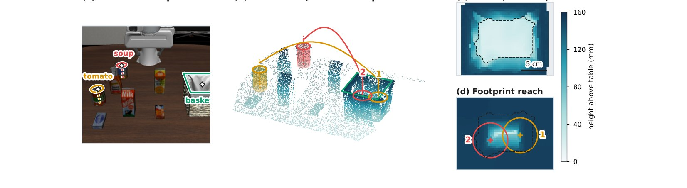
以下代码清单保留原文英文标识符与注释，以便对照阅读（未作中译）。
run()，压缩自 controller.py Pseudocode · run(), condensed from controller.pydef run(robot):
table_z = mode of the agent-view point heights
repeat up to 3 rounds: # perceive anew in every round
lids = flat, round plateaus in depth # depth alone
labels = Gemini(agent view) # one pixel per can and the basket
cans = [flood_fill(p) for p in labels if is_can(top width, height)]
cans += lids that no label explains, minus blacklisted positions
for can in order(cans): # stacked cans: the higher first
hover 7 cm above the lid; refit the lid disk from wrist depth
if not can_shaped(disk): blacklist(can); continue
yaw = first of {0, 90, 45, -45} deg with clear finger zones
descend to top - 3 cm; close; lift
if not 3.5 cm < finger opening < 7.4 cm: continue
if no basket map: map the basket from the wrist, holding the can
spot = plan_spots(map) for the first can, else lowest_spot(remap)
lower to the release height above the footprint reach; open; lift
if task complete: return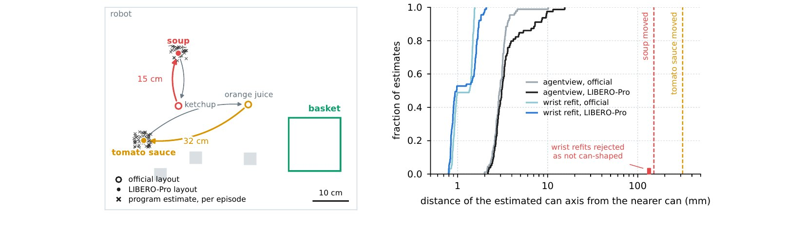
basket.py · 足迹可达高度与投放点规划（footprint reach and drop-spot planning）def footprint_max(b, r=0.036):
H = np.where(np.isfinite(b["H"]), b["H"], b["rim_z"]) # unobserved cells count as rim
res = b["grid"][2]
k = int(np.ceil(r / res))
yy, xx = np.mgrid[-k:k + 1, -k:k + 1]
fp = (xx ** 2 + yy ** 2) * res ** 2 <= r * r # disk of the can's footprint
return ndimage.maximum_filter(H, footprint=fp, mode="constant", cval=b["rim_z"])
def plan_spots(b, r=0.036, min_sep=0.068):
F = footprint_max(b, r)
ii, jj = np.nonzero(b["interior"])
if len(ii) < 2:
return None
f = F[ii, jj]
keep = np.argsort(f)[:400]
ii, jj, f = ii[keep], jj[keep], f[keep]
res = b["grid"][2]
D = np.hypot(ii[:, None] - ii[None], jj[:, None] - jj[None]) * res
cost = np.maximum(f[:, None], f[None]) + 0.5 * np.maximum(0.0, 0.08 - D)
cost[D < min_sep] = np.inf
a, c = np.unravel_index(np.argmin(cost), cost.shape)
if not np.isfinite(cost[a, c]):
return None
s1, s2 = cell_xy(b["grid"], ii[a], jj[a]), cell_xy(b["grid"], ii[c], jj[c])
return [(s1, float(f[a])), (s2, float(f[c]))]D.2 自标定与抓取设计：两只灵巧手的汉诺塔p.47
The bimanual Tower of Hanoi task of DexJoCo asks for the final two moves of a three-level tower: the medium red disk goes from the middle peg onto the large blue disk on the right peg, and the small yellow disk from the left peg on top of it. Two Franka arms carry 16-degree-of-freedom Allegro hands, and the disks slide over pegs that stand 13 cm above them, so a grasp has to hold a disk level as it travels along its peg without touching the peg.
DexJoCo 的双臂汉诺塔任务要求完成三层塔的最后两步：把中号红色圆盘从中间立柱移到右立柱上大号蓝色圆盘之上，再把小号黄色圆盘从左立柱叠到它上面。两条 Franka 机械臂各装一只 16 自由度 Allegro 手；圆盘要沿高出盘面 13 cm 的立柱滑过，因此抓取必须在沿立柱移动的过程中保持圆盘水平，且不能碰到立柱。
The agent received no grasp and no model of the hand, only the joint semantics and a few generic postures in its skills. It wrote a program that completed all 150 formal episodes on unseen layouts, in which the board shifts by up to 4.9 cm and the table height varies by as much.
智能体既没有拿到抓取方式，也没有拿到手的模型，只拿到关节语义和技能中的几个通用姿态。它写出的程序在未见布局上完成了全部 150 个正式回合——这些布局中，底板最多平移 4.9 cm，桌面高度也有同等幅度的变化。
Measuring its own fingertips. The agent spent its first episode on its own hand, without touching a disk. It moved single joints of the right hand and lifted the wrist cameras’ depth into world points to see what each joint moves, finding that the first thumb joint turns the thumb from pointing sideways to pointing straight down and that the last two flex its tip forward. It then held the posture it meant to grasp with, the index finger and the thumb both pointing down, segmented the white fingertip caps in the right wrist camera, lifted them to 3D, and split them into two clusters (Figure 15).
测量自己的指尖。智能体把第一个回合花在了自己的手上，完全没碰圆盘。它逐个转动右手的关节，把腕部相机的深度提升为世界点，以观察每个关节带动什么；由此发现第一个拇指关节会把拇指从“朝侧”转到“竖直向下”，而最后两个关节让指尖向前弯曲。随后它摆出打算用来抓取的姿态（食指与拇指都朝下），在右腕相机中分割出白色的指尖帽，提升到三维，并聚成两簇（图 15）。
Relative to the measured flange, the thumb cluster lies at (−3.3, 4.1, −15.7) cm and the index cluster at (7.3, 3.1, −12.9) cm; the agent adopted tip offsets of (−2.4, 3.8, −16.3) and (8.3, 3.6, −13.3) cm, about 1 cm toward the centre of each tip, and every grasp of its program is built on them, as the first listing at the end of this section shows.
相对于实测法兰坐标系，拇指簇位于 (−3.3, 4.1, −15.7) cm、食指簇位于 (7.3, 3.1, −12.9) cm；智能体采纳的指尖偏移为 (−2.4, 3.8, −16.3) 与 (8.3, 3.6, −13.3) cm——大致朝各自指尖中心内移约 1 cm——程序中所有抓取都建立在这两个偏移上，本节末尾的第一段代码清单即为佐证。
The agent never saw a model of the hand, yet its thumb offset lies within 1.1 mm of the fingertip of the official model. Its index offset lies 27 mm from the model’s, because the camera sees only the upper part of that cap, but the error shifts the planned pinch line by only about 8 mm across a 7.7 cm disk. The same measurements placed the wrist camera at (−14.0, −3.0, 4.1) cm from the flange, exactly where the official model puts it.
智能体从未见过手的模型，但它的拇指偏移与官方模型的指尖相差仅 1.1 mm。食指偏移与模型相差 27 mm——因为相机只能看到那个指尖帽的上半部分——但这一误差只会让规划出的夹持线在 7.7 cm 的圆盘上偏移约 8 mm。同样的测量还把腕部相机定位在距法兰 (−14.0, −3.0, 4.1) cm 处，与官方模型给出的位置完全一致。
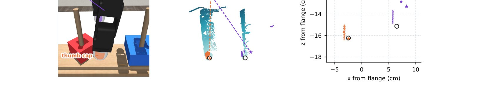
Designing the grasp. The agent then designed its grasp by trying candidates on the red and yellow disks (Figure 16). A palm-down hook pressed the palm onto the disk, and flexing the thumb turned the disk by 45° about its peg. A palm-down pinch at the wall of the disk lifted it, but the disk swung by about 40° about the pinch line, which the agent measured to pass 2.8 cm from the disk’s centre of mass, and a firmer squeeze dropped it.
设计抓取。随后，智能体通过在红、黄圆盘上尝试各种候选来设计抓取（图 16）。掌心朝下的“钩抓”把掌心压到圆盘上，一弯拇指就把圆盘绕其立柱转了 45°。掌心朝下捏住圆盘侧壁可以把它提起，但圆盘会绕夹持线摆约 40°——智能体测得该夹持线距圆盘质心 2.8 cm——而夹得更紧一些就会把它掉下去。
A side pinch lifted the yellow disk by 10 cm before it slipped back onto its peg, and a cage grasp left only 4 mm between the hand’s fixed thumb–index gap of 8.1 cm and the 7.7 cm red disk, so that only the thumb touched it. From these failures, the agent derived that rolling the hand by an angle θ moves the index edge of the palm 0.10 sin θ − 0.013 cos θ m away from the thumb–index line, so that a roll of about 25° clears the peg and lets the pinch line pass through the centre of the disk. The resulting rolled vertical pinch, with a roll of 0.44 rad, held both disks through a 22 cm lift and a 40 cm carry in the fourth episode.
侧向捏取把黄色圆盘提起 10 cm 之后又滑回了立柱；而“笼式”抓取时，手固定的拇指—食指间距 8.1 cm 与 7.7 cm 的红盘之间只剩 4 mm，结果只有拇指碰到它。由这些失败，智能体推导出：把手滚转角度 θ 会使手掌的食指侧边缘离开拇指—食指连线 0.10 sin θ − 0.013 cos θ 米，因此滚转约 25° 既能避开立柱，又能让夹持线穿过圆盘中心。由此得到的“滚转竖直捏取”采用 0.44 rad 的滚转角，在第四个回合中让两个圆盘都经受住了 22 cm 的抬升与 40 cm 的搬运。
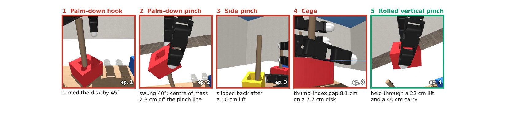
The program. On every layout, the program measures the disks and pegs from the egocentric depth image, pinches both disks at once, and moves the red disk first while the left hand waits. It verifies every lift by measuring the held disk from three cameras, and it opens, backs off, and pinches again when the disk rose less than half of the lift.
程序。在每一种布局上，程序都从以自我为中心的深度图像中测量圆盘与立柱，同时捏住两个圆盘，先移动红色圆盘，而左手等待。它通过三个相机测量被夹住的圆盘来核验每一次抬升；若圆盘上升不足抬升量的一半，就张开、后退、重新捏取。
Because each arm keeps converging to its command after a move, the agent measured the tracking lag, which decays by a factor of 0.78 every five steps, and the program aligns the disk with the peg on its predicted final position rather than on its current one. Before submitting, the agent injected alignment errors of 8 and 15 mm and a missed pinch into its own runs, and the program recovered from all of them; its five versions completed all of their autonomous runs.
由于每条手臂在动作结束后仍在继续收敛到其指令，智能体测量了跟踪滞后——它每五步衰减为原来的 0.78 倍——于是程序按“预测的最终位置”而非当前位置来让圆盘与立柱对齐。提交之前，智能体向自己的运行中注入了 8 mm 与 15 mm 的对齐误差，以及一次“夹空”，程序从所有这些情况中都恢复了；它的五个版本都完成了各自的全部自主运行。
Precision on unseen layouts. The program’s estimate of the target peg follows the hidden pose of the board across all 150 formal layouts, with residual standard deviations of 0.24, 0.05, and 0.18 mm in x, y, and height (Figure 17). After placing the red disk, the program measures its top again and finds it on average 0.66 mm, and at most 1.0 mm, below the height it predicted from the blue disk, the counterpart of the 6.5 mm check on the air fryer (Section G.2.1).
未见布局上的精度。在全部 150 个正式布局上，程序对目标立柱的估计都能跟上底板隐藏位姿的变化，在 x、y 与高度上的残差标准差分别为 0.24、0.05 与 0.18 mm（图 17）。放下红色圆盘后，程序再次测量其顶面，发现它平均比由蓝色圆盘预测的高度低 0.66 mm、最多低 1.0 mm——这与空气炸锅上 6.5 mm 的校验（G.2.1 节）遥相呼应。
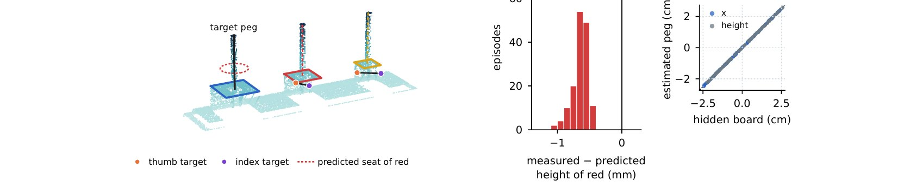
task.py · 指尖偏移与滚转竖直捏取（tip offsets and the rolled vertical pinch）TH_TIP = np.array([-0.024, 0.038, -0.163]) # default-frame right-hand thumb tip (th0=1.396, straight)
IX_TIP = np.array([0.083, 0.036, -0.133]) # index tip, x1=1.57 straight
R_T = 0.012
ROLL = 0.44
DISK_H = 0.05
PEG_ABOVE_TOP = 0.135 # peg top above top of a disk resting on the board
PRESHAPE = dict(ff=(0, 1.3, 0, 0), th=(1.396, 0, 0, 0))
SQUEEZE = dict(ff=(0, 1.75, 0.5, 0.3), th=(1.396, 0, 0.7, 0.4))
RELEASE = dict(ff=(0, 1.2, 0, 0), th=(1.396, 0, 0, 0))
PARK = {"right": np.array([-0.45, -0.40, 1.42]), "left": np.array([-0.45, 0.40, 1.42])}
def pinch_pose(side, c, half, yaw, mid, gap_t=0.006, dz=-0.010):
"""Flange pose so thumb tip is gap_t outside the near face and the thumb-index line crosses the centre."""
c = np.asarray(c, float)
th_off = world_offset(side, TH_TIP, ROLL, yaw)
ix_off = world_offset(side, IX_TIP, ROLL, yaw)
u = np.array([np.cos(yaw), np.sin(yaw)]); v = np.array([-np.sin(yaw), np.cos(yaw)])
lat_t = (th_off[:2] @ v - ix_off[:2] @ v) / 2
t_xy = c + (-half - R_T - gap_t) * u + lat_t * v
t = np.array([t_xy[0], t_xy[1], mid + dz])
flange = t - th_off
rv = rotvec_near(hand_rot(side, ROLL, yaw), np.array([-np.pi, 0, 0]))
return flange, rvD.3 从探索到代码：人形机器人把锤子举过横杆p.51
In the DoubleDesk task of HumanoidArena, a Unitree G1 humanoid has to take a hammer from one desk, carry it over a bar on the floor, and drop it into a basket on a second desk. The agent commands the robot through whole-body kinematic references that a learned tracker, SONIC, executes; it was given the tracker, three teleoperated demonstrations, a forward-kinematic model of the robot, and a tool that returns the level frame of the pelvis.
在 HumanoidArena 的 DoubleDesk 任务中，一台 Unitree G1 人形机器人必须从一张桌子上拿起锤子，把它搬过地板上的横杆，再放进第二张桌子上的篮子里。智能体通过全身运动学参考量来指挥机器人，由学习得到的跟踪器 SONIC 执行；它获得的资源包括：该跟踪器、三条遥操作演示、机器人的正运动学模型，以及一个返回骨盆水平坐标系的工具。
Over 125 exploration episodes and 10.7 hours, it wrote a program of 3,639 lines in eleven files, of which the 637-line kinematic model is the one it was given. The program completed 34 of the 60 formal episodes; before submitting it, the agent predicted “roughly half to two-thirds”.
在 125 个探索回合、10.7 小时中，它写出了一个 3,639 行、分布在十一个文件中的程序——其中 637 行是它被给定的运动学模型。该程序完成了 60 个正式回合中的 34 个；提交之前，智能体自己预测的是“大概一半到三分之二”。
Perception. Every quantity the program uses comes from the depth image of the head camera, lifted into a point cloud in the level frame of the pelvis (Figure 18). The rotation into that frame comes from the provided tool, and the agent’s own fit of the floor plane by random sample consensus agrees with it to within 0.07°. On this cloud, the agent’s code finds the floor as the mode of the point heights, the bar as the dominant line among points 5 to 11 cm above the floor, the desk tops and their near edges among upward-facing points, and the back wall, and it localizes the robot from the bar, the desks, and the wall against a map whose constants it measured itself.
感知。程序使用的每一个量都来自头部相机的深度图，并被提升为骨盆水平坐标系下的点云（图 18）。转换到该坐标系的旋转由所给工具提供，而智能体自己用随机采样一致性（RANSAC）拟合的地面平面与之一致到 0.07° 以内。在这个点云上，智能体的代码以点高度的众数找到地面，以高出地面 5–11 cm 的点中的主导直线找到横杆，从朝上的点中找到桌面及其近侧边缘，并找到后墙；它用横杆、桌子与墙，对照一张常数由它自己测得的 Map 来定位机器人。
It finds the hammer by its orange handle, takes the handle’s principal axis, decides which end carries the head from the dark points beyond the handle, and measures its length, using the 0.302 to 0.310 m it found during exploration to place the centre when part of the hammer is hidden; on the unseen scene of Figure 18, the length is 0.305 m. It finds the basket as the largest cluster of points above a desk and fits a rectangle of 0.60 by 0.40 m with its rim 0.90 m above the floor, and it measures the distance of each sole from the bar by combining the fitted bar with the kinematic model. The program perceives anew at every stage and before every step at the bar, and after a grasp it confirms that the hammer is held by measuring the height of the handle again.
它依据橙色手柄找到锤子，取手柄的主轴，由手柄之外的那些深色点判断哪一端是锤头，并测量其长度——当锤子有一部分被遮挡时，就用它在探索期间得到的 0.302–0.310 m 来放置中心；在图 18 的未见场景中，测得长度为 0.305 m。它把桌子上方最大的点簇认作篮子，拟合出一个 0.60×0.40 m 的矩形，篮沿高出地面 0.90 m；它把拟合出的横杆与运动学模型结合，测出每只脚底到横杆的距离。程序在每个阶段、以及横杆前的每一步之前都重新感知；抓取之后，它会再次测量手柄高度来确认锤子确实被夹住。
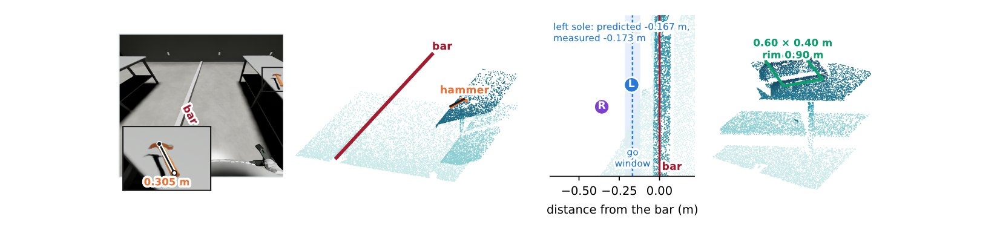
Locomotion and the bar. The agent’s skills recommended walking by replaying a cycle cut from a teleoperated recording. The agent cut a symmetric 66-step cycle from one demonstration, looped it with a ramp in heading, and measured that its amplitude does not control the length of a single step, which varied by ±10 cm; it therefore calibrated multi-step walks against its own localization and used them as a table of distances. Sidestepping moved the robot by 1 to 2 cm per cycle, so lateral placement turns and then walks.
运动与横杆。智能体的技能建议“通过回放从遥操作录像中裁出的步态周期”来行走。智能体从一条演示中裁出一个对称的 66 步周期，让它循环并加上朝向的斜坡变化，然后测量发现：该周期的幅度并不能控制单步长度——单步长度有 ±10 cm 的波动；因此它改为用自身定位来标定多步行走，并把结果当作一张“距离表”。横移每周期只能移动 1–2 cm，所以需要侧向放置时，它宁可先转身再走。
The crossing replays the step over the bar from one demonstration: with the recorded pitch, the pelvis did not travel and the lead foot landed on the bar, so the agent scaled the pitch to zero; perpendicular approaches landed the lead foot on the edge of the bar, so it approaches at 64°, where the swinging foot also reaches sideways; and it adds a trailing step when the robot ends astride the bar, after learning never to turn in that position.
横杆跨越回放了某条演示中“迈过横杆”的那一步：若保留录制时的俯仰，骨盆并不会前移，前脚会落在横杆上——于是智能体把俯仰缩放为零；垂直接近时前脚会落在横杆边缘——于是它改为以 64° 接近，此时摆动脚还能获得侧向分量；当机器人最终跨骑在横杆上时，它会补一个后随步——这是在学习到“绝不要在那个位置转身”之后加上的。
Whether a crossing succeeds depends on the stance from which it starts, and the agent built a model of how each step moves the two soles relative to the bar, from its own measurements of 102 transitions (Figure 19a). The model predicts that a left step places the left sole 14.5 cm ahead of the right one up to an amplitude of 0.35, and up to 25 cm at 0.6; a planner searches three actions ahead to bring the left sole into the window from which the program crosses.
跨越能否成功取决于起始站姿；智能体依据自己对 102 次状态转移的测量，建立了一个“每一步如何改变两只脚底相对横杆位置”的模型（图 19a）。该模型预测：当幅度不超过 0.35 时，一次左步会把左脚底放到右脚底前方 14.5 cm 处；幅度 0.6 时可达 25 cm。规划器向前搜索三步，以把左脚底带进程序用于跨越的那个窗口。
The bounds of that window are measured too: crossings started with the left sole within 21 cm of the bar succeeded in 17 of 17 trials, which set the far edge of the window at 21.5 cm, and the trailing sole is kept within 37 cm of it, since the agent found that crossings with the trailing sole closer than 35.5 cm had succeeded 27 times out of 27, and those with it between 35.5 and 42 cm had fallen 4 times out of 13.
窗口的边界同样是“测”出来的：以左脚底距横杆 21 cm 以内起始的跨越，17 次全部成功，于是窗口的远端被定在 21.5 cm；后随脚底则被限制在距横杆 37 cm 以内——因为智能体发现，后随脚底近于 35.5 cm 的跨越 27 次全部成功，而后随脚底在 35.5–42 cm 之间的 13 次中有 4 次摔倒。
The agent then wrote its own Monte Carlo simulators of the approach, which replay the stance model with its measured errors, and used them to choose that margin, which lowered the simulated risk of a fall from 9.3 to about 6% at a cost of 0.3 actions. Over all 137 crossings in its logs, every crossing started with the trailing sole within 35.5 cm of the bar succeeded, and in the formal evaluation the robot crossed the bar in all 59 logged episodes without a fall (Figure 19b). In the episode of Figure 18c, the model predicted that the left step would bring the left sole to 16.7 cm before the bar, and the point cloud measured it at 17.3 cm.
随后智能体自己编写了接近过程的蒙特卡洛仿真器，用测得的误差回放站姿模型，并用它来选取这一余量：把仿真中的摔倒风险从 9.3% 降到约 6%，代价是 0.3 个动作。在它日志里全部 137 次跨越中，凡是后随脚底距横杆 35.5 cm 以内起始的跨越都成功了；在正式评测中，机器人在全部 59 个有记录的回合里都跨过了横杆且未摔倒（图 19b）。在图 18c 的那个回合里，模型预测左步会把左脚底带到横杆前 16.7 cm，而点云实测为 17.3 cm。
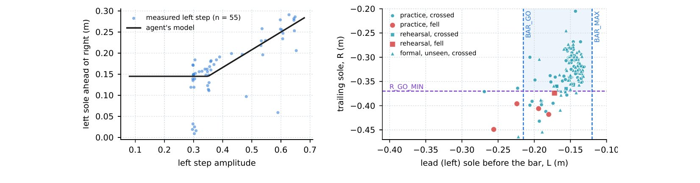
The program and its versions. The program runs seven stages, each with its own checks: it approaches the hammer until the handle lies at about 60° to its heading, which the agent found to give grasps that hold; it grasps with up to two attempts, treating a closure without torque as a miss; it carries the hammer to the bar while correcting its odometry from the bar and the basket; it plans its stance at the bar and crosses only from the window; it verifies after the crossing that both soles are past the bar; and it finds the basket and places the hammer inside its fitted rectangle. Each stage has a deadline in steps, measured from the durations of earlier runs.
程序及其版本。程序分七个阶段运行，每个阶段都有自己的检查：接近锤子，直到手柄与朝向约成 60°——智能体发现这个角度下抓取才更牢；至多两次尝试完成抓取，把“闭合时没有力矩”视为夹空；把锤子搬到横杆处，同时用横杆与篮子修正里程计；在横杆处规划站姿，并且只从窗口内跨越；跨越之后核验两只脚底都已越过横杆；最后找到篮子并把锤子放进拟合出的矩形内。每个阶段都有以步数计的截止时限，取自先前运行的时长。
The agent kept its own table of every stage in every episode, linked each failure to the change it made, and grew the program over more than thirty versions (Table 18 and Figure 20). Its interactive and rehearsal runs completed 41 of 82 episodes, rising to 6 of 9 for the final versions, and in the formal evaluation most failures occurred at the grasp, which held in 40 of the 59 logged episodes.
智能体自己维护了一张“每个回合每个阶段”的表格，把每次失败与它所做的修改关联起来，并把程序迭代到三十多个版本（表 18 与图 20）。它的交互与排练运行完成了 82 个回合中的 41 个，最后几个版本升到 9 个中的 6 个；在正式评测中，多数失败发生在抓取环节——59 个有记录的回合里有 40 个抓取成功。
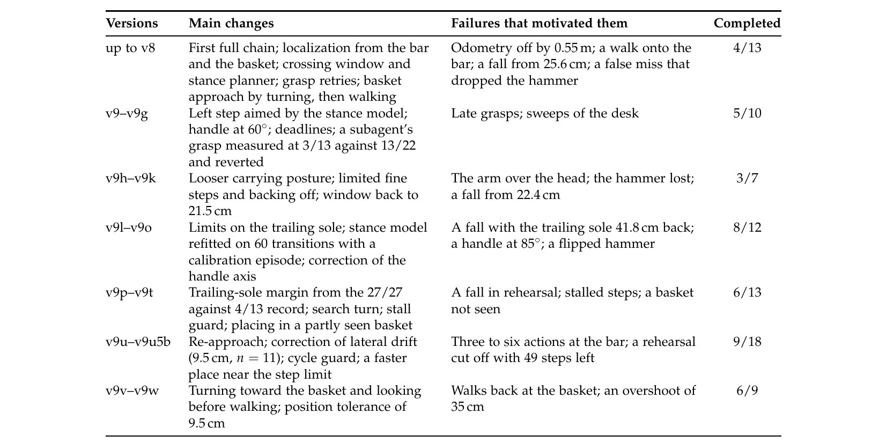
phases.py · 跨越窗口及其依据（the crossing window and its evidence）BAR_GO = -0.215
# crossings from L >= -0.21 succeeded 17/17 (ep26-57); -0.232 (x1), -0.224 (x2) and -0.223
# (ep43) crossed but -0.224 with R -0.396 fell (ep59), as did -0.256/-0.257 (ep72 -0.364,
# R5 -0.374, ep59 -0.396, ep64 -0.418)
BAR_MAX = -0.12
R_GO_MIN = -0.37
# trailing (right) sole at the go: R > -0.355 crossed 27/27; R -0.42..-0.355 fell 4/13
R_PLAN_MIN = -0.355
# planned stances keep the right sole at least here (sim: fall risk 9% -> 6%, +0.3 actions)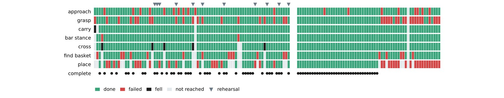
phases.py · 带验证的跨越（crossing with verification）def cross_bar(r, log, f=None):
"""Two high steps over the bar (demo01 replay, expert roll, no pitch). Returns True when both feet are
past."""
if f is None:
f = C.measure_feet(r)
lead = 'L'
# diagonal approach (heading = normal - 26 deg): the left foot leads
r.step(C.cross_frames(r.base_joints(), r.base_yaw(), r.hands, mirror=(lead == 'R'), rp=1.0, pitch=0.0))
r.hold(20)
f2 = C.measure_feet(r)
log(f"[bar] crossed lead {lead}: after {None if f2 is None else (round(f2['L'], 3), round(f2['R'], 3))}")
if f2 is not None and min(f2['L'], f2['R']) < 0.0 < max(f2['L'], f2['R']):
trail = 'L' if f2['L'] < f2['R'] else 'R'
log(f"[bar] straddle; trail step {trail}")
r.step(C.cross_frames(r.base_joints(), r.base_yaw(), r.hands, 905, 965, mirror=(trail == 'L'), rp=1.0,
pitch=0.0))
r.hold(20)
f2 = C.measure_feet(r)
return f2 is None or min(f2['L'], f2['R']) > 0.0run() 与 deliver()，压缩自 controller.pydef run():
approach the hammer until the handle lies at about 60 deg
grasp with up to 2 attempts # a closure without torque is a miss
while not held and step < 1000: # deadlines measured from earlier runs
re-approach if the hammer moved out of reach; grasp again # search turns if unseen
deliver()
def deliver():
carry: locate from the bar and the basket; turn; walk a calibrated distance; face 64 deg
repeat up to 3 times:
repeat up to 8 times: # stance planning at the bar
measure L, R from depth and kinematics
action = bar_action(L, R) # go, left step, right step, back, or walk
if action is go: break
if cross_bar(): break # both soles past the bar
raise the hand; find the basket (up to 6 looks); place inside the fitted rectangleD.4 LIBERO-Pro 上的扰动适应p.55
After its exploration on unperturbed layouts, RAX may adapt its program to the perturbed distribution of LIBERO-Pro. A subagent reads the program, the description of the perturbed task, and the first frame of a perturbed layout, and judges whether the program will transfer. When it judges that the program will not, the agent resumes from its workspace, with the notes and code of its exploration, and continues for at most 5 episodes on perturbed layouts before the program is evaluated again on its own.
在未扰动布局上完成探索之后，RAX 还可以把程序适应到 LIBERO-Pro 的扰动分布。一个子智能体读取程序、扰动任务的描述以及一个扰动布局的首帧，判断程序能否迁移。当它判断不能，智能体就从自己的工作区（连同探索时的笔记与代码）继续，在扰动布局上至多再跑 5 个回合，然后程序再次单独接受评测。
In this mode, RAX runs as an agent-in-the-loop program across the change of distribution: the program acts alone, and the agent steps in only to revise it, so that adaptation exercises the continual learning of Section 3.4. The agent adapted its program on five of the 40 tasks, tasks 3, 8, and 9 of the Long suite and tasks 1 and 5 of the Goal suite (Table 19).
在这种模式下，RAX 跨越分布变化时以“智能体在环程序”的形式运行：程序独自行动，智能体只在需要修改时介入——因此这种适应正好演练了 3.4 节的持续学习。智能体在 40 个任务中的 5 个上调整了程序：Long 套件的第 3、8、9 号任务，以及 Goal 套件的第 1、5 号任务（表 19）。
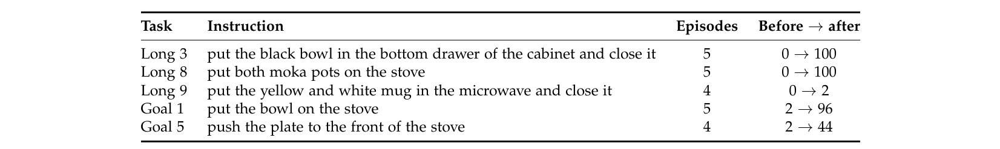
A mirrored cabinet. The third task of the Long suite asks the robot to put the black bowl in the bottom drawer of the cabinet and close it. The program solved all 50 official states, but LIBERO-Pro places the cabinet on the other side of the table, facing the other way (Figure 21a,b), and the program, whose code assumed a drawer that opens toward −y, failed in all 50 perturbed states. Its checks kept it from acting blindly: in 38 of them, it found no drawer panel where it expected one and stopped at the first step.
镜像的柜子。Long 套件的第三个任务要求机器人把黑碗放进柜子最下层的抽屉并关上。该程序解决了全部 50 个官方状态；但 LIBERO-Pro 把柜子放到了桌子的另一侧、朝向相反（图 21a,b），而程序的代码假设抽屉朝 −y 方向打开，于是在全部 50 个扰动状态上都失败。不过它的检查让它没有“盲动”：在其中 38 个状态里，它在预期位置找不到抽屉面板，于是在第一步就停了下来。
Resuming from its workspace, the agent identified the cause in its first episode on the perturbed layouts and, rather than rewriting the program, added a 36-line layer that mirrors the frame in which it plans: points, orientations, and action rows are reflected across the plane y = 0 whenever the cabinet stands at −y (the listing below). The program decides the side itself, from the flat top of the cabinet in the agent-view point cloud (Figure 21c). In a stress test, the agent moved the wine bottle in front of the drawer and found that its detector of the drawer panel took the bottle for the panel; it narrowed the detector’s window, and with its five episodes spent, the adapted program completed all 50 perturbed states (Figure 21d).
从工作区继续之后，智能体在扰动布局上的第一个回合就找到了原因；它没有重写程序，而是新增了一个 36 行的“镜像层”，用来镜像它做规划的那个坐标系：只要柜子位于 −y 侧，点、朝向与动作行都会关于平面 y = 0 做反射（见下方清单）。程序自己依据智能体视角点云中柜子的平顶来判断在哪一侧（图 21c）。在一次压力测试中，智能体把酒瓶挪到抽屉前方，发现它的抽屉面板检测器把酒瓶当成了面板；它收窄了检测器的窗口，最终在五个回合用尽的情况下，适配后的程序完成了全部 50 个扰动状态（图 21d）。
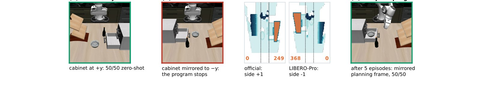
frame.py · 适配期间加入的镜像层（节选）"""World <-> planning frame. The controller plans in a frame where the cabinet stands at +y and its drawer
opens toward -y (the layouts it was developed on). A cabinet at -y facing +y (swapped layouts) is handled by
mirroring y: points (x, -y, z), rotation vectors (-wx, wy, -wz) (pseudovector under the reflection), action rows
likewise. The mirror is an involution, so the same functions map both ways."""
MIRROR = False
def pts(P):
if not MIRROR:
return P
P = np.array(P, dtype=float, copy=True)
P[..., 1] *= -1
return P
# state(s) mirrors the 8-D state in the same way
def row(r):
"""7-D action row [dx, dy, dz, drx, dry, drz, grip]."""
r = list(r)
if MIRROR:
r[1], r[3], r[5] = -r[1], -r[3], -r[5]
return rE ASPIRE 在 LIBERO-Pro 上的探索预算p.57
ASPIRE (Lu et al., 2026) writes robot programs in CaP-X (Fu et al., 2026) with Claude Code and Claude Opus 4.6. Its programs call the CaP-X interfaces for perception, including text-prompted segmentation and vision-language pointing, for grasp planning, including a top-down grasp selector, for inverse kinematics, and for joint-space motion, and they may not read the simulator’s ground-truth state.
ASPIRE（Lu et al., 2026）使用 Claude Code + Claude Opus 4.6，在 CaP-X（Fu et al., 2026）中编写机器人程序。它的程序调用 CaP-X 的各类接口：感知（包括文本提示的分割与视觉语言指点）、抓取规划（包括一个俯视抓取选择器）、逆运动学以及关节空间运动；这些程序不得读取仿真器的真值状态。
On LIBERO-Pro, the unit of development is a task under one perturbation: each of the 30 tasks of the Spatial, Object, and Goal suites is developed separately for the position and the task perturbation, giving 60 programs, each written for its own perturbed suite.
在 LIBERO-Pro 上，其“开发单元”是“某一扰动下的某个任务”：Spatial、Object 与 Goal 三个套件的 30 个任务，各自分别针对“位置扰动”和“任务扰动”开发，共得到 60 个程序，每个程序都是为它自己那套扰动专门写的。
For each task and perturbation, ASPIRE executes an initial program on a debugging split of 15 environment seeds (51–65), where a seed fixes one instance of the task, including object poses, distractors, and the initial state of the robot. After each execution, the coding agent reads a trace of every primitive call, with its inputs, outputs, and return status, the camera frames before and after the call, grasp candidates, object poses, and motion-planning results. It diagnoses the failure, patches the program, and replays the debugging seeds, with at most three replays per seed.
对每个任务与每种扰动，ASPIRE 先在一个由 15 个环境种子（51–65）构成的“调试划分”上执行初始程序——一个种子固定了任务的一个实例，包括物体位姿、干扰物与机器人初始状态。每次执行之后，编程智能体读取每个原语调用的轨迹（含输入、输出与返回状态）、调用前后的相机帧、抓取候选、物体位姿与运动规划结果；它诊断失败、修补程序，并重放这些调试种子，每个种子至多重放三次。
On some tasks, an evolutionary search additionally proposes K candidate programs per iteration, conditioned on the three best programs and their failure traces, and executes each candidate on the debugging split; the reported searches run for up to four iterations, and K is not reported. The final program is executed once on a validation split of 15 further seeds (66–80) and then evaluated on seeds 1–50. A coordinator promotes validated repairs into a shared library of skills, each stored with its failure signature, its condition of use, its repair strategy, and a code sketch, which later sessions read as in-context guidance. With the same loop on Claude Opus 5, Kang et al. (2026) report a median of 0.99 hours and 91 thousand output tokens per task and perturbation.
在某些任务上，还会额外做进化搜索：每轮以最好的三个程序及其失败轨迹为条件，提出 K 个候选程序，并在调试划分上分别执行；论文报告的搜索最多迭代四轮，但未说明 K 的取值。最终程序先在另外 15 个种子（66–80）组成的“验证划分”上执行一次，然后在种子 1–50 上评测。一个协调者会把通过验证的修补提升进共享技能库，每项技能记录其失败特征、使用条件、修补策略与代码骨架，供后续会话作为上下文内指导阅读。Kang et al. (2026) 报告，在 Claude Opus 5 上使用同样的闭环，每个任务与每种扰动中位耗时 0.99 小时、消耗 9.1 万输出 token。
The debugging and validation seeds index instances of the same perturbed suite as the evaluation seeds, so every rollout before the final evaluation is drawn from the distribution on which the program is evaluated. This is also required by the task perturbation, which changes the goal of the task: a program developed on the original task would pursue the original goal. ASPIRE’s result on the Long suite comes from a separate setting, in which a skill library built on the 90 tasks of LIBERO-90 is applied to the Long tasks without any debugging on them.
调试与验证种子所索引的，是与评测种子同一个扰动套件中的实例——因此最终评测之前的每一次 rollout 都取自程序将被评测的那个分布。任务扰动本身也要求如此：它会改变任务目标，而在原任务上开发的程序会去追求原目标。ASPIRE 在 Long 套件上的结果来自另一种设置：把在 LIBERO-90 的 90 个任务上构建的技能库直接应用到 Long 任务上，不在这些任务上做任何调试。
ASPIRE does not report the total number of rollouts per task; Table 20 gives the budget that its protocol implies, alongside that of RAX. With at most 5 rollouts from the evaluation distribution on the five tasks that adapted to the perturbation (Section D.4), and none on the other 35, RAX exceeds ASPIRE on every suite under position perturbation, by 28.2 points on Spatial, 2.0 on Object, 6.0 on Goal, and 48.8 on Long (Table 6).
ASPIRE 没有报告每个任务的总 rollout 数；表 20 给出了其协议所隐含的预算，并与 RAX 并列。RAX 只在 5 个做过扰动适配的任务上（D.4 节）使用了至多 5 次来自评测分布的 rollout，其余 35 个任务上为 0 次；即便如此，它在位置扰动下的每个套件上都超过 ASPIRE：Spatial +28.2、Object +2.0、Goal +6.0、Long +48.8（表 6）。
| ASPIRE | RAX | |
|---|---|---|
| 每个任务的程序数 Programs per task | 每种扰动一个 one per perturbation | 一个，在 40 个任务中的 5 个上做过适配 one, adapted on 5 of 40 tasks |
| 来自评测分布的实例数 Instances from the evaluation distribution | 30 | 0，或在适配时最多 5 个 0, or up to 5 when adapted |
| 这些实例上的 rollout 数 Rollouts on these instances | 最多 75，另加进化搜索 up to 75, plus evolutionary search | 0，或在适配时最多 5 个 0, or up to 5 when adapted |
| 在未扰动布局上的探索 Exploration on unperturbed layouts | — | 至多 20 个回合 up to 20 episodes |
| 扰动下的评测 Evaluation under perturbation | 在其上开发之后 after development on it | 零样本，或适配之后 zero-shot, or after adaptation |
F 图 1 的汇总结果p.58
The two simulation charts of Figure 1 summarize RoboDojo, BEHAVIOR-1K, HumanoidArena, DexJoCo, and LIBERO-Pro, and compare RAX with the strongest prior model, that is, with learned policies such as VLAs and world action models rather than with other agents. For each benchmark, the right chart pairs the average success rate of RAX, with each task at its largest budget, with the average of the strongest prior model on the same tasks: VPP2 on RoboDojo, the highest-ranked challenge entry on BEHAVIOR-1K, WB-WAM on HumanoidArena, ME-Dex on DexJoCo, and VPP2 on LIBERO-Pro.
图 1 的两幅仿真图汇总了 RoboDojo、BEHAVIOR-1K、HumanoidArena、DexJoCo 与 LIBERO-Pro，并把 RAX 与最强的“先前模型”比较——即 VLA、世界动作模型这类学习型策略，而不是其他智能体。对每个基准，右图把 RAX（每个任务取其最大预算）的平均成功率，与最强先前模型在相同任务上的平均作对比：RoboDojo 上是 VPP2，BEHAVIOR-1K 上是排名最高的参赛方案，HumanoidArena 上是 WB-WAM，DexJoCo 上是 ME-Dex，LIBERO-Pro 上是 VPP2。
On LIBERO-Pro, the chart therefore compares with VPP2 (42.3%), the strongest model under position perturbation, and not with the coding agent ASPIRE (63.2%), which we compare with in Section 5.2.5. On DexJoCo, the chart includes only the five bimanual tasks, iPad, Hanoi, Assembly, Microwave, and Photo. The six single-arm tasks are too easy to show the effect of scaling, since RAX solves each of them within a few exploration episodes, and the bimanual tasks are the harder part of the benchmark: with 32 exploration episodes, RAX averages 94.3% on them, against 48.8% for ME-Dex.
因此在 LIBERO-Pro 上，该图比较的对象是位置扰动下最强的模型 VPP2（42.3%），而不是编程智能体 ASPIRE（63.2%）——与后者的比较放在 5.2.5 节。在 DexJoCo 上，该图只包含五个双臂任务：iPad、Hanoi、Assembly、Microwave 与 Photo。六个单臂任务太简单、看不出规模化的效果（RAX 在几个探索回合内就解决了每一个），而双臂任务才是该基准中更难的部分：在 32 个探索回合下，RAX 在它们上平均达到 94.3%，ME-Dex 为 48.8%。
The average margin of 37.4 points stated in the abstract and the introduction is the mean of the five margins of this chart, 53.4 on RoboDojo, 38.3 on BEHAVIOR-1K, 7.9 on HumanoidArena, 45.5 on the bimanual tasks of DexJoCo, and 42.1 on LIBERO-Pro.
摘要与引言中给出的 37.4 分平均优势，正是这幅图中五个差距的平均值：RoboDojo 53.4、BEHAVIOR-1K 38.3、HumanoidArena 7.9、DexJoCo 双臂任务 45.5、LIBERO-Pro 42.1。
The per-benchmark margins listed in the introduction instead compare with the strongest prior result of any kind on all tasks of each benchmark. On DexJoCo, this is the average of all eleven tasks at 32 exploration episodes, 96.7%, against ME-Dex at 65.3% (+31.4), and on LIBERO-Pro it is ASPIRE (+21.2). Section 5.2.4 further reports the best session of each task across budgets, which averages 99.5%.
而引言中列出的分基准优势，比较的是“每个基准全部任务上、任一类型的最强先前结果”。在 DexJoCo 上，这是全部十一个任务在 32 个探索回合下的平均 96.7%，对 ME-Dex 的 65.3%（+31.4）；在 LIBERO-Pro 上则是 ASPIRE（+21.2）。5.2.4 节还报告了各任务跨预算的最佳会话，平均为 99.5%。
The left chart averages, at each budget, the success rates of the tasks within each benchmark and then the five benchmarks with equal weight. A task without a result at a budget shown counts with its result at the largest smaller budget. On LIBERO-Pro, 37 of the 40 tasks have a budget of 15 exploration episodes and use 11 to 15, Goal 1, 5, and 9 have a budget of 20 and use 18, 20, and 19, and the 40 tasks use 14.2 on average (13.5 on Spatial, 14.0 on Object, 15.1 on Goal, and 14.0 on Long), so their results are included at 16. The dashed line, 41.2%, is the mean of the strongest prior models of the right chart.
左图在每个预算点上，先对每个基准内部各任务的成功率取平均，再对五个基准等权平均。某个任务在所示预算上没有结果时，就用它在“小于该预算的最大预算”上的结果计入。在 LIBERO-Pro 上，40 个任务中有 37 个的预算是 15 个探索回合、实际用了 11–15；Goal 1、5、9 的预算是 20、实际用了 18、20、19；40 个任务平均用了 14.2（Spatial 13.5、Object 14.0、Goal 15.1、Long 14.0），因此它们的结果被计入 16 这一档。虚线 41.2% 是右图中各最强先前模型的平均值。
G 真实机器人任务Real-Robot Tasksp.59
This section describes the setup of every real-robot experiment: the task, the robot and its sensors, what the agent was given, what the operator did, how many trials the agent ran, how success was judged, and the final outcome. Five tasks use a Franka FR3 arm with a parallel gripper, two exterior RGB-D cameras (left and right of the table), and an RGB-D camera on the wrist; the sixth uses a Rainbow RB-Y1 mobile manipulator with an RGB-D camera on its head.
本节描述每个真实机器人实验的设置：任务、机器人与传感器、智能体得到了什么、操作员做了什么、智能体跑了多少次试验、成功如何判定，以及最终结果。五个任务使用一条 Franka FR3 机械臂，配备平行夹爪、两个外部 RGB-D 相机（桌子左右各一）以及一个腕部 RGB-D 相机；第六个任务使用 Rainbow RB-Y1 移动操作平台，其头部装有一个 RGB-D 相机。
The control interfaces are those of Section 4.2. In every task the agent received only the task text quoted below, typed by the operator, and the robot’s tools; it received no demonstrations, no object models, and no trained policy. Each session ran Claude Code with maximum reasoning effort. The agent could send requests to the operator through its tools, and the operator could reply in a chat; we report every reset and intervention recorded in the agent’s notes. Times are local wall-clock times taken from the agent’s notes and the camera recordings, which are timestamped frame by frame. The key-frame figures show raw camera frames without overlays.
控制接口即 4.2 节所述。在每个任务中，智能体只拿到操作员输入的、下文引用的任务文本，以及机器人的工具；它没有得到任何演示、任何物体模型、任何训练好的策略。每次会话都运行 Claude Code，并采用最大推理强度。智能体可以通过工具向操作员发请求，操作员可以在聊天中回复；我们报告智能体笔记中记录的每一次重置与干预。时间均取自智能体笔记与逐帧带时间戳的相机录像的本地墙上时间。关键帧图均为未经叠加的原始相机帧。
G.1 找方块（Find the Cube）p.59
Task. The operator hides a white cube of about 3 cm under one of four inverted green cups (about 9.3 cm tall) and shuffles the cups by hand; the robot must then lift the cup that holds the cube away and grasp and lift the cube. The task text was: “First wait for the operator to place a cube under a green cup and watch it permute the positions of the cups. after it finishes, you should identify the cup with the cube insides and lift the cup away, then grasp the cube and lift it in the gripper, as success.” The agent had to watch the shuffle while it happened: it held the arm still at a watch pose above the cups and recorded the wrist camera’s stream, then identified the cup from that recording.
任务。操作员把一个约 3 cm 的白色方块藏到四个倒扣的绿色杯子（约 9.3 cm 高）之一下面，并用手打乱杯子；机器人随后必须把藏着方块的杯子提走，并抓住、提起方块。任务文本为：“先等操作员把方块放到一个绿色杯子下面，并观看它改变杯子的位置。结束后，你要找出里面藏着方块的那个杯子，把杯子提走，然后抓住方块并把它提在夹爪里，就算成功。” 智能体必须在打乱发生的当下观看：它把手臂静止保持在杯子上方的“观看位姿”，录制腕部相机的视频流，再从这段录像中识别杯子。
Operator. The operator hid the cube, shuffled the cups, and reset the scene between trials when the agent asked. During the session the operator made the game harder in three steps. At first the cube was covered by a cup and the cups were slid around. In later trials the operator also lifted the cube and moved it, or set a decoy cup on its old spot. From 21:35 the operator dropped the cube into an upright cup, not necessarily the nearest, turned that cup over, and then shuffled. From 21:50 the cube was replaced by a red wedge of about 4 cm.
操作员。操作员负责藏方块、打乱杯子，并在智能体请求时于两次试验之间重置场景。在会话过程中，操作员分三步加大了难度。最初，方块被杯子扣住、杯子在桌面上滑动。之后的试验里，操作员还会把方块提起来挪走，或在它原来的位置放一个诱饵杯。从 21:35 起，操作员把方块丢进一个正立的杯子（不一定是最近的那个），把杯子翻转过来，然后再打乱。从 21:50 起，方块被换成一个约 4 cm 的红色楔块。
Trials and outcome. The agent ran 12 trials between 20:08 and 22:35, and recorded each in its notes; trials that stopped partway were resumed from the step that failed. In the first trial the shuffle started before the arm reached the watch pose. In the next two the agent finished parts by hand-issued commands, and in the third its tracker assumed a static cube and chose the decoy.
试验与结果。智能体在 20:08 至 22:35 之间进行了 12 次试验，并逐一记入笔记；中途停止的试验会从失败的那一步继续。第一次试验中，手臂还没到达观看位姿，打乱就开始了。接下来两次试验里，智能体用手工下达的指令完成了部分步骤；第三次试验中，它的跟踪器假设方块静止不动，因而选错了诱饵杯。
Trials 4, 5, and 6 were three consecutive end-to-end successes of the agent’s program without intervention, in 166, 231, and 194 s. Trial 7 missed the moment the cup covered the cube; trial 8 identified the cup correctly but pinched the cube through the cup wall and carried both, after which the agent grasped cups higher and with less force. Trial 9 introduced a new way of hiding the cube: dropped into an upright cup that was then turned over. The program recognized no hiding event it knew and stopped without moving the robot. The agent adapted on the spot: it added a detector for a cube lying inside an upright cup, checked it on the recorded stream and on all seven recordings so far, and resumed the same scene one minute later, when the robot lifted the predicted cup and grasped the cube in 98 s (Figure 22). Figure 24 shows how its program tracks the cups.
第 4、5、6 次试验是智能体程序连续三次端到端、无干预的成功，分别用时 166 s、231 s 与 194 s。第 7 次试验漏掉了“杯子扣住方块”的那一刻；第 8 次试验正确识别了杯子，却隔着杯壁把方块一起夹住并搬走——此后智能体改为更高、更轻地抓取杯子。第 9 次试验引入了一种新的藏法：把方块丢进正立的杯子后再翻转过来。程序没有识别出任何它认识的“藏匿事件”，于是原地停下、没有让机器人动作。智能体当场做了适配：增加了一个“正立杯内方块”检测器，在录像流以及此前的全部七段录像上做了检验，一分钟后就从同一场景继续，机器人提起预测的杯子并在 98 s 内抓住了方块（图 22）。图 24 展示了它的程序如何跟踪杯子。
With the red wedge, the cup was identified correctly in trials 10 and 11; the wedge was grasped after several fixes and manual help in trial 10, and on the first attempt in the resumed trial 11 (Figure 23). For the wedge the agent kept the cup tracker and 20 of the program’s 41 functions unchanged, generalized its model of the hidden object to a measured size, color, and height, and changed the grasp to close on the wedge along two axes. Success was judged from the gripper width after the grasp and from the wrist camera’s view of the object in the gripper.
换成红色楔块后，第 10、11 次试验都正确识别了杯子；楔块在第 10 次试验中经过若干修正与人工帮助才被抓住，而在继续进行的第 11 次试验里一次成功（图 23）。针对楔块，智能体保留了杯子跟踪器与原程序 41 个函数中的 20 个，把“被藏物体”的模型泛化为由实测尺寸、颜色与高度参数化的形式，并把抓取改成沿两个轴向闭合楔块。成功与否由抓取后的夹爪开度、以及腕部相机中“物体在夹爪内”的画面判定。
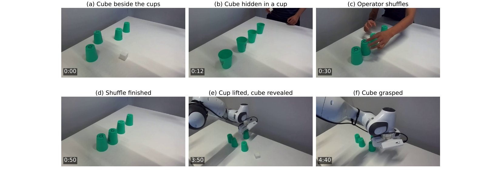
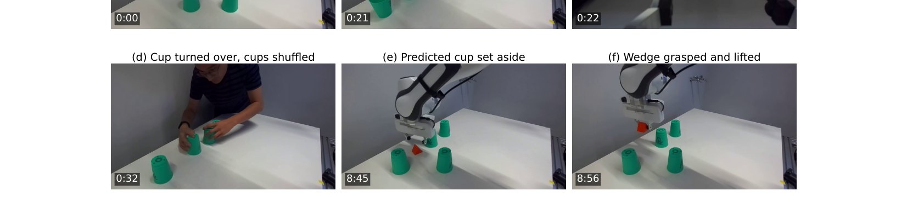
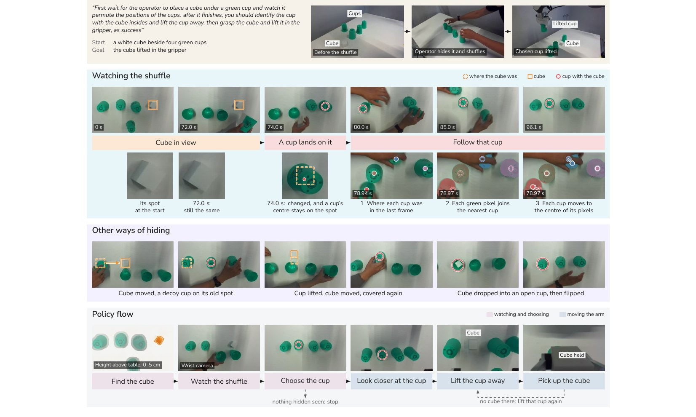
G.2 空气炸锅p.63
Task. The robot must open the drawer of an air fryer by its handle, put a banana into the basket, and close the drawer. The task text was: “You should open the air fry pan, put the banana inside, and close it. Reminder: the plate is really heavy and you should figure out where to grasp and the force applied. Also if the position of the air fry pan is out of range you may ask for operator reset. Be careful about the forces and maybe not pull out the plate entirely so we do not have to lift it in everytime.” The agent’s perception, its articulated model of the fryer, and its verification are described in Section G.2.1.
任务。机器人必须握住把手打开空气炸锅的抽屉，把一根香蕉放进炸篮，再关上抽屉。任务文本为：“打开空气炸锅，把香蕉放进去，然后关上。提醒：托盘很重，你要想清楚该在哪里抓、用多大的力。另外，如果空气炸锅的位置超出范围，你可以请求操作员重置。注意力的大小，也许不要把托盘完全拉出来，这样我们就不必每次都把它抬起来。” 智能体的感知、它对炸锅的铰接式模型以及它的校验方式，见 G.2.1 节。
Operator. The operator reset the scene between runs; after the first run, for example, the operator took the banana out of the basket, which the robot cannot reach into. Between runs the fryer was moved (by about 6 cm and 4 cm in the two table directions before run 7) and rotated it (so that the handle faced the robot’s base, before run 8). Before the final run the operator moved the banana away from the left camera at the agent’s request and added an orange ball as a second object.
操作员。操作员在两次运行之间重置场景；例如第一次运行之后，操作员把香蕉从炸篮里取了出来，因为机器人伸不进去。两次运行之间，炸锅被移动（第 7 次运行前在桌面两个方向上分别移动了约 6 cm 与 4 cm）、也被旋转（第 8 次运行前，把手转向机器人基座）。在最后一次运行之前，操作员应智能体请求把香蕉从左相机前方挪开，并加入一个橙色小球作为第二个物体。
Runs and outcome. The session lasted from 09:18 to 12:05. The agent first completed the task once by direct tool calls (run 1, about 75 minutes including exploration), then wrote a program and ran it nine times (runs 2–10). Run 2 ended with a safety stop when the elbow hit the left camera; the collision moved the right camera, which the agent stopped using.
运行与结果。会话从 09:18 持续到 12:05。智能体先用直接工具调用完成了一次任务（第 1 次运行，含探索约 75 分钟），然后写出程序并运行了九次（第 2–10 次运行）。第 2 次运行以安全停机告终——肘部撞上了左相机；这次碰撞使右相机发生位移，智能体随后停止使用右相机。
Runs 4, 5, and 8 needed resumes after a false-negative check, a descent timeout, and refused long moves, and run 8 also needed recovery commands issued by the agent. Runs 6, 7, 9, and 10 were clean unattended successes, including run 7 on the moved fryer and run 9 on the rotated one. In the final run the program opened the drawer by 13.1 cm, placed the banana and then the ball in the basket, and closed the drawer, in 210 s, leaving the handle 3.5 mm from its initial position; Figure 27 shows it.
第 4、5、8 次运行需要“续跑”：原因分别是一次假阴性检查、一次下降超时以及长距离移动被拒；第 8 次还需要智能体下达恢复指令。第 6、7、9、10 次是干净的无人值守成功——包括在移动过的炸锅上的第 7 次、以及在旋转过的炸锅上的第 9 次。在最后一次运行中，程序把抽屉拉开 13.1 cm，依次把香蕉与小球放进炸篮，再关上抽屉，全程 210 s，把手最终距初始位置仅 3.5 mm；图 27 即为该次运行。图 25 展示了程序如何处理炸锅布局、相机被撞与释放。
Success was judged by the agent’s own measurements: the drawer opening, the objects’ points inside the basket rim, and the handle’s final position.
成功与否由智能体自己的测量判定：抽屉的开度、物体上的点是否落在炸篮边缘之内，以及把手的最终位置。
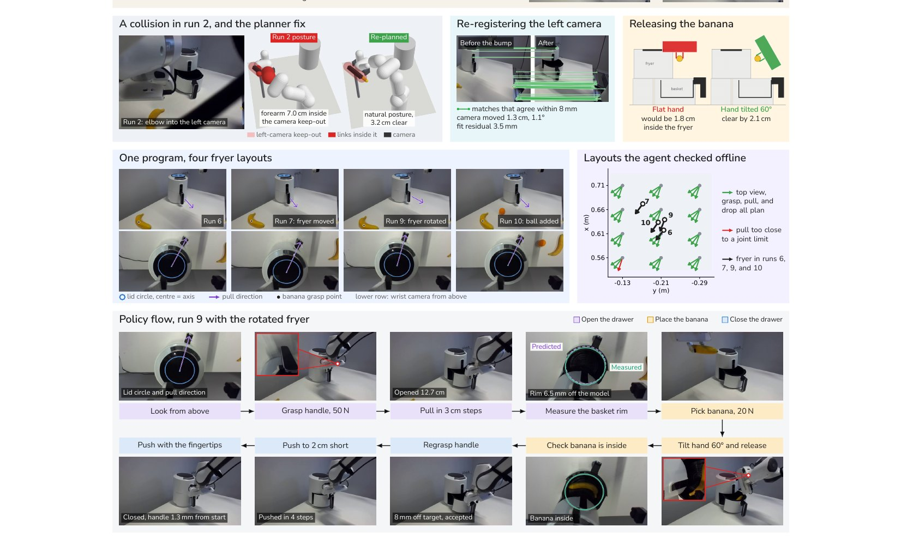
G.2.1 智能体自己写的三维感知p.63
This section details the perception code behind Figure 3. The task is to open the drawer of an air fryer by its handle, put a banana into the basket, and close the drawer, on a real Franka FR3 with a left exterior and a wrist RGB-D camera. The agent wrote the perception and the program itself, in about 1,500 lines of Python; they use no learned detector and no vision-language model. All numbers below are from the agent’s final run.
本节详述图 3 背后的感知代码。任务是在一台真实的 Franka FR3 上（配一个左外部相机与一个腕部 RGB-D 相机），握住把手打开空气炸锅抽屉、把香蕉放进炸篮、再关上抽屉。感知与程序全部由智能体自己编写，约 1,500 行 Python；其中不使用任何学习型检测器，也不使用视觉语言模型。以下所有数字都来自智能体的最后一次运行。
Lifting to a metric frame. Every depth pixel is back-projected with the camera intrinsics and the camera-to-base pose into the robot’s base frame, and the views of the exterior and wrist cameras are fused in that frame. All later computations operate on these points; estimates are projected back into the images only to check them.
提升到公制坐标系。每个深度像素都用相机内参与“相机到基座”的位姿反投影到机器人基座坐标系中，外部相机与腕部相机的视图在该坐标系内融合。此后所有计算都在这些点上进行；只有在需要核验时，估计值才会被投影回图像。
Segmentation and geometric primitives. Each part of the scene is selected by a colour threshold combined with a height band and a workspace region: the dark lid on top of the fryer, its white body, the dark handle outside the body, the yellow banana, and an orange ball just above the table. Geometric primitives are then fitted to the selected points, each with a plausibility check on its size:
分割与几何原语。场景的每一部分都通过“颜色阈值 + 高度带 + 工作空间区域”选出：炸锅顶部的深色盖、白色锅体、锅体外侧的深色把手、黄色香蕉，以及桌面上方不高的橙色小球。随后对选中的点拟合几何原语，每个原语都带一个尺寸合理性检查：
• the fryer body, by a robust circle fit to its side (radius 8 to 16 cm accepted), and the lid, seen from the wrist camera above, by a second circle (4.5 to 8 cm), whose centre gives the fryer’s vertical axis c;
• 炸锅锅体：对其侧面做鲁棒圆拟合（半径接受 8–16 cm）；盖子：由上方腕部相机看到的圆做第二次圆拟合（4.5–8 cm），其圆心给出炸锅的竖直轴线 c；
• the handle, by the direction from the axis to its horizontal arm, which gives the pull direction d, the outer face of its grip in 1.5 cm height slices, the height of its arm, and its lateral offset;
• 把手：由“轴线指向其横臂”的方向给出拉动方向 d，并在 1.5 cm 的高度切片中给出握柄的外侧面、横臂高度与侧向偏移；
• the banana, by its principal axis and a quadratic centre line, which give its arc middle, the normal on its convex side, its chord (13 to 21 cm accepted; 18.0 cm here), and its height;
• 香蕉：由主轴与二次中心线给出其弧形中点、凸侧法向、弦长（接受 13–21 cm；此处为 18.0 cm）与高度；
• the basket, once the drawer is open, by a circle fitted to its rim.
• 炸篮：抽屉打开之后，对其篮沿拟合一个圆。
The pull direction from the top view must agree with the one from the side view within 12°; the side view alone was biased by about 4°, which is why the agent added the top view.
由俯视图得到的拉动方向必须与侧视图得到的结果一致到 12° 以内；单用侧视图会带来约 4° 的偏差，这正是智能体补充俯视图的原因。
Task frame and articulated model. All targets are expressed in a frame anchored on the fryer: the axis c, the pull direction d, and t = z × d. The agent also wrote an articulated model of the fryer: a fixed upper cylinder and the back of the lower body, and a drawer cylinder with box models of the handle’s grip and arm, which translate together by the drawer’s opening along d. The model provides a signed distance from any point, and the program instantiates it at the drawer’s current opening to check every planned motion for clearance between the arm, hand, fingers, wrist camera, and held object, and the fryer, the table, and keep-out regions around the exterior cameras.
任务坐标系与铰接模型。所有目标都在锚定于炸锅的坐标系中表达：轴线 c、拉动方向 d，以及 t = z × d。智能体还写出了炸锅的铰接模型：固定的上部圆柱与下部锅体后侧、一个抽屉圆柱，以及握柄与横臂的盒状模型——它们随抽屉开度沿 d 一起平移。该模型能对任意点给出有符号距离；程序按抽屉当前的开度实例化模型，用以检查每个规划动作中“手臂、手、手指、腕部相机与手中物体”相对“炸锅、桌面以及外部相机周围禁入区”的间隙。
How the agent built the model. No model of the fryer was provided. The agent first completed the task once by hand, controlling the robot step by step, and recorded what it measured in its notes: the fryer’s top at a height of 0.415 m and the seam between body and drawer at 0.245 m, a handle with a horizontal arm and a hanging grip, and the basket centre relative to the handle once the drawer was out. It also noted that the drawer slides freely along the pull direction and tips slightly when released. About 90 minutes into the session it turned these observations into the model above, in the first version of its program, and revised it in later versions. Table 21 separates what the agent estimates in each new scene from what it fixed from these measurements.
智能体是如何建出这个模型的。事先没有提供炸锅模型。智能体先用手工方式、逐步控制机器人完成了一次任务，并把测到的结果记进笔记：炸锅顶部高度 0.415 m、锅体与抽屉的接缝在 0.245 m、把手由一段横臂与一段下垂握柄组成、以及抽屉拉出后炸篮中心相对把手的位置。它还记下：抽屉沿拉动方向滑动自如，释放时会轻微下倾。会话进行到约 90 分钟时，它把这些观察变成了上述模型（在程序的第一个版本中），并在后续版本中加以修正。表 21 区分了“智能体在每个新场景中估计的量”与“它由这些测量固定下来的量”。
| 模型部件 Part of the model | 每个场景中 In each scene | 来源 Source |
|---|---|---|
| 位置与朝向（轴线 c、拉动方向 d） | 估计 | 点云中的盖子圆与把手方向 |
| 把手外侧面、横臂高度、侧向偏移 | 估计 | 点云中的把手点 |
| 抽屉开度（关节状态） | 实测 | 拉动前后把手外侧面的位移 |
| 半径、高度、把手尺寸 | 固定 | 智能体在第一次手动运行中的测量 |
Estimators. The agent does not register the whole model to the point cloud at once. Instead, each parameter of the model comes from a small, robust estimate on the points of one part of the scene, illustrated on its final run in Figure 26:
估计器。智能体并不是把整个模型一次性配准到点云上，而是让模型的每个参数都来自“对场景某一部分点云做的小型鲁棒估计”，图 26 以其最后一次运行作了图示：
1. Axis c (Figure 26a). From the wrist camera above the fryer, the dark points at the height of the lid are fitted with a circle by least squares: writing the circle as x2 + y2 = 2ax + 2by + k turns the fit into a linear system for the centre (a, b) and k, with radius √(k + a2 + b2). The fit is repeated six times, each time discarding the points that lie farthest from the current circle, so that the dark inner part of the lid and stray points do not pull the centre away. The centre is the fryer’s axis; the radius, 6.3 cm here, must lie between 4.5 and 8 cm.
1. 轴线 c（图 26a）。由炸锅上方的腕部相机，对盖子高度处的深色点做最小二乘圆拟合：把圆写成 x2 + y2 = 2ax + 2by + k，即可把拟合转化为关于圆心 (a, b) 与 k 的线性方程组，半径则为 √(k + a2 + b2)。该拟合重复六次，每次都剔除距当前圆最远的点，以免盖子深色内圈与杂点把圆心拉偏。圆心即炸锅轴线；半径在此处为 6.3 cm，必须落在 4.5–8 cm 之间。
2. Pull direction d (Figure 26b). Dark points at the height of the handle and just outside the lid are the handle’s arm seen from above. Points more than 0.25 rad from their median bearing around the axis are dropped, and d points from the axis to the median of the rest; a median ignores the few points of other dark objects.
2. 拉动方向 d（图 26b）。把手高度处、紧贴盖子外侧的深色点，就是从上方看到的把手横臂。绕轴线统计各点方位角，偏离中位方位角超过 0.25 rad 的点被剔除，d 由轴线指向剩余点的中位方位；用中位数可以忽略其他深色物体的少数点。
3. Handle face and arm height (Figure 26c). In the plane through the axis along d, the handle’s points are cut into 1.5 cm height slices. In each slice, the 97th percentile of the distance along d marks the handle’s outer face, the surface the fingers and the closing push rest on, while ignoring a few noisy points beyond it; the 95th percentile of height gives the top of the arm, which sets the grasp height.
3. 把手外侧面与横臂高度（图 26c）。在过轴线、沿 d 的平面内，把把手的点按 1.5 cm 切成高度切片。在每个切片中，沿 d 距离的 97 分位数标出把手外侧面——也就是手指与“闭合推压”所依托的那个面——同时忽略其外少量噪声点；高度的 95 分位数给出横臂顶部，用以确定抓取高度。
4. Banana (Figure 26d). The banana’s yellow points are expressed along their principal axis, found by singular value decomposition, and a quadratic curve fitted by least squares gives its centre line. The middle of that curve is the grasp point, its bulge gives the convex side that sets the hand’s orientation, and its ends give the chord, 18.0 cm here, which must lie between 13 and 21 cm.
4. 香蕉（图 26d）。把香蕉的黄色点沿其主轴（由奇异值分解得到）表示，再用最小二乘拟合一条二次曲线作为其中心线。该曲线的中点是抓取点，曲线的凸出方向给出香蕉的凸侧、从而确定手的朝向，两端给出弦长（此处 18.0 cm），须落在 13–21 cm 之间。
5. Basket rim (Figure 26e). After opening, the dark rim points are searched for around the rim predicted by the model and fitted with a circle in the same way as the lid. The measured centre lies 6.5 mm from the prediction, and the release poses use it.
5. 炸篮边缘（图 26e）。打开之后，在模型预测的篮沿附近搜索深色边缘点，并像盖子那样做圆拟合。实测圆心距预测值 6.5 mm，释放位姿即以它为准。
The drawer’s opening is the shift of the handle face between the measurements before and after the pull, and the camera pose after the bump is a rigid transform fitted by least squares to feature matches that agree with each other within 8 mm.
抽屉的开度取“拉动前后两次测量中把手外侧面的位移”；而相机被撞之后的位姿，则是用最小二乘拟合出的刚体变换——其依据是彼此一致到 8 mm 以内的特征匹配。
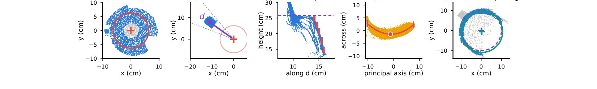
Planning on the model. Figure 27 shows each planned action on the real robot, numbered as in Figure 3(b). The handle grasp lies 1.2 cm inside the measured grip face along d and 9 mm below the top of the arm, with the hand tilted 5° toward the fryer. The drawer is pulled 12.5 cm along d in absolute 3 cm steps at a fixed height, since relative steps sagged under the drawer’s weight. The basket centre is predicted from the handle face and the opening, with an offset measured in the first manual run; the banana is released with its middle 1.5 cm beyond the basket centre and the hand tilted 60° about the banana’s axis, and the ball slightly further along d. The drawer is closed by pushing along −d, finishing with the fingertips on the grip face.
在模型上规划。图 27 展示了真实机器人上的每一个规划动作，编号与图 3(b) 一致。把手抓取点位于实测握柄面沿 d 向内 1.2 cm、横臂顶部下方 9 mm 处，手向炸锅一侧倾斜 5°。抽屉沿 d 以绝对 3 cm 的步长、在固定高度上拉出 12.5 cm——因为相对步长会在抽屉重量下“下垂”。炸篮中心由把手外侧面与开度预测，偏移量取自第一次手动运行；香蕉以其中心超出炸篮中心 1.5 cm、手绕香蕉轴线倾斜 60° 的方式释放，小球则沿 d 再稍远一点。关抽屉靠沿 −d 推，最后用指尖抵住握柄面收尾。
Verification. Each step is checked by a new measurement. The opening is the shift of the handle face (13.1 cm here), and the step fails if it falls more than 3 cm short of the command. The rim is searched for around the model’s prediction and found 6.5 mm from it, and the release poses use the measured rim. The banana counts as placed when its points lie inside the rim and below its height: 99.99% of them, with its top at 17.9 cm against a rim at 23.5 cm. Before closing, the handle is measured again, since the released drawer tips by about 2.5 cm and shifts sideways by about 1.5 cm; after closing, its face lies 3.5 mm from its initial position.
校验。每一步都用一次新的测量来核对。开度由把手外侧面的位移给出（此处 13.1 cm）；若比指令少超过 3 cm，该步即判失败。篮沿在模型预测附近搜索，实测距预测 6.5 mm，释放位姿采用实测篮沿。香蕉的点有 99.99% 落在篮沿之内、且低于篮沿高度时才算放入——其顶部在 17.9 cm，篮沿在 23.5 cm。关之前会再测一次把手，因为释放后抽屉会下倾约 2.5 cm、侧移约 1.5 cm；关好之后，其外侧面距初始位置 3.5 mm。
Sensor limits and calibration. The agent recorded two limits of its sensors and coded around them: the wrist camera’s depth is unreliable closer than about 30 cm, so metric targets come from the exterior camera; and side-view pixels on the edge of the banana take the depth of the rim behind it, so heights are measured from the top-down wrist view. When the arm bumped the left camera, whose reported pose stayed unchanged, the agent re-estimated that pose by matching image features against frames captured before the bump, lifting the matches to 3D with both depth maps, and fitting a rigid transform, with a residual of 3.5 mm and fixed landmarks within 2 to 9 mm of their references. It applies the correction only to frames captured after the bump, and it stopped using the right camera, which had moved too far to correct.
传感器限制与标定。智能体记录下其传感器的两个限制，并据此改写代码：腕部相机在近于约 30 cm 时深度不可靠，因此公制目标取自外部相机；而侧视图中香蕉边缘的像素会取到其后方篮沿的深度，因此高度改由俯视的腕部视图测量。当手臂撞到左相机时（其报告的位姿并未改变），智能体通过与撞击前所拍帧做图像特征匹配来重新估计该位姿：用两张深度图把匹配点提升到三维，再拟合刚体变换——残差 3.5 mm，固定地标的偏差在 2–9 mm 之内。该修正只应用于撞击之后采集的帧；而对于右相机，由于它移动过大、无法修正，智能体干脆停止使用。
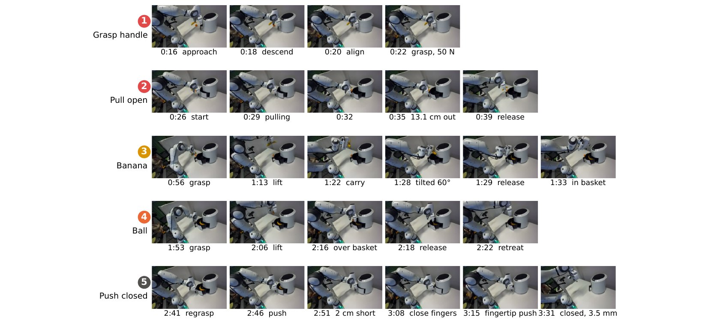
G.3 擦拭污渍p.69
Task. The robot must grasp a wet towel and wipe a soy-sauce stain off the table. The task text was: “You are given a wet towel, and I will ask you to wipe the soy sauce stain on the table using it. First get familiar with the robot and environment. When you are ready, please call for operator to pour the soy sauce on the table for you to wipe. Also, if you need help such as adding some soap to the towel also ask for operator help.” The towel is deformable and has no fixed shape on the table. The agent did not use force sensing: it pressed the towel onto the table by commanding a height 12 mm below the contact height it had measured.
任务。机器人必须抓起一块湿毛巾，把桌上的酱油污渍擦掉。任务文本为：“给你一块湿毛巾，我会让你用它擦掉桌上的酱油污渍。先熟悉一下机器人和环境。准备好之后，请叫操作员把酱油倒在桌上供你擦拭。另外，如果你需要帮助，比如给毛巾加一点洗洁精，也请向操作员求助。” 毛巾是可变形物体，在桌上没有固定形状。智能体没有使用力觉：它通过命令一个比实测接触高度低 12 mm 的高度，把毛巾压到桌面上。
Operator. The operator poured soy sauce when the agent asked, washed the towel and added soap to it between trials, and returned it to the table as a loose heap. The stains differed from trial to trial in size (the agent measured 10 to 311 cm2), shape, and position, including one next to the left camera at the edge of the reachable workspace.
操作员。操作员在智能体请求时倒酱油，在两次试验之间清洗毛巾并加洗洁精，然后把毛巾以松散的一团放回桌上。各次试验中的污渍在大小（智能体测得 10–311 cm2）、形状与位置上都不相同，其中一次就位于左相机旁、可达工作空间的边缘。
Trials and outcome. The session lasted from 09:21 to 12:46. The agent first wiped a stain by direct tool calls (two passes; the first left a smeared film, and the second, after the operator added soap, cleaned it), then wrote a program that locates the towel heap, grasps a wad of it, locates the stain against a clean reference image, scrubs it in a back-and-forth pattern, parks the towel, and checks for residue. It ran the program in 13 recorded trials and resumes (trials 1 to 7b).
试验与结果。会话从 09:21 持续到 12:46。智能体先用直接工具调用擦掉了一块污渍（两遍：第一遍留下了一层涂抹的薄膜，第二遍在操作员加了洗洁精之后擦干净了）；随后它写出程序：定位毛巾堆、抓住一团毛巾、对照一张干净参考图定位污渍、以往返的图案反复擦洗、把毛巾停放到一边，并检查残留。它把该程序跑出了 13 次有记录的试验与续跑（试验 1 至 7b）。
Failures were a refused far reach, an operator reply the program did not expect, one false “clean” verdict on thin streaks (the operator asked for a second wipe; the agent then added a check with the wrist camera at 1 mm resolution), stains next to the left camera that required fitting the wiping region to the reachable area, and a refused approach move. The last two trials, 6 and 7b, cleaned the stain in one pass without intervention; trial 7b reused the scene of trial 7 after the agent fixed the approach move (Figure 28).
失败包括：一次过远的伸展被拒绝、一次程序没有预料到的操作员回复、一次对细条纹的“已干净”误判（操作员要求再擦一遍，智能体随后加入了一项 1 mm 分辨率的腕部相机检查）、左相机旁需要把擦拭区域裁剪到可达范围内的污渍，以及一次被拒绝的接近动作。最后两次试验（6 与 7b）都在无干预的情况下用一遍擦净了污渍；7b 复用了试验 7 的场景，只是智能体已修好了那次接近动作（图 28）。
Figure 30 shows how its program finds, wipes, and checks the stain. Success was judged by the agent’s residue measurement against the clean reference in the exterior and wrist cameras (0 cm2 in both for trials 6 and 7b) and by eye in the three camera views.
图 30 展示了它的程序如何找到、擦拭并检查污渍。成功与否由智能体在外部相机与腕部相机上、相对干净参考图的残留测量来判定（试验 6 与 7b 在两处均为 0 cm2），并辅以在三个相机视角下的人工目视确认。
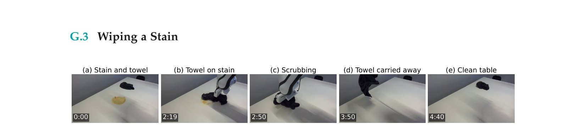
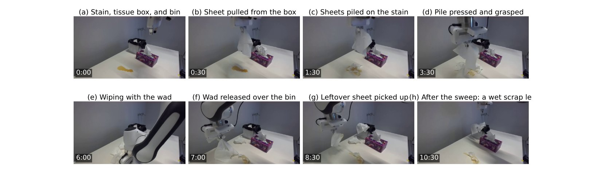
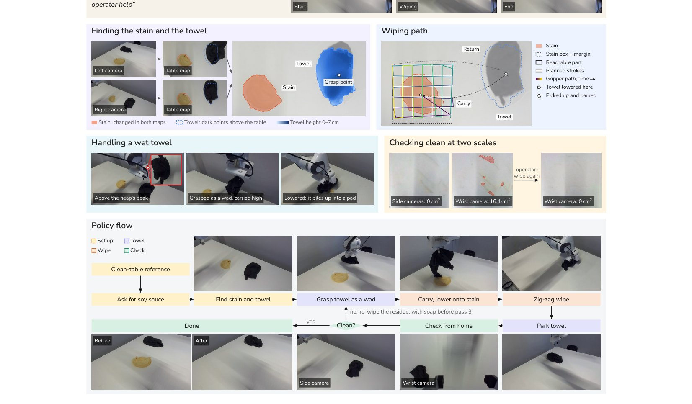
Adaptation to paper towels. Afterwards the operator asked for a variant: “pull paper towels out of the box, wipe table, and then throw them into the waste bin.” The agent wrote a new program that imports the towel program unchanged and calls its parts: locating the stain against the clean reference, fitting the wiping region to the reachable area, the press-then-grasp of a wad, the zig-zag wipe 12 mm below the measured contact, and the residue check.
适配到纸巾。之后操作员要求一个变体：“把纸巾从盒子里抽出来，擦桌子，然后把它们扔进垃圾桶。” 智能体写了一个新程序，把毛巾程序原样导入并调用其各部件：相对干净参考图定位污渍、把擦拭区域裁剪到可达范围、把纸堆“先压后抓”成一团、在实测接触以下 12 mm 做蛇形擦拭、以及残留检查。
The new code handles the paper: it finds the box and the bin, pinches the top of a protruding sheet and pulls it out, piles six sheets on the stain, releases the wad over the bin and scrapes paper stuck to the fingers, and sweeps up sheets left on the table. After three dry runs, the stain was removed in both wet runs (Figure 29), but leftover sheets, and in the second run a flat wet scrap that the sweep missed, were cleaned up with supervised scripts.
新增的代码负责处理纸张：找到纸盒与垃圾桶、捏住露出的纸巾顶端把它抽出、在污渍上叠六张纸、在垃圾桶上方释放纸团并刮掉粘在手指上的纸、以及清扫留在桌上的纸。三次干跑之后，两次“湿擦”运行都清除了污渍（图 29），但残留的纸张——以及第二次运行中被清扫遗漏的一小片扁平湿纸屑——仍需用有人监督的脚本清理。
G.4 销孔插入：ManipulationNet 挑战p.72
Task. This is the peg-in-hole challenge of ManipulationNet (Chen et al., 2026b). Its board is a transparent acrylic plate of 320 × 250 × 25 mm with blind holes 21.8 mm deep for five peg shapes, each at four clearance levels, rows L1 to L4 with 3, 1, 0.1, and 0.02 mm clearance. Neither the steel pegs, 50 mm long, nor the holes are chamfered. We used three pegs, the rectangle, the triangle, and the hexagon.
任务。这是 ManipulationNet 的销孔插入挑战（Chen et al., 2026b）。它的板子是 320 × 250 × 25 mm 的透明亚克力板，上面有 21.8 mm 深的盲孔，对应五种销子形状，每种形状有四个间隙等级：L1 到 L4 排分别为 3、1、0.1 与 0.02 mm 间隙。50 mm 长的钢销与孔口都没有倒角。我们使用了三种销子：矩形、三角形与六边形。
The task text was: “There is a white transparent board in front and below you. There are openings on top that match the shape of the silver metal pegs (3 of them. rectangle. triangle and hexagon). You need to grasp them up and insert into the holes upright. Reminder: the depth of the wrist is not accurate at close distance, so you can locate approximately and probe the position and yaw based on force feedback, to succeed in the fine insertion. If you need help or if the position is of bad IK you can ask for operator to move it.” The agent converted the public CAD files of the board and the pegs into a model of the hole positions, which it registered to the wrist camera’s image. During the session the user asked it to work toward the tighter rows, from L2 to L3. L4 was not attempted.
任务文本为：“你前方偏下有一块白色透明板。上面有与银色金属销形状相匹配的开口（共 3 个：矩形、三角形与六边形）。你需要把它们抓起来并竖直插入孔中。提醒：腕部相机在近距离下深度不准，所以你可以大致定位，并基于力反馈去探测位置与偏航，以便完成精细插入。如果需要帮助，或某些位置的 IK 不好，可以请操作员移动它。” 智能体把板子与销子的公开 CAD 文件转换为孔位模型，并将其配准到腕部相机的图像上。会话中，用户要求它向更紧的排推进，从 L2 到 L3；L4 没有尝试。
Operator. The board rests on the table unfixed. After the agent dragged it while lifting a jammed peg with a closed gripper, the operator taped the board to the table (at 01:30). The operator re-seated a hexagon peg that had toppled in L2 after a failed L3 attempt. The L3 fits are tight enough that the robot could not pull a seated peg out (15 N with rocking); before the final run the operator pulled the three pegs out of L3 and stood them upright on the table. The user also gave advice in the chat, for example to lower the peg further before turning it upright.
操作员。板子原本只是放在桌上、并未固定。在智能体用闭合夹爪拔出一根卡住的销子时把板子拖动之后，操作员把板子用胶带固定到了桌上（01:30）。在 L3 尝试失败后，操作员把一根在 L2 中倒下的六边形销子重新就位。L3 的配合很紧，机器人无法拔出已就位的销子（15 N 加晃动也不行）；最后一次运行之前，操作员把三根销子从 L3 中取出、竖立在桌上。用户还在聊天中给出建议，例如“在转正之前把销子再降低一些”。
Exploration and outcome. The agent worked by direct tool calls and its own scripts, supervised by the user; it never ran an unattended program in this task. Between 23:13 and 01:46 it inserted each peg into L1, L2, and L3 in turn (the triangle and the hexagon each failed once in L3 before succeeding).
探索与结果。在本任务中，智能体依靠直接工具调用与自己的脚本工作，并由用户监督；它从未运行无人值守的程序。23:13 到 01:46 之间，它依次把每根销子插入 L1、L2 与 L3（三角形与六边形在 L3 中各失败一次后成功）。
The user then asked for a full run, and between 02:28 and 03:22 the agent took each peg from the table and inserted it into L1, then L2, then L3, showing it upright in each row (Figure 31). Figure 32 shows how it registers the board, finds the holes by touch, and tilts the peg in. L3 needed a tilted entry with a corner of the peg first, followed by small rocking pushes while the peg was turned upright.
随后用户要求做一次完整运行；在 02:28 到 03:22 之间，智能体从桌上逐根取销，依次插入 L1、L2、L3，并在每一排都保持竖直（图 31）。图 32 展示了它如何配准板子、通过触觉找到孔、并把销子倾斜送入。L3 需要“先以一个角倾斜进入”，再在把销子转正的过程中施加小幅晃动推压。
All three pegs were seated in L3 at the end, at depths of 20.8 mm (hexagon), 19.7 mm (triangle), and 21.0 mm (rectangle), out of 21.8 mm. The full run took about 55 minutes including the operator’s extraction of the pegs from the earlier L3 attempts. Success was judged by the insertion depth the agent measured with the arm and by images of the upright pegs.
最终三根销子都就位于 L3，深度分别为 20.8 mm（六边形）、19.7 mm（三角形）与 21.0 mm（矩形），而孔深为 21.8 mm。整次运行约 55 分钟——其中包含操作员把销子从先前 L3 尝试中取出的时间。成功与否由智能体用机械臂测得的插入深度、以及销子竖立的图像来判定。
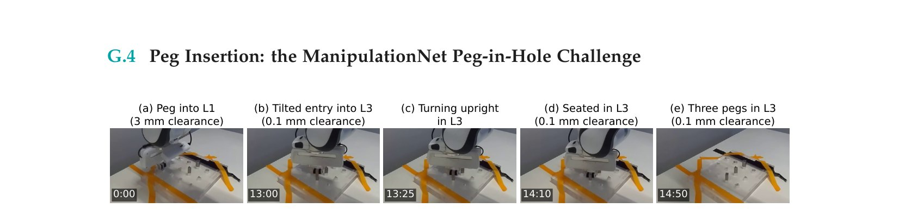
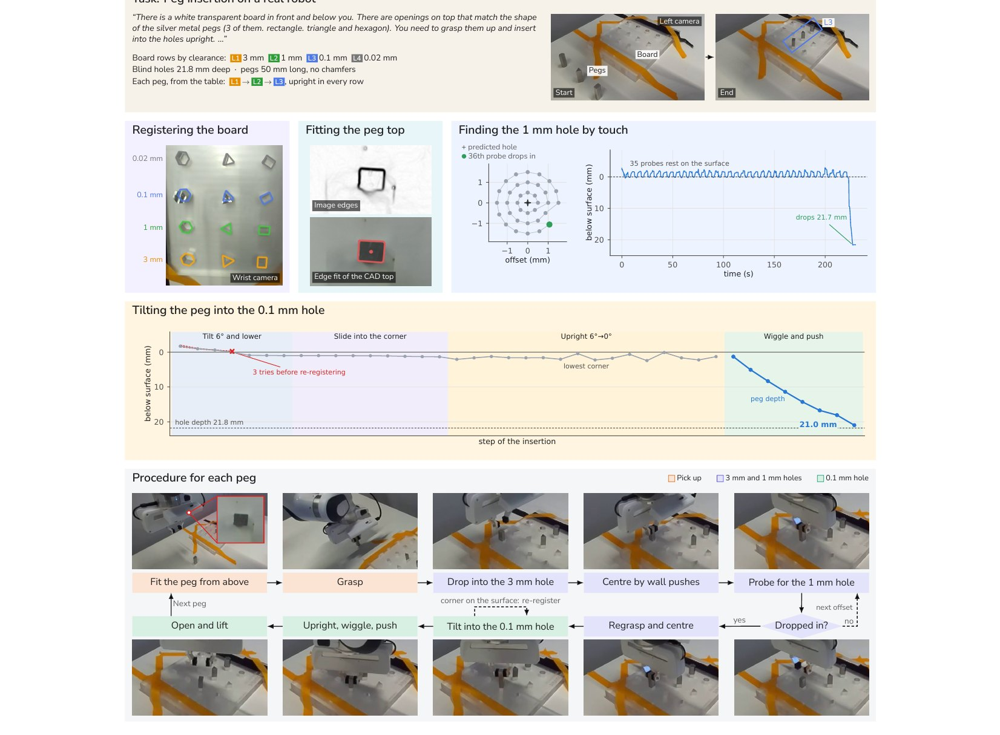
G.5 Bandu 塔p.74
Task. Bandu is a stacking game with irregular wooden pieces. The task text was a single sentence: “Stack the bandu blocks as the demonstrated tower.” The “demonstration” was a tower standing on the table when the session began; the agent was not shown how it was built. The tower stands on a base of four rectangular blocks laid in a 2 × 2 pattern and consists of seven pieces: a ring with a dowel standing in it, a barrel, a goblet with an urn seated in its cup and a knob seated in the urn, and an oblique cylinder that the user added at 13:42, asking for it on top of the barrel.
任务。Bandu 是一种由不规则木块堆叠而成的游戏。任务文本只有一句话：“按照示范的塔把 bandu 木块堆起来。” 所谓“示范”，就是会话开始时立在桌上的那座塔；智能体并未看到它是如何搭起来的。塔的底座由四块长方形木块按 2 × 2 摆放，其上共有七件构件：一个中间插着木销的圆环、一个圆桶、一个高脚杯（其杯口内坐着一个小瓮、瓮上又坐着一个小圆钮），以及用户在 13:42 加入、要求放在圆桶顶上的一个斜圆柱。
Several of these placements leave little play, and the knob’s opening clearance was about 1 mm by the agent’s estimate. The user told the agent to take the tower apart and rebuild it, and to repair its own disturbances rather than rely on human resets.
其中若干处放置几乎没有余量；据智能体估计，圆钮的开口间隙约为 1 mm。用户要求智能体把塔拆开再重建，并且要自行修复它所造成的扰动，而不是依赖人来重置。
Operator. The operator reset the pieces once after the robot’s hand swept the tower (at 15:06, during a sideways pick the user had asked for), restarted or re-homed the gripper twice, and moved one piece the arm could not reach. The user asked for visual alignment instead of a contact search for the knob (“align with at most 1 mm opening error”).
操作员。在机器人的手扫倒塔之后（15:06，发生在用户要求的一次侧向抓取过程中），操作员重置了一次木块；两次重启或回零夹爪；并挪动了一件机械臂够不到的构件。用户要求对圆钮改用视觉对齐而不是接触搜索（“以不超过 1 mm 的开口误差对齐”）。
Exploration and outcome. The session lasted from 11:13 to 17:20. The agent first took the tower apart and rebuilt it by direct tool calls, then wrote a program with a disassembly and an assembly mode and alternated them over runs 1 to 15, fixing a failure after each stop. In the final exploration cycle the program disassembled the tower (7/7 pieces, 459 s) and then rebuilt it fully automatically, without intervention: 7/7 pieces in 663 s, the knob placed by visual alignment from both exterior cameras to an offset of 0.19 mm before insertion (Figure 33).
探索与结果。会话从 11:13 持续到 17:20。智能体先用直接工具调用把塔拆开再重建，随后写出一个同时具备“拆卸模式”与“组装模式”的程序，在第 1 至第 15 次运行中交替使用，每停一次就修一个故障。在最后一个探索周期中，程序先拆卸了塔（7/7 件，459 s），然后全自动、无干预地重建：7/7 件，663 s；圆钮在插入之前由两个外部相机做视觉对齐，偏差 0.19 mm（图 33）。
Figure 34 shows how its program perceives, places, and checks each piece. Each placement was checked by the measured seat height and, for the urn, an uprightness check in both cameras; the final tower was compared with the demonstrated one in both exterior views.
图 34 展示了程序如何感知、放置并检查每一件构件。每次放置都由实测落座高度来校验；对小瓮，还要在两个相机中做竖直性检查。最终的塔在两个外部视角下与示范塔做了比对。
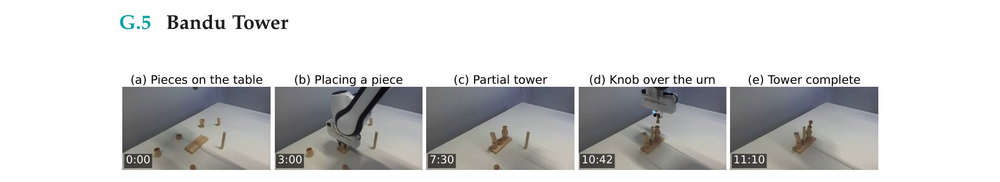
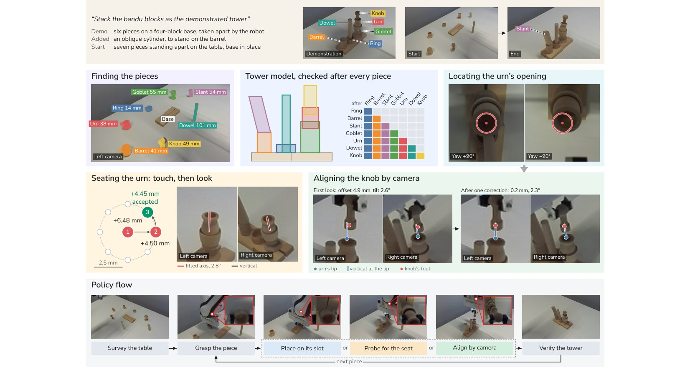
G.6 RB-Y1 上的长时序整理p.76
Task. The RB-Y1 must tidy a lab corner in six chained subtasks given in one instruction: “I want you to complete a series of tasks and you should reuse the skills while still monitor and control the process. First, you should move the chair in front of you out and park it to the left of the yellow table in front of you to clear it out of the way. then you should stack the two silver cups together and carry the stacked cups and banana over to the orange basket to your right and place them in, and pick up the orange basket on to the cabinet with dark top. Then you should move the chair back and tuck it to the table again. Finally you should pick up the box on your right and put it also on the cabinet. Be agile and reactive.” The robot perceives the scene only through its head camera and must move between the table, the basket, and the cabinet with its base.
任务。RB-Y1 必须用一条指令完成六个串联子任务，整理实验室的一个角落：“我要你完成一系列任务，并且应当复用技能，同时持续监控与控制整个过程。首先，把你面前的椅子挪出去，停到你面前黄色桌子的左侧，好把它清出通道。然后，把两个银色杯子叠在一起，把叠好的杯子和香蕉搬到你右边的橙色篮子那里放进去，再把橙色篮子拿起来放到深色台面的柜子上。接着，把椅子挪回来、重新推到桌子下面。最后，把你右边的箱子拿起来，也放到柜子上。要灵活、反应快。” 该机器人只通过头部相机感知场景，并且必须靠底盘在桌子、篮子与柜子之间移动。
Skills from earlier sessions. The agent started from a shared skill library written in five earlier RB-Y1 sessions: carrying a box between the floor and a table (bimanual-box-pnp, from three sessions), lifting the basket onto the cabinet by its rim with both grippers (bimanual-bucket-rim-pnp), and moving and tucking an office chair (office-chair-tuck) and nesting two cups (stack-cups), both from one chair session. Carrying the cups and the banana into the basket had no skill. During the session the agent added a skill for reaching hand moves (oc-hand-reach) and a composition skill for the whole task, and updated the library after each trial.
来自先前会话的技能。智能体从一个共享技能库出发——它是在更早的五次 RB-Y1 会话中写成的：在地面与桌面之间搬运箱子（bimanual-box-pnp，来自三次会话）；用两个夹爪抓着篮沿把篮子抬到柜子上（bimanual-bucket-rim-pnp）；以及移动并收纳办公椅（office-chair-tuck）与把两个杯子套叠（stack-cups）——后两者来自同一次椅子会话。而“把杯子和香蕉搬进篮子”没有对应技能。会话期间，智能体新增了一个“手部到达”技能（oc-hand-reach）和一个面向整个任务的组合技能，并在每次试验之后更新技能库。
Operator. The operator reset the scene before each trial, stayed in the loop throughout, and gave advice in the chat, such as “straighten the arms”, “lift first”, and “check the torso and height against previous skills”. In trial 1 the robot’s base hit the cabinet during a hand-planned turn, after which the agent checked the base’s swept footprint before every base move. In trial 3 the operator re-armed the robot after controller faults while the cups were being nested.
操作员。操作员在每次试验前重置场景，全程保持在环，并在聊天中给出建议，例如“把手臂伸直”“先抬起来”“对照先前的技能检查躯干与高度”。在第 1 次试验中，机器人底盘在一次手工规划的转身中撞上了柜子；此后智能体在每次底盘移动前都检查底盘扫过的范围。第 3 次试验中，在套杯过程中控制器出现故障，操作员重新对机器人上使能。
Trials and outcome. The agent ran the whole sequence three times; all six subtasks were completed in each trial (trials 1 and 2 overnight on the first day, trial 3 on the next evening). Trial 3, shown in Figure 5, ran from 19:31 to 21:09 (98 minutes), with the agent at every checkpoint of the skills. Success of each subtask was judged by the agent from head-camera images (for example, two rims visible for nested cups, both objects inside the basket, the basket and the box on the cabinet).
试验与结果。智能体把整个流程跑了三次，每次试验都完成了全部六个子任务（第 1、2 次试验在第一天夜里，第 3 次在第二晚）。第 3 次试验（即图 5）从 19:31 运行到 21:09（98 分钟），智能体参与了技能的每一个检查点。各子任务的成功由智能体依据头部相机图像判定（例如：套叠的杯子能看到两个杯沿、两件物体都在篮子里、篮子与箱子都在柜子上）。
H 算力与成本Compute and Costp.77
Across all experiments in this paper, simulated and real, the agents’ model calls consumed over 100k US dollars of API credits.
本文的全部实验（无论仿真还是真实）中，智能体的模型调用共消耗了超过 10 万美元的 API 额度。
关于这份译本
原文：Scaling Online Exploration for Robot Agents（RAX），77 页，含 34 幅插图与 21 张表。本页为逐段中英对照：左列为英文原文，右列为中文译文；插图与表格均从原始 PDF 以 200 dpi 高清裁出，点击可放大查看。
译名约定：RAX、VLA、WAM、episode 等专有名词与代码标识符保留原文；跨页断开的段落已合并为一段，以便对照阅读；代码清单保持原样（含英文注释），以保证可直接对照源码。译文力求准确，若有歧义请以英文原文（或链接的 PDF）为准。
操作提示：顶部可切换「对照 / 仅中文 / 仅英文」并调整字号；左侧目录随滚动高亮；按 Esc 关闭放大的图片；Ctrl/⌘ + P 可直接打印为双语 PDF。